| Re:バカは世界を救えるか？3 (富士見ファンタジア文庫) | |
| 柳実 冬貴 & 一葉 モカ | |
| 富士見書房 (2011) | |
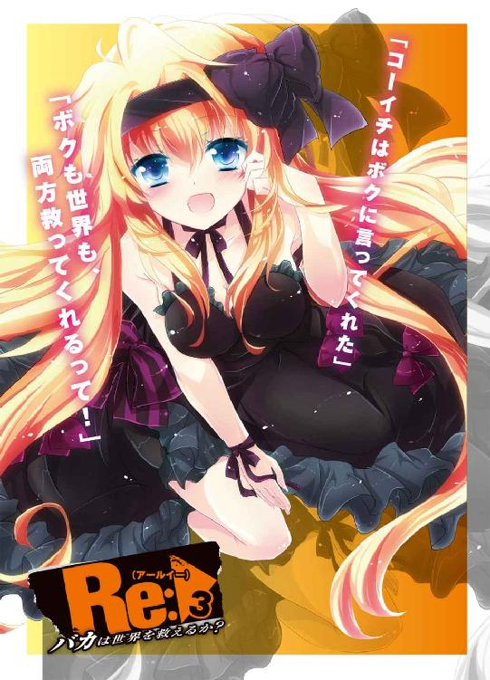
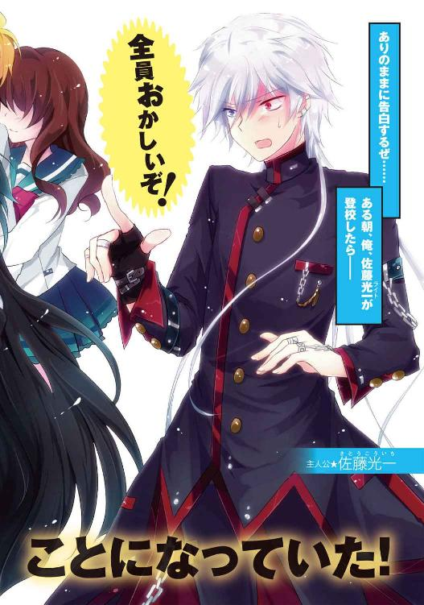
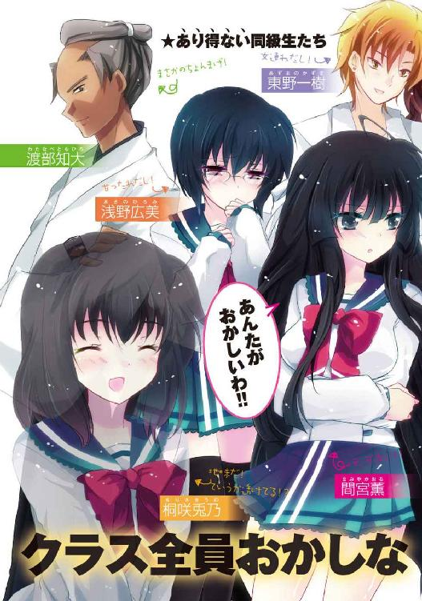
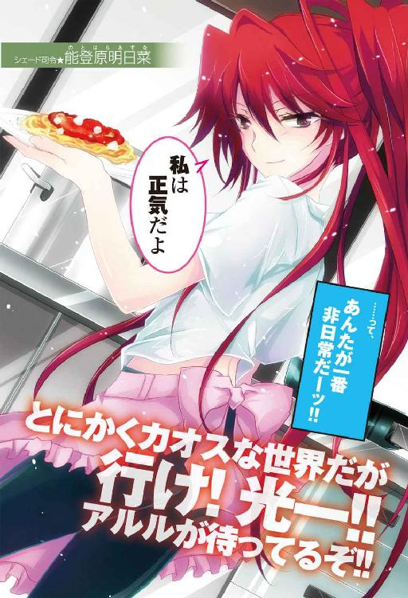
本作品の全部または一部を無断で複製、転載、配信、送信したり、ホームページ上に転載することを禁止します。また、本作品の内容を無断で改変、改ざん等を行うことも禁止します。
本作品購入時にご承諾いただいた規約により、有償・無償にかかわらず本作品を第三者に譲渡することはできません。
本作品を示すサムネイルなどのイメージ画像は、再ダウンロード時に予告なく変更される場合があります。
本作品は縦書きでレイアウトされています。
また、ご覧になるリーディングシステムにより、表示の差が認められることがあります。
口絵・本文イラスト 一葉モカ
ＣＯＮＴＥＮＴＳ
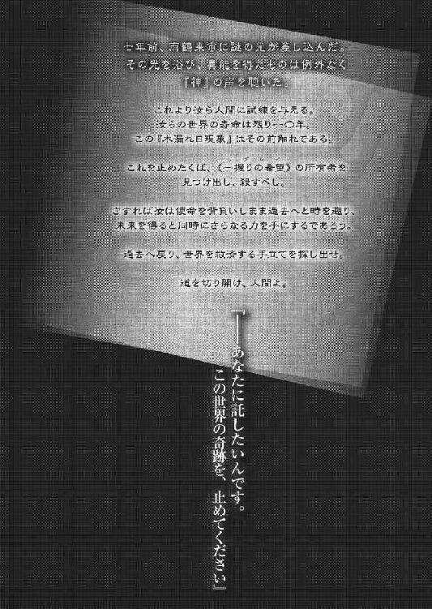
プロローグ 入植試験 薫、朝顔、光一
薫、朝顔、光一
《幸福夢幻》の世界へようこそ。
※突然ですが、例１と例２を比較して、次の問いに答えてください。
【回答者１ 間宮薫】
例１
街の中央。降り注ぐ光。人が倒れている。たくさん、たくさん道端に。空はこんなに明るいのに、街の人々は倒れたまま静かに寝息を立てていた。
見つめた自分の両手のひらは、酷く小さい。
倒れた人々の中に、二人の大人が同じように地面に転がっていた。
あたしはその二人の身体を一生懸命に揺すって、必死に眠りから起こそうとしていた。
怖くて、悲しくて、涙が零れて両手を濡らす。
その両手を、あたしよりももっと小さな手が包んだ。
それだけで、あたしの悲しみが和らいで、胸の中が温かくなった。
この時、生涯をかけてこの小さな手を守ろうと、そう誓った。
まるで呪いのように、自分の胸に刻みつけた。
例２
笑い合い、団欒する家族。頼りないけれどとても優しい、お父さんとお母さん。そして笑顔の可愛い妹の透。時々喧嘩したりもするし、お金はあんまり無いけれど仲のいい家族だ。
あたしは高校生になって、勉強と部活に精を出す。
将来の夢は透と一緒に小さなレストランを開くこと。
そしていつか結婚して、お父さんとお母さんのような仲のいい夫婦を目指す。
それが、あたしの幸せだ。
※間宮薫さん。あなたはこの辛い現実と、幸せな夢、どちらを選びますか？
薫「......見くびらないで。現実の透をほっぽって、あたしだけ幸せになるなんて、できるわけないじゃない」
［辛い現実］←
［幸せな夢］
【回答者２ 石崎朝顔】
例１
母が死んだ。いつも笑っている母だった。辛い時も、悲しい時も、いつも笑っていた。要領の悪い人だった。女手一つで私を育てて、お金も無くて、働いて、働いて、死んでいった。死ぬ間際も、笑っていた。私の顔を見て、笑っていた。
私はそんないつも笑っている母が嫌いだった。悲しいなら泣けばいいのに。辛いなら嘆けばいいのに。私はいつでも一緒に泣いて、嘆いてあげられたのに。私に気なんて遣わなくてもよかった。私の心配なんて、しなくてよかった。ただ生きていてくれれば、それでよかった。
母の葬式の日、親戚の人達が私を怒った。
「なんで母さんが死んで笑っているんだ」
笑いたくて笑ってるわけじゃない。
「酷い子だ」
私だって泣きたい。笑いたくて、笑っているわけじゃない。
......笑顔なんて、大嫌いだ。
例２
笑いたい時に笑って、泣きたい時に泣く。
その尊さを胸に、私は生きている。
昔は辛いことがたくさんあった。母はいつも笑って、辛いことを誤魔化していたとあの頃の私は思っていた。けれど大人になって、いろいろな表情を知って、母が私にいつも笑っていた理由をようやく理解できた。
今、私は幸せだ。
母が私のそばにいて、いつも笑ったり泣いたりしてくれる。
辛くてもいい。苦しくてもいい。
それだけで、私は今幸せなのだ。
※石崎朝顔さん。あなたはこの辛い現実と、幸せな夢、どちらを選びますか？
朝顔「......ママに......会えるの？」
［辛い現実］
［幸せな夢］←
【回答者３ 佐藤光一】
例１
世界を滅ぼす存在がいるけどどこにいるか全然わかんなくて。
助けを求める美少女がいるけど精神年齢が七歳で。
背中を預けるツンデレがいるけどいつもボカボカ殴られて。
仲のよかった幼馴染がいるけど昔と違って超ドＳで。
異能者をまとめる組織があるけど俺の立場がすごく微妙で。
ライバルは最強でいけすかなくて。
俺の異能は超最弱。
それでも僕は元気です......。
例２
世界を滅ぼす魔王がいて。
助けを求める美少女がいて。
魔王の配下の四天王がいて。
ウィルスをばらまく研究機関があって。
勇者にしか抜けない剣があって。
人語をしゃべる異形の右腕がついていて。
闇の力が心を浸食し始めていて。
ライバルは強いけどいつも俺に敵わなくて。
そして俺の強さがインフレ状態。
これが俺のジャスティス（キリッ）
※佐藤光一さん。あなたはこの辛い現実と、幸せな夢、どちらを選びますか？
「........................むむむ」
［辛い現実］
［幸せな夢］
※どちらを選びますか？
［辛い現実］
［幸せな夢］
「............（不服そうな顔）」
※早く選んでください。
「──！（閃いた）」
［ い現実］
［幸せな夢］
※選択肢を消さないでください。
［クール＆ハイクオリティな現実］
［幸せな夢］
「............（満足そうに頷いている）」
※選択肢をでっちあげないでください。
［クール＆ハイクオリティな現実］←
［幸せな夢］
「............（キリッ）」
※...............。
以上で終了です。
尚、この質問の記憶は夢没入時に完全に消去させていただきます。
おつかれさまでした。
それでは、良い夢を。
「 幻想をあなたに──《幸福夢幻》 」
Battle １ 夢オチ？
「............」
佐藤光一は、その光景を前にして、どうリアクションすればいいのか迷っていた。
初めは何かのドッキリだと思っていた。どうせ幼馴染連中が俺をハメようとしているに違いない......そう考えた。
しかしそれにしては手が込み過ぎている。というより、この異常は仕掛けでどうにかできるレベルではない。それこそ映画で使われるＣＧ技術か何かを用いなければ不可能だ。
どうなっている？ もしやこれは夢なのか？
試しに頰をつねってみるも、残念ながら激しく痛かった。
「......佐藤？ あんた今朝からおかしいわよ。夏でもないのに何でそんなに汗かいて......」
光一の行動を不審に思ったのか、教室内で隣に座っている間宮薫が話しかけてきた。
怪訝そうにのぞき込んでくる彼女の顔を、光一は直視できない。何故ならば、今目の前にいる間宮薫は光一の知る間宮薫ではないからだ。
混乱が加速する。
自分がおかしいのか、それとも世界がおかしいのか。ひょっとして、今までが夢で、目の前のコレが現実だとでも言うのだろうか。
あり得る話だ。非現実を得たあの日々が夢だったなんて展開、漫画にはよくあるわけだし。
そう思うだけで、光一の中の現実が揺れ動き、虚構と混ざり合って希薄になっていく。
「バカな......！」
机の上で頭を抱え、必死に己の現実を保とうとする。
「コーちゃん元気無い......お腹痛いの？」
さらに横からあり得ない人物が、あり得ない言動と、あり得ない呼称で、光一を呼んだ。その上、トロンとした瞳で心配そうに見つめてくる。
「お薬......飲む？」
泣きそうにこちらを見てくる彼女に、光一はさらに頭を抱える。
「そんな......バカな......！」
混乱が爆発する。視界がぐるぐると回り、世界のバランスが崩れるような感覚に光一は自分の髪の毛を毟る勢いで摑んだ。
何もかもが違う世界に、たった一人で立っているような気分になり、光一は教室内で叫ぶ。
「──どうしてこうなった!?」
いつものことだが、突然吠えた光一を、周りの生徒達は異なものを見る目で見つめる。
しかし今回ばかりは、光一が正しい。
彼の身の回りの環境は、実におかしなことになっていたからだ。
三時間前、毬藻寮でのことである。
「もっとだ......もっと......！」
佐藤光一の部屋。
「もっと輝けぇえええええええええええ！ え？......？」
がばりと身体を起こしてそう叫んだ光一は、動揺したように周辺を見回してから、自分がベッドの上にいることに気づいて額に手を当てた。
「なんだ夢か」
ふぅ、と安心したように息を吐いて、光一は手で煽いで胸元に風を送る。なにやら妙な夢を見ていた気がするが、よく思い出せなかった。
「......んぅ？」
と、起床した直後に、不思議な違和感が光一を襲った。
周りを見てみれば、朝日は眩しいし、部屋はいつも通りだし、起きた時間も六時前......いつも通りだ。
けれど妙に引っかかる。眠る前の記憶と、ついさっきまで見ていた夢の記憶が非常に曖昧だった。
違和感はつきまとうが、どうあれ今日は登校日だ。いつも通りの日課をこなすとしよう。
光一はパジャマハットを脱ぎ捨て、勢いよくベッドから飛び降りて華麗に床に着地した。
そして、キリッと緩んだ顔を引き締める。
「よし！」
自分の中のスイッチを切り替えて、気合いを入れる。そうすることで、光一は違和感を消し去り、登校前の朝の日課に取りかかろうとした。
部屋のドアが叩かれたのは、その時だった。
こんな朝っぱらから何者だ、と思う。朝の掃除当番の呼び出しかとも考えたが、シフト表に光一の名前は無い。
顔をしかめつつ、光一はドアノブに手を伸ばした。
ところが、光一がノブを回すよりも早く、目の前で扉が開かれた。
「......あ？」
部屋にやってきた人物を見て、光一の目が思わずまん丸になった。
「......広美？」
あの冷血かつ低血圧で朝の弱い幼馴染の浅野広美が、どういうわけか早朝六時に光一の部屋を訪ねてきた。毎日光一が起こしにいかなければ延々眠り続けそうなものなのに、この状況は前代未聞である。
それだけでも驚きなのに、さらに妙なのは、広美の佇まいだ。研ぎ澄まされた刃のような瞳は、いつもと違ってとろんとしており、威圧感が無かった。
寝ぼけているのだろうか。光一は広美の目を覚まさせてやろうと、頰に手を伸ばそうとした。
「コーちゃん、おはよ」
「............」
やはり寝ぼけている。
光一はいつもとのギャップが激しい広美の頰を思い切り揉みしだいた。
「はいはい起きやがれヒロミゴンー。コーちゃんはお前に構っているほど暇ではないのだー。俺がどんなに努力していつもの完璧なファッションを維持しているかお前にはわかるまーい」
「............」
「しかし前もやったがお前の頰は柔らかいな。なかなか癖になりそうだ......っと、そろそろ潮時か。俺は同じ間違いは二度犯さない男だ」
また理不尽な荷物持ちなどさせられてはたまらない、というのが本音である。光一は手を離して、今度は広美の頰を軽く叩いてやった。
「ほれ起きろ。寝起きが最悪な上に夢遊病なんてさすがに手に負えんぞ......」
「......う」
「......？ なんだ、どうした広美、お前......」
下を向いたまま肩を震わせる広美の顔を、光一が覗き込む。
次の瞬間、
「う、うぅ......くぅ......ふぇぇ」
いきなり、しくしくと広美が涙を流し始めた。
「──は？」
光一は完全に思考停止。両手でせわしなく涙を拭う幼馴染を前にして、何かを考えるよりもまず部屋の隅にズザザと音を立てて高速で後ずさった。食あたりでも起こしたみたいに顔を真っ青にして、冷や汗をだらだらと流す。
なにがなんだかわからない。リアクションにすごく困る。いったいこれは......。
「なんでコーちゃんはいつも、私をいじめるの......うぅ。またヒロミゴンって言ったぁ」
「な、なに？ お前まだ寝ぼけて」
口にしてから、寝ぼけているにしても限度があると考え直した。
落ち着け光一。広美がシラフでこんな態度を取るはずがない。必ず裏があるはずだ。どうせ一樹やチダイと組んで俺をドッキリ大作戦とかそういう類の罠にはめようとしているに違いない。
光一は心の動揺を隠しつつ、広美に不敵に笑ってみせた。
「ふ、ふふ。俺は騙されんぞ。貴様らのようなアホ共が俺をはめようなど、一〇〇年早いことを教えて──」
「......うぅぅうぅぅ......」
「──う、うわぁ......」
ダメだった。どう見ても演技には見えなかった。
マジ泣きだ。引くほどの。
過去の映像が頭の中を過ぎる。幼少のころ、広美を連れまわして泣かせていた日々。いつもこんな風に闇の力がどうの謎の組織がどうのというごっこ遊びにつき合わせて泣かせていた、あの頃に戻ったような感覚。
光一は、何かに耐え切れず、思わず平謝りした。
「わ、悪かった！ よくわからんが俺が悪かった！ だから泣くな！」
「うぅっ、も、もう、いじめない？」
「あ、ああいじめないっ。いじめてないけど、いじめないっ」
寝ぼけているにしろドッキリ大作戦にしろ、まさか泣かれるとは考えておらず、おおいに動揺した。幼少の頃もこうして広美に泣かれることに弱かった。いつも泣き出すと光一が泣き止むまで謝っていた。
まさか一七になってまでこの習慣が根付いているとは光一も思わなかったが......。
「......ほんとに、いじめない？」
喉をひっくひっくさせながら、広美が上目遣いで見てくる。その仕草は、目を逸らしたくなるほど可愛らしくて、さらに動揺。
しかも、次の瞬間。
「コーちゃん、優しい......」
広美は顔を綻ばせ、とてとてと近くに歩いてくると、いきなり光一の首に手を回して抱きついてきた。
「なんでやねぇぇぇぇぇぇぇん!?」
「？ いつも、泣いたあとはコーちゃん、こうして」
「そそ、そ、それは七年前の話だろう!? おま、何してっ──お前はアルルか!?」
「？」
「不思議そうな顔すんなっ！ 俺のが不思議だっつーの何だこれ!?」
思わずツッコミを入れてしまうほどの状況で、光一は硬直した。
なにこれ、あり得ない。
そんな感想しか頭に浮かばない。
（どどどどうなっていやがる！）
目の前にいる浅野広美は、光一が雨鶴来市を引っ越す前の性格に戻っているように見えた。
窓の外から差し込む朝日と、小枝に留まるスズメのアベックの囀りを耳にしながら、結局光一は動くこともできずに広美が離れるまで硬直するしかなかった。
──思えば、これが最初の異変だった。
制服が夏服から冬服に替わり、通学路の並木の葉は紅から茶に変わり始めていた。秋と冬の境目はいつも曖昧で、気づかぬ間に通り過ぎていく。
普段ならば季節の移り変わりを感じながら悦に浸って登校するのだが、今日の光一はそれどころではなかった。
「コーちゃん......足、速いよ」
すぐ後ろを、不気味なほどにしおらしい広美が息を荒らげてテトテトとついてくる。いつもなら光一を置いてさっさと上っていくのに。
「待って......置いてかないで」
か細く震えた声に光一は頭が痛くなり、こめかみを指で押して後ろを振り返った。
そこにはやはり涙ぐんだ広美がいて......。
「コーちゃぁん......」
「──ッッ！ おいおいおいおいおいっ、どういうつもりだ!? いつまで続けるつもりだお前は!?」
「続けるって......何を？」
「しらばっくれるんじゃない！ さっきからやってるそのキャラ崩壊著しい口調と仕草だ！ 何が目的だ何の冗談だどんなトラップだ!?」
得体の知れないムズムズ感に耐えられなくなり、ついに光一は頭を抱えて怒鳴りつけた。
「......？ 冗談って、なぁに？ 私、なにか変？」
「変だ。どう考えてもいつものお前じゃないッ。つかこんな茶番に付き合うような女じゃないだろうお前は......ったく誰の差し金だ。一樹か、それともチダイか？」
「............??」
「だから不思議そうな顔すんなぁ......っ」
問い詰めてくる光一に、小動物のように小首を傾げる広美。本当にハムスターかなにかのように、若干ぷるぷる震えていた。
光一はそれ以上強く言えずに、口元を痙攣させた。
やりづらい。茶番にしてもあの広美がここまで付き合う理由はなんなのだ？
と、おどおどしている広美にやきもきしていると、背後から、
「いよーぅ光一ぃ。今日も相変わらずぶっ飛んでるかぁ？」
妙に浮かれている、聞き飽きた声。幼馴染の東野一樹である。
このやろう、真犯人のおでましか。
腐れ縁のチャラ男を締め上げてやろうと背後を向く。
しかし光一が目にしたのは、いつもの一樹ではなかった。
「ハハハ、二人ともおはよう。爽やかな朝だな」
──キラリン。
一樹は純白の歯を光らせている。おまけに両脇にやたらとグラマーな女性を引き連れていた。
「......は？」
何かをやりきったような清々しい笑顔を前にして、光一はまたもや妙な違和感と若干の苛立ちを覚えた。
何故あの一樹が美女を連れて歩いている？ もっぱら女子からは「顔はいいけど軽すぎるから、友達としてはいいけど恋人としてはちょっと」だとか、「東野君？ 犬っぽくてかわいいよね、ちょっとうるさいけど。でも、それだけかな」と評判（？）の一樹が女連れで登校だと？
あり得ない。朝っぱらから信じられない光景を二度も見せつけられてしまった。
「な、何してんだ、お前」
「何って、見りゃわかるだろう？ 両手に花で登校だ」
「............お、お前が？」
「いや悪いねチミ達、昨日はこの子達がなかなか家に帰してくれなくてなぁ、朝帰りになっちまったよＨＡＨＡＨＡＨＡ！」
不自然、違和感、不可能。今の一樹を見てまず最初に考えるべきはソコなのだが、それ以前に光一は、人のことを言えた立場にはないのだが、
「──ウ、ウザいッ......！」
と思った。
「どうしたー光一そんな顔してぇ？ 俺が朝帰りなんていつものことだろぅ？ そんな悔しそうな顔しなくてもいいってー、お前もいつか俺のように童貞を捨てられる日が来るさー」
光一に哀れみの視線を送りつつ、一樹が高笑いしながら去っていく。
もはや呆然とするしかない。
あの口癖が「高校卒業までに童貞捨てる」だった一樹が、本当に卒業前に操を捨てることができるとは......。
『幼馴染で一番最後まで童貞だった奴、焼き肉奢りな』という約束を思い出して、光一は顔を青くした。
「ハハハ、まっさかそんな」
自分のくだらない推測を笑い飛ばそうとした、その時。
「あ、チダイ......おはよ」
控えめな態度の広美が、光一の背後に手を振った。
まさか......と思う。
まさかあのチダイまで、よもや童貞を......。
嫌な予感が頭を過ぎったが、すぐに、それはない、と己の不安を否定する。チダイは一樹と同じようなアホには違いないが、女性関係に関しては奥手というより硬派だ。あり得ないことが二回連続で起こっているせいで、二度あることは三度あるなどと思ってしまっただけだ。
それにまさかあのチダイに限って──
「............!?」
──振り返った瞬間、光一は絶句した。
童貞云々の不安は杞憂だった。というかそんな話はどうでもよくなった。
確かにチダイが通学路の歩道に立っている。いつも通りの日本男児然とした凜々しい表情で、姿勢良く立っている。
ただし、服装は袴で、腰には日本刀を携え、髪型がサムライヘアー、つまりちょんまげだった。
「──おはようでござる、光一殿」
そのすごく生き生きした顔とござる口調を前にして、光一の持っていたチダイへのイメージが完全に崩壊した。
二〇分後。
光一は、カオスと化した自分の教室で、孤独と闘っていた。
教室内の風景は、明らかにいつもと異なっている。異変は幼馴染だけに留まらず、クラスメイト達にまで伝播していた。
カオスである。
広美は光一のことを「コーちゃんコーちゃん」と呼びながら、目の前でニコニコと微笑んでいるし、一樹は女生徒に群がられてモテモテだし、チダイは口に笹の葉を咥えながら静かに目を瞑っている。
それだけではない。いつも大人しい眼鏡の少女は髪を金髪に染めて日焼けした肌で携帯をいじくり回し、素行不良で中退していた男子生徒の一人が、アニメイラストのプリントされたＴシャツを着ながらラブ○ラスを鬼プレイ。いきなりポエムを詠いだす女子生徒に、いつもは穏やかなのに笑顔で毒を吐き続ける生徒、他にもゴスロリファッションの女子がいたり、昨日まで華奢だったのにムッキムキになっている眼鏡君などなど、いろいろな「あり得ない」が教室に蔓延っていた。
学園祭は終わったというのに、この仮装大会のような浮き足立ちっぷりは何だというのだ......。
いつもは教室内で一番異彩を放っている光一だったが、今のこの状況では馴染んでしまっていた。故に孤独。自分を上回る異彩が周りに溢れているせいで、むしろ一人だけ取り残されているような感覚が光一を襲っているのだ。
（いったいどうなってるというのだ......これ全部一樹達の差し金なのか？）
自分の推測に自信が持てなくなってきた。ドッキリ作戦をするとしたら、何かきっかけがあるはずなのだ。たとえば、ターゲットの誕生日やエイプリルフールなどのイベントがある日などである。けれど今日は平日、ついでに誕生日でもない。ただ単に嫌がらせとして光一を貶めようなどとは、さすがに暇な幼馴染だとしてもするとは思えない。
だとしたら、いったい何があるというのだ？
「うぅむ。......ん？」
腕を組んで考えあぐねていると、前の席に座る広美がじ────っと光一を見つめていた。
「な、なんだ、じっと見て」
「............コーちゃん、今日なんか変だよ」
口を尖らせて、不思議そうに広美が言った。
調子が狂う。こいつはまだ続ける気なのだろうか......と光一は胸中で溜息を吐いた。
すると近くに晴れやかな顔をした一樹がやってきて、いつもと同じように光一の頭をくしゃくしゃと撫でる。
光一がムキーと一樹に食ってかかるも華麗にスルー。この辺りはいつもの光景だった。
「なぁんだよ広美、光一が変なのはいつものことだろう？」
「......そうだけど、なんか......」
「どうせ今だって妄想しながら組織がなんたら異能がなんたらとオナニーに耽っていたんだろ。童貞だからな」
勝ち誇った顔で一樹がポンッと光一の頭の上に手を置く。
──ビギッ！
たぶん光一ではなくとも、ここは怒っていい場面だった。
「妄想ではないし童貞も関係ないッ！ 今朝からその度し難いウザさは何だッ!? いや元からウザかったが今日は磨きがかかっているぞ......！」
「冗談だっつーのジョーダン！ そうひがむなよぅ」
慣れ慣れしく肩を叩いてくるのはいつものことだったが、今日は叩き方になんともいえない優越感が籠もっているように思えた。
「コーちゃん、一樹のことが羨ましいの......？ どーていってなぁに......？」
そして真顔でそんなことを問うてくる広美。彼女の瞳はそれはもう澄んでいて、悪意や思惑など一つも感じられない、まるでアルルのようなピュアさがあった。
広美にそんなピュアさが備わっていても、若干の鳥肌を禁じ得ない。普段から足蹴にされるのに慣れていた光一は調子が狂って仕方がなかった。
「だああああああ！ いい加減にしろよお前らっ、なんだというのだこの茶番は!? クラス全員巻き込んでこの有様はどういうことだ!?」
ついに我慢の限界に達し、とりあえず近くにいた一樹の胸ぐらを摑み上げて、目の前で怒鳴りつける。さすがに一樹も驚いたのか、両手を挙げながら、ドウドウと光一を宥めるような仕草をした。
「ど、どうした光一？ 何怒ってんだ？......あ、童貞って言ったから？」
「ちっげーよ！ いや違わないけどそこではないッ！ どうしちまったんだお前ら......広美はなんか昔に戻ってるし、一樹はウザいし、チダイは侍っぽいし......それどころかクラスの連中までおかしくなっている！」
「いや待て、何故俺だけお前の感想なんだ？」
「とにかく！ これ全部お前らの差し金なのか!? 総出で俺をはめようとしているのか!? そんなに暇なのか!?」
ヤケになった光一は、率直に問いただした。
がーっとまくしたてるように言ったものの、一樹も広美も目をぱちくりさせてお互いに顔を見合わせている。
......待て、なんだこの反応。ここは「大成功」ならぬ「大失敗」のプラカードが出てきてもいい場面ではないのか？
「光一......何の話をしてんだ？」
「だからお前らのその変わりっぷりだ！ いつもと違うだろどう考えてもッ！」
「？ 広美が昔から変わらないで、俺が女の子にモティモティで、チダイが侍なのが、お前にとっていつもと違う？」
「そうだ！ 特にチダイなんか袴着て刀持っているんだぞ！ 誰だっておかしいのに気づくっつーの！」
「............。広美の言う通り、やっぱちょっと変だぞお前」
光一の意思表示とは裏腹に、一樹は心から怪訝そうな顔をしていた。
変なのはお前らだ、とツッコミを返そうとした時、
「チダイが侍で刀持ってるのは......もうずっと前からだよね？」
広美がさりげなく近くにいたチダイに声をかけた。
刀を机の脇に立てかけて、腕を組んで目を閉じていたチダイが、こちらを向いた。
「──無論でござる。拙者は武家の生まれ、故に某は帯刀の許可を国からいただいているのでござる」
............。
日本は武家だと帯刀の許可が出る国らしい。
やはりこいつが一番衝撃的だ。確かに見た目や言動と違ってわりとアホな奴だったが、限度は心得ていた男のはず。クラスではアホ三人組の唯一の良心とまで言われていた男がこんな格好......ご乱心したとしか思えない。
光一は真面目に武家だの帯刀だのと宣ったチダイにズザザと近づいて、机を叩いた。
「どうしてしまったのだチダイ！ お前絶対そういうキャラじゃないだろう!? だ、誰かにやれって言われてやっているんだよな？ そうだよなそうだと言ってくれっ」
「......？ 拙者は自分の信条に従って生きているでござる。誰かに言われてこのような生き方を選んだのではござらん」
「そ、そんな......俺 み た い な こ と 言 う な よ ！」
珍しくもっともだった。
方向性は違えど、やっていることは普段光一がしている成りきりそのものである。
しかし、自分と同じだと言われてチダイは不服そうな顔をして、残り二人も首を傾げた。
「いやお前とチダイを一緒にしたらかわいそうだろう。こいつは家の風習を守るために自分でこういう格好をしているわけだしなぁ」
「そういう設定だったのかよ!?」
「うん......光一とチダイは......違うかな」
「何故だ!?」
「お前と一緒にするな」
「......ぐぅっ」
「でござる」
「──貴様語尾にござるつけたいだけだろう!?」
連続のツッコミのせいで、光一は息切れを起こして膝に手をついた。
一人で周りに馴染めず騒ぐ光一を、三人はかわいそうな者を見る目で見ていた。
「なっ、なんだその目はっ。変なのはお前らの方であって俺ではないッ！ 今回ばかりは俺が正しい！」
断じて否！ と豪語する光一を、気がつけばクラスメイト全員が哀れみの視線を投げかけていた。いつもこういった扱いをされている光一だが、今回は微妙にニュアンスが違う。侮蔑や嘲笑の類は一切含まれず、ただただ同情や哀れみだけが視線に込められていた。不思議なことに、その視線はいつもより痛かった。
光一はどんどん教室の端に追い詰められていく。
「こ──これは罠だッ！ 俺を陥れるためにクラス全員が仕組んだ組織的なトラップに違いない！」
必死に哀れみ視線ビームに抵抗するも、光一には喚くことしかできない。
あまりの四面楚歌に涙目になりそうになった時、一樹が光一の肩を優しく叩いた。
「何があったか知らねぇが......まあそう取り乱すなよ」
「こ、これを取り乱さずにいられるかっ。お前らこそ目を覚ませッ」
一樹は光一の言いに、少しだけ悲しそうな顔をした。
さすがの光一も、一樹のそんな表情を見たことがなかったので、少しだけ意気消沈。だが俺は決して謝らないと、心中では思いつつも、次の言葉が出てこなかった。
一樹は光一の肩から手を離し、頭をぽりぽりと搔いた。
「お前の気持ちは俺にもわかる......」
「ようやくわかったか！ ならば今すぐこの茶番を──」
「だがな、嫉妬はいけねぇ」
「..................は？」
「わかるさ。嫉妬してるんだろ？──モティモティなこの俺にッ」
ビシッと親指を自分に向けて苦笑する一樹。
一瞬でも怒鳴りつけて申し訳ないと思った自分を光一は戒めた。今の一樹は誰が見ても計り知れないほどウザい。
「まあ、な？ お前が恋愛に関しては、典型的なエロゲー主人公を目指しているのは、俺も知ってるさ。でも現実を見ろよ。顔も普通、頭も普通、あらゆる分野において全て普通。でも何故か毎朝起こしてくれる幼馴染がいて、ツンデレのクラス委員長からは嫌われているようで実は気になる存在として見られていて、クラスのアイドルからラブレターもらったりして、特に理由があるわけでもないのにモテモテ。そんなの現実的に考えてあると思うか？」
「おい貴様......何の話を」
「つか顔が普通とか言ってたいていああいう主人公ってイラストが童顔で特徴はないけどイケメンなんだよな。ふざけてるよな。んで女の子が主人公を好きな理由ってのが、これまたたいてい『優しいから』ってだけ。バカバカしいぜ。（笑）だぜ。現実を見ろよ、優しいだけでモテたら世の中苦労しねぇんだぜ？」
「おい、その勝ち誇った顔は何だ......！」
「つまりな？ そんな幻想にしがみついていないで、俺のようにもっと男を磨けと言っているんだ。お前が日頃自分を良く見せるために努力しているのは知っている！ かなり方向性が間違っているがそこは尊敬している！ 大丈夫だ、お前もいずれ俺のように彼女の一人や二人──」
バゴッ！
「──あふん！」
──無言。
無言で放った、全ての彼女いない男子の想いを懸けた右ストレート。
親友だからとか幼馴染だからとかそういうのを一切考えずに、光一は全力で一樹を殴った。
理由。ウザい。以上。モテると尋常じゃないほどにウザくなる、一樹の新しい一面を知った光一であった。今回ばかりは周りの男子も賛同し、「よくやった」と拍手を送っていた。
「ったくなんなんだよ本当に......っ」
光一は伸びた一樹を踏み越えてそのまま自分の席に着席。
いつの間にかクラスメイトも光一から目を離し、それぞれの行動に没頭していった。あきらかに異常なのに、そこには日常が広がっていた。演技のようには見えないし、噓をついているようにも思えなかった。
光一にとって非日常な光景なのに、周りにとっては至極日常。
光一はその違和感に一瞬目眩を覚えて、椅子の上でふらついた。
「コーちゃん......大丈夫？」
広美が光一の額に手を伸ばしてくる。
その行為は、光一の知っている広美が、心配してくれている時にするのと同じだった。
性格が違っても、広美は広美なのか......と妙に安心してしまう。
と、その時。
「──ヒ～ロ～ちゃんっ」
「ひゃあっ、な、何？」
光一は再び、混乱に引き戻されることとなる。今度ばかりはドッキリだとか悪戯だとか、そんなレベルの不自然ではなかった。
ここにいるはずのない人物が、教室内に現れたからだ。
「おはろ～ん、むふふ～、今日もヒロちゃんのほっぺむにむにだねっ」
「あ、あさがおっ、そこほっぺじゃなくて......胸だからっ」
「おろーん？ 間違えちゃったかなっ。でもヒロちゃんスレンダータイプだと思ってたけど意外と......ございますね」
「やめ、やめれ～っ」
「うっはやっべ変な気分になってきたよ......っ。ど、どうすっぺ佐藤君！ 私このままこの道突っ走っちゃっていいのかなっ!? どう思うっ？」
──目の前で、石崎朝顔が広美の胸を揉みしだいていた。
普段なら鼻血でも噴き出しかねない光景だが、今はそれどころではない。
石崎朝顔。シェードと敵対するオーロラ信者であり、雨鶴来高校の全生徒を巻き込んで特務班と戦った女。つまり光一にとっての敵だった。
「──貴様ッ！ 何故ここにいる!?」
光一は即座に椅子から立ち上がり、右手の指先を弾く構えを取った。
光一は忘れたわけではない。朝顔が、広美を人質に取ったことを。
憎しみが込み上がり、形相が歪んでいく。
一方朝顔は、口を半開きにしたまま、ホゲっとしていたが、すぐに考えるように額に手を当てて、
「......んー......五点かな。ちなみに一〇〇点満点中だよっ」
いつか光一にしたように、謎の採点を行った。
「質問に答えろ！ 貴様は今シェードに監禁されているはずだ！ またこの学校の生徒を操るつもりか!?」
「あ、もしかして私、敵の設定なのかなっ。うーん、ここは乗るべきか、乗らざるべきか......どう思うヒロちゃんっ？」
「誤魔化すな!!」
鬼気迫る怒号は、教室内に轟いた。
しん......と静まりかえる二年Ｂ組。今回ばかりは皆が驚いた顔をしていた。
朝顔は、周りの視線を気にしながら、眉根を寄せて、光一を見る。
「......んー、私、佐藤君になんかしたかな？」
「貴様は広美を傷つけようとしたッ！ 忘れたとは言わせんぞ！」
「えぇぇ？ ヒロちゃんを私が？ あ、もしかしておっぱい揉んでるから嫉妬してんのかなっ？ 独占欲っすか佐藤さん！」
「っ、黙れ......その口を閉じろ......！」
おちゃらけた空気にしようとした朝顔に、光一が重く凄む。
朝顔は困ったような顔をして、広美の頰に自分の頰をくっつけた。
広美は、不安そうに光一と朝顔の両者を見つめて、弱々しい声で、
「コーちゃん......朝顔が私を傷つけることなんて、絶対にあり得ないよ」
朝顔を擁護するようなことを言った。
無理もない、と光一は思う。広美はシェードによって当時の記憶を消されて、朝顔の存在を完全に頭から抹消されているのだ。
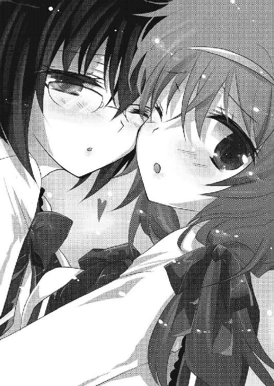
だから人質にされたことも、全て──
（............？）
──そう、全て、忘れているはず。
（............なら、今眼前でひっついている朝顔と広美を、どう説明する？）
自問して、光一は構えていた右手をゆっくりと下ろした。
説明できない。理解できない。この状況は、本当の意味で『あり得ない』のだ。
「変な佐藤君だね......今日はどうしちゃったのかな？」
「わからない......コーちゃん。本当に、大丈夫？」
朝顔と広美が心配そうにこちらを見上げてくる。
光一は朝顔の顔を見て、『あり得ない』という現実を確定的なものにした。
彼女は、アンチテーゼのせいで笑顔しか表情を作れない。
けれど広美にくっつく彼女の表情は、困惑のそれを表していたのだ。
（これは明らかにおかしい。異様、というか異常すぎる。幼馴染三人と、クラスメイト全員が変なのはまだいい......しかし石崎がいるとなると冗談ではすまなくなる）
もはや幼馴染のドッキリ作戦とかそういうレベルではなくなっていた。
ネメシス犯罪者である石崎朝顔は、今も広美と談笑している。しかも表情は豊かで、笑ったり、むくれたり、驚いたりしてコミュニケーションを取っていた。
彼女はアンチテーゼの呪縛から解放されている。
しかし現状、ネメシス関連の研究は行われているが、アンチテーゼを回避する方法はわかっていないはず。つまり絶対にあり得ない。
光一の嗅覚は鈍くはない。彼の持ち前の非現実察知能力は、この異変の連発を非現実側の出来事だと見極めていた。
つまりネメシスの介入が予想される。能力者の存在が、この現象には関わっていると見るほうが自然。
しかしいったいどんな性能のネメシスなのだろうか。
（まさか──ここは平行世界なのではないだろうか!? そ、それだったら合点がいく。俺はなんらかのネメシスによって平行世界に飛ばされた！ 間違いない！）
一人、顎に手を当てて脳、もとい妄想をフル回転させる。
（な、ならばどうすればいい？ 俺は平行世界から戻る方法なんて全然わからんぞ。佐藤光一の消失なのか？ まさか俺は無口な有機生命体ヒューマノイドインターフェースとか探すべきなのか!? いるのか!? 俺の理想のヒロインがこの世界に!?）
非常事態だというのにあらぬ方向にテンションを上げて、わくわく顔で辺りを見回す。
が、すぐにかぶりを振って心を正常にさせる。本題から思考がずれていくことはよくあることだった。
（ネメシス自体が非常識だが、それにしたって平行世界などと......んな規格外なネメシスがあってたまるかというのだ。しかし......なんにしても、俺一人ではどうにもならんな。そういや、薫と兎乃もこの問題に直面しているはずだよな。これはあいつらに相談する必要がある）
ネメシス関連のキャリアならば、あの二人のほうが豊富だ。
そう考えた光一は、教室内を見回してみた。
（薫はまだ登校していないようだな。桐咲はまた体育倉庫だろうか？）
光一は体育倉庫へ行ってみようと、やたらと幸せそうなオーラを纏うクラスメイト達をスルーして教室を出ようとした。
ところが、丁度教室のドアに手をかけた時、廊下側の席に座っていた女子生徒が立ち上がった。
「桐咲さーん、この前貸してもらったＤＶＤ持ってきたよー」
兎乃の名前を呼ぶ女生徒。
光一は驚いた。兎乃が教室内にいたことはもちろんだが、彼女にこんな親しく話しかける生徒がいたなんて思いもしなかったからだ。
光一はドアから手を離して、もう一度教室内を見回した。
兎乃を呼んだ女生徒が、窓際の一番後ろの席へ小走りに近づいていくのが見えた。
光一は彼女の行き先を目で追って、兎乃の居場所を確認。
「まったくいるならいると一言声をかけ............って、あれ？」
しかし誰もいない。一番後ろの席には、ただ椅子と机があるだけで、誰も......。
「誰も......いない？」
──否。
いる。
確かにいる。
確かにそこには──
そこには、幽霊のように透けてしまっている桐咲兎乃の姿があった。
「わー、桐咲さん、今日も薄いね」
ＤＶＤを持ってきた女生徒の言う通りだった。
薄い。酷く存在感が薄い。というか物理的に透けて見える。それから髪が黒い。ピンクじゃない。インパクトが強すぎていた巨乳も、今はとても控えめだ。
はっきり言えば地味である。超地味である。透けて見えるほどに存在感が無い。顔は元の兎乃のままだが、全体を覆うオーラがまるっきり別物だ。視界の隅に映ろうものならいやがおうでも目で追ってしまうほどの存在感はどこへ行ってしまったのだろうか。
太陽光に透けている兎乃の表情は、これ以上ないほどの安堵と癒しに包まれていた。まるで薄くなった自分が理想の自分だとでもいうように......。
兎乃が、微笑みながらゆっくりと少女に顔を向ける。
「おはよー、まだかりてていいのにー。どうだった？ 映画ー」
「すっごく面白かった！ また今度別の映画も貸してほしいんだけど......」
「うふふ、そう言うと思って、オススメのやつを持ってきたんだー」
「ほんと？ やった、気がきくね桐咲さーん。それにしても今日は本当に薄いねー」
「うん、今日はすごく調子がいいから」
............。
なんだか、ものすごく普通な会話の中にさりげなく非現実的なワードがちらほらと聞こえたのはたぶん光一の気のせいではない。
兎乃がつかえなく会話をしているのにも驚きだが、どう見ても物理的に薄い。そしてそれをさも当然のようにクラスメイトが受け入れている。
光一は女生徒との会話が終わるのを見計らって即座に兎乃に接近した。
「おい桐咲......！ お前その格好......！」
「あ、佐藤さん。おはようございますー」
すごくイイ笑顔で出迎えられて出鼻をくじかれそうになったが、すぐに気を取り直して兎乃をまじまじと見やる。
「髪......染めたのか？」
「へ？ 兎乃、髪を染めたことなんてありませんよ？」
「噓つけっ、あのけばけばしいピンク色はどこいったんだ？ 胸にもなんでサラシなんて巻いてんだよっ」
「は、はぃ？」
何言ってんだこいつ、という目で見られてしまった。
一抹の不安を感じながらも、光一は兎乃の肩をがしりと摑んで、必死の形相で問いかけた。
「なんなんだよその有様はッ。他にもツッコミたい箇所は山ほどあるがまず薄いっ、薄くなっちゃってるぞっ」
「どうしたんですかそんな、慌てて」
「慌てもするぞッ！ それ発動しちゃってんだろ《裏腹海月》！」
ネメシスの存在は極秘。シェードに属する者が常に心がけなければならない規則である。それをこんな公衆の面前で使用するなど言語道断だ。
「トラン......え？ 何ですか？ 映画のタイトルですか？」
「違う！ ネメシスだよネメシス......っ。自分の能力も忘れたのか......！」
問い詰めてくる光一を、不思議そうに見つめる兎乃。会話のかみ合わなさに苛立ちが募る光一だったが、よくよく考えれば不可思議なことに気づいた。
兎乃のネメシス、《裏腹海月》は、自分以外のあらゆる物体を透明化するという能力であって、自分自身を見えなくすることはできないはず。
髪の色も、胸の大きさも、恐らくは染色などを施しても無意味だろう。その程度で誤魔化せるほど、アンチテーゼは生易しくはない。
ならば、今ここにいる兎乃はいったい......。
「あの、佐藤さん」
摑みかかってくる光一に、兎乃が少し怯えた様子で顔を覗き込む。
「ネメシスって、なんですか？」
「......お前、冗談も大概にしろよ。お前は俺と同じシェードの一員で、『木漏れ日現象』の脅威から世界を救うために日々戦っているんだろうがっ」
「............あ」
そこまでわざわざ説明してやって、やっと兎乃がハッとしたような顔をして、真剣な目を向けてきた。
「もしかして──組織ですか」
「そう！ そうだ！ シェードは俺達が所属する組織ッ。やっと思い出してくれたか......たぶんお前は精神操作系のネメシスの影響で今までのことを忘れて──」
「............」
「.........桐咲？ 何故すごくイイ笑顔でこっちを見ているのだ」
「いやぁ、そのー」
相変わらず薄いまま、兎乃は微笑ましそうに光一を眺めている。
「元気だなぁ、って、思って」
ずるりと光一がずっこけそうになる。
兎乃は「ごめんなさい」と何故か光一に謝りつつ、
「ノリきれなくて、ごめんなさい」
「ノ......ノリ？」
「別にバカにしてるわけじゃないんですよ。本当に好きなんだなぁって。こういう、なんていうんですか？ 漫画とかアニメっぽい設定」
「き、桐咲、待て、これは別に俺がなりきっているわけではなく」
「私は、すごくいいと思うんです。夢があるのって素晴らしいです」
「いや......ち、ちが」
「これからもノンストップで突っ走ってくださいね、応援してますっ」
「............」
胸の前で両手の拳を握って、謎の激励をしてくる兎乃を前にして、光一は棒立ちするしかなかった。
もはや、取り付く島がない。というより会話がかみ合わない。まるで兎乃はネメシスや『木漏れ日現象』についての記憶をまるっきり失っているように見えた。噓を吐いているようには見えない。彼女はただ単に、光一の会話に合わせようとしただけだ。
光一はといえば狼少年に近い心情である。いつも妄想を外に出して、自分は特別な存在（笑）だと言い張り続けて早一〇年。誰にもそんな風には思ってもらえず、それでも自分を信じてここまでやってきた。そしてやっと異能を手に入れて特別な存在になってみれば、本当のことを言っているのに日頃の行いのせいで結局信じてもらえない。
おまけに相手は非現実な要素に携わる同僚だ。
こんなに悲しいことはない。
（い、いよいよ平行世界説が濃厚になってきやがった......！）
兎乃の肩から手を離し、入念にセットした頭を気にせずガシガシと搔き毟る。
とにかく、まずはシェードに連絡だ。石崎の時のようにオーロラが関与している可能性は大きい。この不可思議な現象が大規模なものならば、既にシェードも動いているはずだ。もし動いていなければ、連絡して知らせるまでのこと。
光一は携帯を取り出すために、制服の胸ポケットに手を伸ばそうとした。
が、その時。
「──ちょっと佐藤、あんた何兎乃にセクハラしてんのよ」
背後から、凜々しい声がした。この挑発的な声音は、間違いなくあのちびっ子だ。
こちらから声をかける必要がはぶけた。光一は視線を相手に合わせるために中腰で後ろへ振り返り、いつも通り視線を下へ向けて声の主の顔を見ようとした。
が、振り返ったと同時に、
ぽよんっ。
「むぶっ」
何か二つの非常に柔らかい膨らみに顔を突っ込んでしまった。
なんだこれ？ と疑問に思いながら顔を離して、その二つの膨らみを両手に摑む。
「ふむ。これは紛れもなく──おっぱいだな」
しかし何故におっぱいが目の前に？
混乱している光一が、鼻血を噴き出す前に素朴な疑問として目の前のおっぱいを処理しようとした、その瞬間。
「どこ──触ってんじゃボケェッッ！」
ドゴスッ！
「へぷっ！」
上方から頭部にかけて、雷のような一撃がクリティカルヒットした。
腫れ上がった頭を手で押さえつつ、涙目になりながら考える。おかしい、いつもなら下方から顎に向けてアッパーが飛んでくるはず。
いつもと違う対応に面を上げると、そこには、
「前々から度し難い変態だとは思っていたけど......出会い頭に、む、むね、胸をも、もも揉んでくるとはいい度胸ね......っ、いいわ......ここで今すぐに亡き者にしてあげる......！」
なんと、顔を真っ赤にした美少女が立っていた。
どうやら薫ではなかったらしい。
少しキツめの凜々しい顔立ちに、長くしなやかな黒髪。裾の短いスカートと、長くて美しい脚。スラッとしているのに出るところはきちんと出ている身体のライン。
歳は一六、七歳だろうが、妙に大人びた雰囲気があるため、光一よりも若干年上に見える。第一印象は頼りになるお姉さんといった感じだ。
「ダレ？」
率直な疑問を口にする。知り合いにこんな黒髪の美人はいない。
光一が怪訝そうにしていると、美少女はこめかみに血管を浮き上がらせて拳を握り締めた。
「......胸を揉んだだけに留まらず......ずいぶん変わった朝の挨拶ねぇ。それとも何かしら、あんたは二年近く付き合いのあるクラスメイトの顔を一晩で忘れるほどに、頭が鳥類なわけ？」
何故か怒り心頭状態の美少女。
知り合いのはずはないのだが......。
光一は、まじまじと顔を眺めてみて、どこかで見覚えがあるかどうか思い出そうとした。
（............ん？ 待てよ。こいつ、確かどこかで......）
頭をフル回転させ、記憶を遡ること一ヶ月。
（確かあれは夜だった。酷く閑散とした......そう、工事現場とかそういう場所で......）
もう少しで思い出せそうな気がして、うーんと頭を捻っていると、いきなり頭を両手で摑まれ、ぐぐいと引き寄せられた。
息が届きそうなほど近くに、美少女の顔。不意打ちすぎて、光一の顔が一気に赤くなる。
「あんたねぇぇぇ、本当にこのあたしの顔を忘れたわけぇぇっ？ 殴ったショックでアッパッパーになったってんなら許してやらないこともないけど、そうじゃないなら......っ！」
対する美少女は自分を忘れられたせいか、怒りでますます顔が赤くなった。頰は少し空気で膨れて、悔しそうに眉を震わせている。ぷんすかという擬音が似合いそうな顔だ。
そう。まるで、毎日のように見ていたあいつの怒った時に似て......。
光一は、その怒りで膨れた顔を見て、ハッとなった。
「お、お、お前......まさか......薫か!?」
「当たり前でしょヴァカ！ 本当に忘れてたの!? マジで頭大丈夫!?」
ムスッとしながら腕を組み、そっぽを向く自称薫さん。
確かに、この独特の仕草や、表情の特徴は光一の知る間宮薫と合致している。
しかし、光一が感じたのはただ一つだ。
「デ、デ──」
「？......デ？」
「──デ、デデデデカい！ いろんなところがデカい！ なんで!? うそん!? お、お前がロリ宮──」
そう思うのは当然なわけで。
ゴヅン！
殴られるのも当然なわけで。
「わ、わ、悪かったわねデカくてっ！ 別にあんたに揉ませるためにあるんじゃないんだからね!?」
「いっつ～～～......胸じゃねぇっ、背だよ背！ 俺は見たままの感想を言ったまでだっ。どう見てもデカいだろう、今のお前は！」
「失礼な......！ あたしそこまで背高くないわよ！」
「そうじゃない、昨日と比べてでかくなってるって言ってんだ！ 昨日まではあんな小学生みたいなナリしていたというのにいったいぜんたいこりゃどういう現象だッ!?」
「誰が小学生よ！」
怒鳴りつけたあと、光一の言いに薫が顔をしかめる。意味がわからない、という表情だ。
さらに薫は溜息をつき、今度は心配そうな視線を送ってきた。
「さっきから失礼っていうかわけわかんないっていうか......今日はなんか変よ、あんた」
「......変なのは確実に俺じゃねぇ、お前らの方だっ」
もはや今朝からおなじみになった言葉を吐く。
案の定、薫は訝しげに顔を顰めた。
「はぁ？」
「桐咲はなんかすげー地味になってるし、薫はデカくなってるし、これも敵のネメシスの影響なのか............って、そうだ。お前がいるということは......」
「？ 今度は何よ」
光一はふと、教室内をぐるりと見回した。
慌てて時計を見れば、もう始業まで一〇分を切っている。
「おい、薫」
「何よ？」
「アルルはどうした？ どこにも姿が見えないが」
教室にアルルの姿が見当たらないことに気づき、毎朝の護衛役である薫に問う。最近はだいぶ落ち着いてきたが、朝の護衛を始めた当初は神経質なまでに通学路を警戒していたのだ。彼女がアルルを置いて登校してくるはずがない。
トイレにでも行っているのだろうか......。
一抹の不安を感じながら、光一がそう思っていると、
「アルル？ なぁにそれ、人の名前？」
薫が、信じられないようなことを口にした。
光一の表情が、一瞬だけ凍りついた。
だが、すぐに半笑いを浮かべて、
「はは、お前なぁ、冗談も大概にしろよ。新しいボケか？ 人の名前に決まってんだろうが。アルルだよ、アルル」
「冗談って......何がよ？ あたしはアルルなんて名前の人、知らないわ。外国人よね？ 留学生なんて、この学校にはいないはずだけど」
「......は？」
薫が、意味がわからない、というような視線を送ってくる。
噓や冗談で言っているようには、とても見えなかった。
光一の表情が、見る見るうちに絶句に変わっていく。
「ねぇ、兎乃。アルルなんて子、うちの学校にいた？ ていうか知ってる？」
薫の問いに、兎乃もふるふると首を横に振った。
──妙な焦燥感が、足のつま先から這い上がってくる。
そんな、バカな。
アルルを知らない？ この二人が？
そんなことがあってたまるか。
そう否定しても、目の前の仲間二人は怪訝そうな目でこちらを見るばかりだった。
「なんだよ......それ」
「こっちの台詞よ。いつも変な言動だけど、今日はとりわけおかしいわよあんた」
「アルルだよアルル！ 金髪碧眼の、いつも出会い頭に抱きついてくるあのアルルだよ！ お前だってあいつを守るためにずっと必死だったんだぞ！ 忘れるわけないだろう！」
怒りにも似た感情が湧き上がって、思わず薫の肩を強く摑んでしまった。
「いたっ......」
「あ......わ、悪い」
短い悲鳴を聞いて、光一はすぐに手を離した。
薫は少し警戒した風に光一を睨みながら、自分の肩に手を当てる。
「......っ、とにかく、あたし達はそんな子知らない。いつもの妄想と違ってえらく真剣だから付き合ってあげるけど、本当に知らないのよ」
至極真剣に、薫は言う。
兎乃もやはり怯えながら光一に頷いていた。
「そんな......バカな......」
自分の世界が揺らぐような感覚が、光一を襲う。
信じたくなかった。いや、信じるわけにはいかなかった。
今立っている世界は、光一の知っている世界とは何もかもが違う。
最初は些細な違和感だった。けれど今は、確かな現実として目の前にある。
夢か現実か、はたまた平行世界なのか。
もはやこれは、冗談とかノリで対処できるレベルの異常ではなくなっていた。
入植試験 兎乃
兎乃
【回答者４ 桐咲兎乃】
例１
笑い合う子供達。その中に私がいる。私も同じように笑っていた。
しかし子供達は、次第に数を減らし、私の元から離れていく。
一人になって周りを見回すと、子供達が無言で私を見ていた。
冷たい視線が突き刺さる。ひそひそと囁くような声が自分を包む。
耳を塞いで、目を瞑る。
けれどいくら目を背け、耳を塞いで叫ぼうとも、それらはいつまでも私の心を苛んだ。
私は逃げるように薄闇に閉じこもり、膝を抱えて蹲った。
例２
朝は友達と待ち合わせをして、一緒に登校。
お昼はみんなで笑ったり、好きな子について話し合ったり、噂なんかしたりしてお弁当を突き合う。
放課後は買い物に行ったり、ゲームセンターに行ったり、ファストフードでおしゃべりをする。
私は普通の女の子。特別可愛くもなくて、特別な才能があるわけでもない。ただ普通の日々があって、普通の人生を送る。
普通だ、地味だと人は笑うかもしれない。
でも、それが私にとって、とても大切なことだった。
※桐咲兎乃さん。あなたはこの辛い現実と、幸せな夢、どちらを選びますか？
兎乃「あぅぁうあー！ えーとえーと！ う、兎乃は、兎乃はぁぁえぇぇと！ つつつ、辛いことばっかりだったけど、そ、それでもみんなでがんばってやってきたんだし、つつ辛いことがあったからみんなと仲間になれたわけで―（中略）―今まままでの経験が無かったらあぅあぅあ！」
［辛い現実］←
［幸せな夢］
Battle ２ さよなら非現実、こんにちは現実
「ふぅん......つまり、それがあんたにとっての日常だったわけね？」
教室で愕然とさせられた後、一限目を終えて光一は薫を校舎裏へ呼び出した。
薫はどうやら、アルルのことだけではなく、シェードや『木漏れ日現象』についても、何も知らないらしい。
それを聞かされても、光一はなおも諦めなかった。なんとか薫に全てを思い出してもらおうと、必死になって今までのことを説明したのだ。
「『木漏れ日現象』とかいう光のせいで雨鶴来市の住民が昏睡状態になって、目が覚めた人間にだけ超能力が宿って、そんでもって世界を救うにはそのアルルっていう女の子を殺さなければならない......と、そういうわけね？」
「ああそうだ。俺達シェードは世界を巻き戻させないために、アルルを守ってきた。お前もその組織の一員だった」
「......で、あんたの記憶だと、あたしは一〇歳の段階で成長が止まっていて、見た目は完全に小学生だった、と？」
「ああ。お前は《矛盾騎士》のアンチテーゼのせいで見た目はすごく幼かった」
「なるほどなるほど......なるほどねぇ」
薫が顎に手を当てて、光一の説明に深く頷く。
光一は嬉々として、目を輝かせた。
「わ、わかってくれたか......！」
「──わかるわけないでしょーがこの末期中二病患者がッ!!」
まるでノリツッコミのような勢いで、薫は光一の頭にチョップを炸裂させた。
激しく痛かった。身体にも、心にも。
「何故だ!? 何故わかってもらえんのだ!?」
「わかっちゃう方がおかしいでしょ!? いつもいつもあんたの戯言聞かされてきたけどねぇ、一応は現実も見えている男だと思ってたのよ。今まではまだ微笑ましく思えた。でも今回ばっかりは無理。あんたはなりきってるんじゃなくて、自分の妄想を信じきってる。末期よ！ 手遅れよ！ 何ネメシスってバカじゃないの!? 神の予言？ 『木漏れ日現象』？ 現実は出来の悪いラノベじゃないのよ!? いいからさっさと病院行ってきなさい！」
薫が踵を返して校舎裏を後にしようとするのを、光一は必死に引きとめようとした。
去ろうとする薫の腕を摑んで、足を踏ん張る。
「待て、待ってくれ！ これは俺の妄想なんかじゃない、全部本当のことなんだ！ 頼む信じてくれ！ というか思い出してくれ！」
「離しなさいッ──ふざけんじゃないわよっ。だいたいねぇ、あたしの両親は昏睡状態になんかなってないし、借金なんて背負ってない。そりゃ金持ちじゃないけど、家だって一軒屋だしごく普通の一般家庭」
「そ......それはたぶん、敵のネメシスかなんかが見せる幻想のはずだッ」
「兎乃がピンク髪の巨乳で対人恐怖症？ エロゲーじゃないんだからそんなファンタジーな人間いるわけないでしょ！ あの子はクラスで一番地味だけど、人当たりがよくて普通に友達がいて普通の人付き合いをする普通の子よ！」
「でもあいつ薄かったぞ物理的に！」
「......はい？ 薄いからなんなのよ。別にそれだって普通のことじゃない」
「普通じゃないだろう!? あれはきっとあいつの《裏腹海月》が──」
「もうっ！ 付き合ってらんない！」
摑んでいた手を思い切り叩かれて、光一は薫の腕を離した。
悔しさから、光一は拳を握り締める。日頃から自分の妄想を外に出し、異能だの組織だのと戯言を言い続けてバカにされてきたが、いざ本当に非現実を手に入れてもこの有様だった。それも当事者であったはずの薫に信じてもらえないなんて、まったくもってどうなっているのか。
（敵のネメシスの影響なのだろうか......ならばどうすれば信じてもらえる？ どうすれば薫を元通りにできる？ アルルのことも心配だ......あいつは今、どこにいるのだろう？）
薫と兎乃と光一がここにいるということは、アルルを護衛している人間はいないということになる。もしシェード本部ではなく外にいるとしたら、危険な状況にあるかもしれない。この一連の現象が敵のネメシスだというのならなおさらだ。《一握りの希望》の存在やネメシスの存在を忘れさせて、アルルを孤立させるのが目的なのやもしれぬのだから。さきほどシェード本部に携帯電話で連絡を取ろうと試みたのだが、妙に電波が悪くて繫がらなかった。こんな時に限って、運が無い。
......どうすればいいんだ。
（──そうだ！ 一番簡単な方法があるではないか！ なんで今まで気づかなかったんだ、薫に直接見せてやればいいのだ。俺の、ネメシスを！）
ここにきてやっと光一が閃いた。
「待て薫──俺を信じられないのなら、今ここで証拠を見せてやろうではないか」
既に遠くなりかけていた薫の背中が、ぴたりと動きを止める。
胡散臭そうに目を線にしながら、薫は光一に振り返った。
光一は、直立して右手を水平に広げ、ポーズを決めている。
こんな時にまで、格好つける......と思われるかもしれないが、今回の光一は真剣だった。いや、いつも真剣にカッコつけてはいるが、今回は切実だった。
「今から俺のネメシスをお前に見せてやる。そうすれば俺を信じる......いや、全てを思い出すはずだ」
「ふぅん......そこまで言うんだったら見せてみなさいよ。もししょぼくれた手品だったら承知しないわよ」
半信半疑ではない。完全に信じていないのが態度からひしひしと伝わってくる。
光一は一度目を閉じて精神を研ぎ澄まし、イメージする。
もう何度も繰り返してきた行動だ、部分的に成長させる必要もない。付け焼刃のままでいい、ただ薫にネメシスを見せてやればいいのだ。
「《付け焼刃》発動！ 応えろ──俺の《矛盾騎士》！」
横に広げた腕を前方に移し、薫に向けて指を勢いよく弾く。
乾いた破裂音の後、毎度おなじみのお子様騎士が......。
............。
............現れない。
「......なん......だと!?」
自分の指先を確認して、もう一度指を弾く。
しかし結果は同じだった。ただパチンパチンという間抜けな音が響くだけで、ネメシスの発動の兆しすら感じられなかった。
「どうして使えないんだ......!? 付け焼刃である限りは、何度でも使用できたはずなのに！」
「............」
「くそっ！ 《誘雷針》！ 《超越者》！ っ......何故だ!?」
「............」
静まり返った校舎裏に、何度も乾いた音が響く。
頭の中でそんなバカなと否定し続けても、一向にネメシスが発動する気配はなかった。
「き、きっとこれも、敵のネメシスが──」
「もう、いいわよ。あんたが本気で言ってんのはわかったからさ」
「ちが......違う......違うんだ」
「ちゃんと見てよ。あたしはあんたが言うように小さい？ 兎乃はケバい？ 幼馴染の浅野さんはドＳじゃないし、東野と渡部だって元からああだった。あんたが言ってることと、今ここにある現実は食い違ってる......そうでしょう？」
「......それは......敵の、ネメシスが......」
「........................はぁ」
同情と哀れみのこもった溜息。
薫は首を横に振って、壁際に置いてある牛乳瓶の籠に腰を下ろした。
「ねぇ、ここ座って」
長い脚を組み、自分の真横を指さしながら、光一を呼ぶ。
気魄も何も無くなった光一は、言われるがままに隣の籠に座った。薫は落ち込みまくっている光一の顔を横目で覗き込みながら、少しだけ申し訳なさそうに目尻を下げた。
「あたしは何もあんたの全部を否定してるつもりはないの。まあその......さっきは、全否定するような言い方して、悪かったわ」
「お前が謝ることでは......ないだろう。お前は、悪くない」
「そうかもね。じゃああんたがそう思ってくれるなら......一つだけ言わせて。あんたはさっき真剣だった。そこが問題なの。いつもあんたはそんな調子だけどさ、今日は表情だとか気魄だとか、何もかも異常だった。真剣に超能力がどうだとか、世界の滅びがどうだとか、そんなことを宣ってたのよ。私から見たら宗教の宣伝とかに見えるくらいに、本気さが伝わってきた」
「............」
「正直今のあんた、ちょっと怖いよ」
薫の言葉に、確かにそうだろう、と光一は思った。
普段はなりきりという形で自分を演じて妄想を外に出していたが、今は違う。薫に語ったことは、少なくとも光一にとっては真実なのだ。けれどこの世界が現実だと考えている今の薫からすれば、光一は虚言を吐き散らすだけのただの異常者に見えたことだろう。
それは光一も、いまさら否定するつもりはない。
この薫達にとっての現実は、この世界だ。
「ねぇ......あんた、夢と現実の区別、ついてる？」
問いに光一は、びくっと肩を震わせた。
何故自分が震えたのかは、光一も薄々わかっている。ここ一連の現実との食い違いに、一番不安を抱いていた仮説。
夢。光一の夢。
「あんたもしかして、区別できてないんじゃないの？ そういう病気があるって、テレビでやってたの見たことあるの。あんたにとって、私達のいる世界は間違っているみたいだけど、私達から見たらあんたの知っている世界が間違ってる。きっとどっちが間違ってるとかじゃないと思うのよ。あんたは自分の真実を言っていただろうし、あたしもそうだった。でも......普通に考えてみてよ」
「......普通......」
「そう。あんたの言う超能力や組織が存在した世界とさ、あたし達の何も無い平穏な世界。あんたからしたら──どっちが現実的に見える？」
薫の問いに、光一は答えられない。答えたくない。
そんなこと考えなくても、答えが出ているから。
「......言い方を変えるわ。あんたが言うような、世界の滅びが決定していて、私や兎乃が不幸な世界と、いつも同じ毎日だけど平穏でありきたりな世界............あんたは、どっちがいいの？」
「──っ」
「私達が不幸な世界の方が、いいの？」
光一は頭を抱えて下を向いた。
周りがおかしいのではない。
お前がおかしいのだ。
自分の心が、そう囁き始めていた。
光一は半ば意地でそれらを振り払い、立ち上がった。
「き、きっとここは平行世界なのだッ。だから俺もお前も間違っていない。しかし認めるわけにはいかんなっ。こ、こ、この俺が......夢と現実の区別がつかんなど......あ、ああああるわけないだろう！」
精一杯虚勢を張って、光一は薫の問いに答えずにそう言った。
薫は悲しそうな顔をしていた。哀れみの視線、というより、失望だろうか。
薫は「もううんざり」とでもいうように、今度こそ校舎裏を離れて行った。
残された光一は、啞然としたままその場で立ち尽くした。
二限目開始のチャイムが鳴り響いても、足が動くことはなかった。
授業が始まったせいか喧騒が遠のき、耳鳴りが響くほどの静けさがやってくる。
「.........本当なんだ......俺は噓は言ってない......」
自分で言葉にして口に出しても、何故かいつものように自信が持てなかった。一人になって、ますます不安は募っていく。
夢。今までのが全部夢。そっちの方が信憑性がある。
そんな声が、頭の中で聞こえているような気がして、光一の全身にぞわぞわと鳥肌が走った。
「違う......何を考えているのだ、俺は」
額を手のひらで強く叩いて、しっかりしろと自分を戒める。
「そんなことあるはずないだろう......はは」
無理矢理笑おうとしたが、口元が少し引きつっただけで、うまく笑えなかった。
光一は、校舎へ戻るためにとぼとぼと渡り廊下を歩く。
振り払ったはずなのに、頭の中からさきほどの不安がいつまでも抜けなかった。
もしかしたらありえるのではないか......そんなことをどうしても考えてしまう。
『ねぇ......あんた、夢と現実の区別、ついてる？』
薫の言葉がリフレインする。
（......夢......妄想と現実の境目）
自分の手のひらを見つめて、感触を確かめる。握り締めた感触は確かなもので、より強く握れば痛みが走った。
手に痛みが走るように、光一がネメシスを使用できなかったのも、紛れもない現実。
──果たして、どちらが夢で、どちらが現実なのか。
ほんの一瞬だったが、光一はその疑問を自分自身に問うてしまった。
「くそっ、よくない傾向だ。俺ともあろう者が、夢と現実の判断に迷うとは......」
俺は騙されない。俺は現実と夢の違いくらい理解できる。
そう自分に言い聞かせて、光一は進む。この時ばかりは、いつものように自分に酔って気分を紛らわすこともできなかった。
「らしくない......らしくないぞ、佐藤光一......！」
行く先の渡り廊下が、どういうわけかいつもより長く感じられた。
「コーちゃん......機嫌悪い」
二限目が終了すると同時に、前の席の広美が身体を反転させて顔を覗き込んできた。
光一は椅子の上で腕を組んだまま、不機嫌に広美を睨む。別に広美に敵意を向けているわけではなく、現在の状況が把握できるまでは警戒する必要があるのだ。
油断すれば、そのうちこの状況を受け入れかねない。自分が間違っているはずがないのに、自分の現実を否定しかねない。
そう考えた末に、光一は誰とも会話しないことにした。
「......うぅ」
光一がむすっとした顔で鎮座していると、広美がまたもや涙目になり、口をへの字に曲げた。
この程度で揺れるほど光一の決意はもろくない。たとえ幼馴染に泣かれようと、光一はこの状況を否定する。
（こんなものは全て噓だ。虚像だ。残像だ。俺は騙されない）
少なくとも残像ではないのは確かだった。
光一の耐える心構えは万端だった。
......が、
「どうして......私、何かした？」
「......っ」
「したなら謝るから......許してよ。どうして今朝から何も言ってくれないの？ 私......私」
「......ぐ」
「ねぇ......何か言ってよぅ......うぅ、ひっく......うぅぅぅ」
「ぐぉぉ......！」
早くも、耐えられそうになかった。
広美は顔をくしゃくしゃにして必死に涙を手で拭っている。
またもやマジ泣きだ。鼻水も出ている。いつものクールな広美からは想像もできない、無防備さというか、純粋さがひしひしと伝わってくる。
やはり予想通り、光一が雨鶴来市を離れる前の性格に戻っているようだった。
幼い頃の泣き虫ヒロミゴンが、今目の前にいた。
「......だーあーあーあー......！ もうっ......ったくよぉ」
過去を思い出してしまい、結局耐えられずにポケットから手ぬぐいを取り出す。
そして、泣きじゃくる広美の顔をぐしゃぐしゃと手ぬぐいで適当に拭ってやる。
「ぐず......うぅ」
「ほれ、もう泣き止め。別にお前が悪いわけじゃないんだ......何も泣くことねぇだろ？」
「うぐ、だっで......だっでぇ」
情けない顔で涙を流す広美を見ていると、不覚にも苦笑が漏れた。
昔の広美は、こんな風に泣き虫で、光一の後ろをおっかなびっくりついてくる気弱な少女だった。一樹もチダイも当時は光一と似たようなアホだったので、女友達が近所にいなかった広美は必然的にアホ三人組の遊びに付き合わざるを得なかったのである。
ヒーローごっこではいつも雑魚怪人役に抜擢され、かくれんぼではいつも鬼にさせられていた。しかも一〇〇秒数えている間に参加者全員が広美を放置して家に帰るといった嫌がらせを繰り返されたりと、実に不憫な少女だったのである。もちろんその嫌がらせの主導者はアホ代表の光一だったのは言うまでもない。
けれど、光一がいくらいじめてきたとしても、広美は彼の後を追い続けた。当時の光一はそんな広美を鬱陶しく思っていたが、結局いつも泣いている彼女を放っておけなかったのもまた事実。
かくれんぼで光一達を夜遅くまで捜し続けて泣いている広美を迎えに行ったり、ヒロミゴンと呼びすぎて泣かせてしまった時は、今光一がしているように、嫌々ながらも涙を拭ってやっていたのである。
広美の口癖が「やめれー」だったあの頃を思い出して、なんともいえない懐かしさがこみ上げてくる。
「お前はほんと昔から変わらないな～。なぁんでそんなに泣き虫なんだよ、ヒロミゴン」
「ぐす......ずびィィィィィィっ！」
「──ぐあっ、貴様！ 乙女の涙を拭くため専用の俺の手ぬぐいで盛大に鼻かんでんじゃねぇ！ 何気に二万円もすんだぞこれ！」
「うー！ ヒロミゴンって言うの、やめれー」
鼻水でべちゃべちゃになった手ぬぐいに嘆く光一の頭を、広美がぽかぽかと殴る。
光一は必死な広美を見ているのが楽しくて、自然と笑みがこぼれた。
いつものやりとり、いつもの日常。
光一が広美をからかって、広美が泣きながら光一に怒る。小さい頃から何も変わらない、二人の関係。
ずっと一緒に育ってきた、幼馴染。
──そう、広美は昔から──
「────ッッ！」
背筋に再び寒気が走ったことで、光一は我に返った。
勢いよく立ち上がった拍子に、足にぶつかった椅子が大きな音を立てて倒れる。
「......い......今、俺は......!?」
「......？ コーちゃん？」
突然戦慄した光一を、広美が心配そうに呼ぶ。
光一は呼び声を無視して、慌てたように教室内を見回した。
そして、今自分が見ている日常が当たり前の風景ではないことを確認する。
（......どうしちまったんだよ俺は......！）
額を大粒の汗が伝って、教室の床に落ちる。
「すごい汗だよ......？ 大丈夫、コーちゃん」
前に視線を移すと、広美がじっとこちらを見つめていた。
ここに来て、純粋で曇り一つ無い双眸が、途端に恐ろしく見えた。
（............こいつは、広美じゃないッ！ 俺の知っている広美は、こんなんじゃない！）
まるで自分に言い聞かせるように、光一は拳を握りしめる。
（今俺は、受け入れてしまうところだった。この状況を......いつもの日常だって、一瞬でもそう思ってしまった）
歯を食いしばってかぶりを振る。
まだ自分は正気でいられている。俺はまだ、自分自身の現実を信じることができている。こんな虚構に騙されはしない。
目を閉じて、精神を統一させ、深く息を吐いた後、光一は広美に背を向けた。
行かなければならない。確かめなければならない。
自分の見てきた現実が、確かなものであることを、証明しなければならない。
誰かにではなく、自分自身に。
「三限目、始まっちゃうよ。どこか......行くの？」
背後で広美が弱気に尋ねてくる。
行き先は既に決まっている。あそこへ行けば、自分が正しいことが証明されるのだ。
光一は、振り返らずに一言でこう答えた。
「──シェード本部だ」
そこへ行けば全てが解決する。
そう信じて、光一は足早に学校を後にした。
雨鶴来市中央区の風景は、何一つ変わっていなかった。
ジャングルの大木のように建ち並ぶビル群も、ファストフード店や本屋の位置も、光一の知っている雨鶴来市と同じだった。
違うのは、すれ違う人々だけだ。
いつもは疲れたように下を向くサラリーマンや、目的地に急いで向かう無機質な表情のＯＬ、だるそうにだべっている学生がほとんどだったはず。
それなのに、今光一の横を通り過ぎていく人々は、皆どこか幸せそうで、浮き足立っているように見えた。もしかしたら光一の勘違いかもしれなかったが、疑心暗鬼状態の彼には、全てが異常に見えてしまう。
「俺は正しい。俺は間違ってない。おかしいのは俺以外の人間だ......！」
耳を塞ぎ、目を閉じてひたすら街を走る。少しでもこの幸せそうな人間達に触れてしまえば、この世界に呑み込まれてしまいそうで恐ろしかった。
今光一を支配しているのは、途方もない孤独だ。自分と周りの人間の間に生じているズレが、彼を孤独にさせているのだ。
薫は言った。
『木漏れ日現象』などというファンタジーな事件は起きていない。ネメシスなんていう異能や、神の声なんてものを聞いた人間もどこにもいない。
そして、アルルという名の少女は、この世界には存在しない。
単純に、常識的に、当たり前に判断するならば、薫の言っている方が真実味がある。
世界は正常。非現実なんてどこにもない。ただそこには平穏があり、幸せがあり、何も変わらない日常がある。
リアルとはそういうものだ。
「やめろ......」
光一は、頭の中で囁くような声を聞いた気がして、小さな声で否定した。
けれど声は途絶えない。
その声は、自分自身の声だった。
──普遍的な真理
──あり得ないことが起こらないという絶対の法則
──奇跡とは、絶対に起こらないからこそ奇跡と呼ばれる
──正しい世界はどっち？
──常識で考えて、正しい世界はどっち？
──お前が見て、感じてきた日々は、本当に真実か？
「......黙れ......！」
──全部妄想だったんじゃないのか？
──いままでの出来事は全部、お前の願望だったんじゃないのか？
──全部夢だったのさ
──いい加減わかれよ、いままでみたいな展開
──お前に訪れるはずないだろうが
..................。
............。
......ぷっつん。
「うるっせええええええええええええ！」
──キレた。
己の中のもう一人の自分に逆ギレである。
耳を塞ぐのも止め、目を閉じるのも止め、口を大きく開けながら大通りを超疾走。周りの人々が驚いて悲鳴をあげるのも構わず、光一は猛ダッシュで駆け抜けた。
光一にも常識というものが存在している。その常識が、あろうことか光一の精神を苛んでいた。
普通に考えろ、と。
「普通ってのは俺の一番嫌いな言葉だああああああああああ！」
だから佐藤光一は、考えるのをやめた。
自暴自棄だった。やけくそである。思考を放棄した自分が精神的に無敵であると自負している光一の、唯一の自衛手段。別の言い方をすれば、逃げ、とも言える。
今の彼は強気に見えるかもしれないが、実のところ極端に弱気だった。
不安でしょうがない心を打ち消すために、こうしてやけくそになっているのだ。
（シェード本部に行けば全てが解決するのだ！ そうだそうだとも！ 悩む必要など初めからなかったのだ！）
誰にともなく無理矢理不敵に笑ってみせて、大通りを逸れて角を曲がる。
もう何度も通ってきた道だ。間違えるなんてことはない。飲み屋の並ぶ繁華街を抜けて、無機質なビル群の一角へ。
数多く並ぶ業務施設の中の、何の変哲もない物流センター。
それが表向きのシェード本部の姿。
なのだが......。
「..................」
......そこには、物流センターそのものが存在していなかった。
あるのはただの廃ビル。窓ガラスが割れ、壁のあちこちにスプレー缶による落書きが施された、朽ち果てた建物があるだけだった。
この荒れ具合は、毎晩不良のたまり場になっている証拠だった。かれこれ五年近くは使われていないのだろう。
「............そんな」
アスファルトの地面に膝をついて、呆然と廃ビルを見上げる。
「ここに、あったはずなのに......どうなって......」
ぐらりと視界が揺らいで、地面に手をつく。
光一はアスファルトに自分の汗が染みこむのを眺めながら、自分の中の現実が曖昧になっていくのを感じていた。
「噓だ...............」
もはや抵抗する意思も湧かなかった。
これでは、自分に証明なんてできるはずがなかった。
今まで自分が過ごしてきた日々、待ちに待っていて訪れた非現実は、全部自分の妄想。そう決定づけられたようなものだった。
『木漏れ日現象』など起こらず、人々が平穏に暮らす世界。
それが真実で、それが現実。
むしろそれが最良なのだ。
誰も悲しまず、誰も死ななかった。薫は両親を失わず、身体の成長も止まっていない。兎乃もいじめに合わず対人恐怖症になんかなっていない。光一が幼い頃に引っ越しをしなかったから、広美は昔のまま。
これが最良。誰も損はしない現実。
逆に光一が見てきた日々は──全て、妄想。
（......あれ......そう、なのか？ そういえば俺、転校なんかして、なくないか？ ずっとこの街にいたような......）
記憶が曖昧に、そして希薄になっていく。
光一の中身が、この世界に都合のいいように改変されていく。
（『木漏れ日現象』......？ なんだっけ......それ......異能......名前、なんだっけ？）
危機感が無くなって、浸食されていく。楽になっていく。
（まあ......いい、か。別に、誰も損しねぇんだし......妄想だろうが、現実だろうが......今俺がいるこの世界は......みんな、幸せそう......だし）
ついに光一は、この世界の現実を受け入れてしまおうとしていた。
今までのことを全て妄想と判断し、この世界に馴染もうとしていた。
静かに目を閉じて、肩の力を抜いた。
全てを流れに委ねるように......今まで培ってきた何もかもを捨て去るように。
──だが、その時。
コーイチ......──
誰かが呼ぶ声が、聞こえたように思えた。
（あれ......なんか引っかかる......俺......一番、大事なこと......）
毒を飲み干そうとしたら、しこりのようなものが邪魔をしていた。
──コー......イチ──
記憶の中で、薄ぼんやりと誰かの笑顔が浮かんでは消えていく。
（そう......だ......俺には......確か守らなきゃいけない人が......）
どうしても忘れるわけにはいかないことがあったことを、光一は思い出した。
自分には守らなければならない人がいた。
たったそれだけの決意が、光一の現実をギリギリのところで引き留めていた。
そして、
「──光一──佐藤光一」
背後からの唐突な声のおかげで、浸食されかけていた光一の現実が元に戻った。
目を開くと、目の前にはさっきと変わらない廃ビルが建っている。
「......ふぇ？」
呆けたまま、反射的に呼び声の方へ振り返る。
そこには......。
「佐藤光一──お前は正気を保てているか？」
黒い布を羽織った、少年の姿があった。
まだ意識がはっきりとしていないせいで、こいつが誰だったかをよく思い出せない。でもその姿と顔には、酷く見覚えがある気がした。
姿を闇に紛らせるためだけに羽織っているであろう漆黒の布。衝撃から拳を守るためのオープンフィンガーグローブ。適当に切りそろえただけの散切り頭。パッと見だと女の子と間違えてしまいそうなほどの童顔。
ああ、激しく見覚えがあるな......と光一は思った。
（というか何故だろう。こいつを見ていると......すごく）
次第に光を取り戻す、光一の瞳。
同時に、次第に不愉快そうに歪んでいく、光一の表情。
（すごく、腹が立つ）
記憶をまさぐってみると、光一はそいつの存在をすぐに思い出すことができた。
思い出してすぐに、そいつの名前を呼ぼうとする。
「ああっ!? てめぇは──」
しかし、次の瞬間。
ドゴォッ！
「──ぐへぁあッ!?」
名前を呼び終えるよりも先に、黒布の人物から手加減一切なしの鉄拳をお見舞いされて、光一は頭から後方へ盛大に吹っ飛んだ。
ズシャァと盛大に地面を滑って、いつかと同じようにそのまま近くに設置してあったゴミステーションに頭からダイブした。
「............」
「............」
二人の間を静寂が包むこと五秒ほど。
先に動いたのはゴミに突っ込んだ汚い方だった。
「──っぶは！ 秋雨てめぇこの野郎ッ！ 出会い頭にいきなり右ストレートとはいい度胸だなうぉい！」
ゴミの山から顔だけ出して、涼しい顔で立っている『能力泥棒』こと秋雨心路にドスの効いた声で怒鳴りつける。
さっきまでの意気消沈っぷりとネガティブ思考はどこかへ行ってしまったらしい。今はただ目の前のすかした少年に対するムカつきが爆発して他のことなどどうでもよくなっていた。
対する心路は乱れた黒布を整えてから、何を考えているのか全く予想できない無に満ちた瞳を光一に向けた。
「......？ なんだ、正気だったのか、君は」
「むしろそのまんまその台詞を貴様に返すッ！ いきなり全力で殴りかかってくるとは正気か貴様ッ！ 打ち所が悪かったら死んでたぞ今の！」
「それは打ち所が良くて残念だったな」
「何だと!?」
「僕は最初に正気かどうかを君に問うたはずだ。君が答えるのが遅かったから殴ったまでのこと」
特に気にした風もなく飄々と述べる心路に摑みかかろうと、光一はゴミステーションから這い出した。
息を荒らげつつ、ドスドスと音を立てて心路に接近する。
「こっちにこないでくれないか。今の君は酷く臭う」
「だ・れ・の・せ・い・だぁ!?」
「僕に非は無いだろう。むしろ君は僕に感謝すべきではないのか？ 君の現実を引き戻したのは紛れもなく僕の拳だ」
「殴る前にもう元に戻ってただろう、どう見ても！」
「ならば問いに答えればよかっただろう？ 君が『ふぇ？』などと間抜けな返答をよこすのが悪い」
「こ、の......ッ」
前に戦った時と変わらず、正論を並べる心路。やっぱり声には全く感情がこもっていなかった。
光一は言い返せずに顔を真っ赤にして怒りに耐える。しかし結局怒りを抑えきれずに、地団駄を踏む要領で数回地面を蹴飛ばして憂さを晴らした。
それでなんとか落ち着くことができた光一は、身体についたゴミを払って心路に向き直った。
「それで、貴様......俺に何の用だ？」
キッ！ と、鋭い目で睨んでやる。
「言っておくが、俺はまだ広美の件を許したわけじゃない。何が目的かは知らんが、貴様から俺に接触するということは、それ相応の理由があってのことなのだろう？」
腕を組み、警戒しながら問う。ついさっきまで自分自身を信じられなくなりそうだった男の態度ではなかった。
一方心路は、問いに答えずに光一の顔を凝視していた。
「............佐藤光一。君は、この世界が異常なことを理解しているのだな？」
「お、おいこら、流れを読まずに問いを問いで返すな。まずは俺の質問に」
「僕の質問に早急に答えてほしい。君はこの世界が、ネメシスによって作られた紛い物であることを理解しているか？」
抑揚が無い声で、心路は光一の言葉を遮って、話を続けようとする。
光一は、相変わらず空気の読めない男だ、と内心でさらに怒りを募らせる。光一の辞書には「他人の振り見て我が振り直せ」という言葉は存在しないらしい。
大いに不満だったが、光一は彼の問いに答えることにした。
「当たり前だろう。この状況が異常なことくらいとうの昔に気づいていた。ふ......見くびるなよ能力泥棒。この状況を生み出しているのがネメシスだということくらい、この俺の頭脳をもってすれば──」
「ご託は必要ない。もう一つ質問だ。君は元の世界、元の現実に戻りたいと思うか？」
「ぐぐ......ぅ！ なんでこいつはこう、俺の神経を逆なでするんだ......くそぅ！ 当たり前だ！ ぶっちゃけこの状況がネメシスによるものだってことくらいしかよくわかってないが、元の状況に戻りたいに決まってんだろうが！」
この不快な会話をさっさと終わらせたくなり、光一は素の自分で心路に告げた。
心路は光一の答えに一度まばたきをしてみせてから、小さく頷いた。
「それならいい、一緒に来い。君のような人間でも、少しは役に立つだろう」
心路が背を向けて、どこかへ向かって歩き出す。
ついてこい、という意味らしい。
光一は心路の行動が理解できず、彼の肩を摑んで無理矢理振り向かせた。
「──ちょっと待てぃ！ いろいろはしょりすぎだ！ 何故俺がお前と行動を共にしなければならんのだ!? あと君のような人間でもってどういう意味だコラ！」
「こんな状況下だ、脱出を望む人間がいるのなら、手を組んだ方が効率がいい。そう判断して君に声をかけただけのことだ」
淡々と心路は答える。
光一は首を捻って額に指を当てた。
「あー......ということは、なんだ？ お前は俺と協力し合おうって言いたいわけだな？」
「僕の提案ではないが、そういうことだ」
肯定を表す心路の言葉に、光一はかなり驚いた。
この冷血漢から協力を求められるとは、まさかの申し出だった。
能力泥棒にとって、現在のシェードは紛れもなく敵だ。アルルを殺すことが最終目的である彼にとって、シェード特務班は最大の壁であるのは間違いない。
まして先月の戦いで、能力泥棒にはアルルが絶対に殺せないという事実を突きつけられたのだから、彼はなおさらシェードを許せないはず。
それをしてもなお協力すると言うのなら、現在の状況がよっぽど危機的なのか、もしくは能力泥棒には対処できる問題でないかのどちらかだと光一は予想する。
「ふふふ......貴様が俺に協力を求めるとはな。まあ当然だろう。貴様は俺に敗れたのだ。よって俺が貴様より強いのは確定的に明らかであり、弱者としてこの状況で協力を申し出てくるのは効率的に考えて妥当と言わざる──」
「どんな屑でも駒は多い方がいい」
「──お前本当に俺と協力し合う気あるのか!?」
人のことを言えた義理ではない。
やはりなんとも、合わない二人である。
ビル群の中、人気の少ない路地裏を二人で歩く。
憎き能力泥棒についていくなど光一もごめんだったが、いかんせん状況が摑めないため、仕方なく同行するしかなかった。
「ったく今日は朝からどうなってるのだ......！ 何か知ってるなら、説明しやがれ能力泥棒」
朝っぱらから異常の連続で頭がどうにかなりそうだった光一は、心路に説明を求めた。この世界について。この状況について。それを知らないことには、協力もなにもないと光一は心路につっかかった。
心路に感情は見えなかったが、わずかに下を向く仕草が溜息のようにも見える。
「あまり時間が無い。簡潔に答えさせてもらう」
「ああ、構わん。早くしろ」
自分から聞いておいてふてぶてしい男である。
「この状況、いや、この世界は、僕達の見ている夢の集合体だ」
「...........................ゆ、夢？」
突飛な説明に光一は眉をひそめた。
「僕達は夢の世界に囚われた──恐らく、《幸福夢幻》というネメシスによって」
心路はこのネメシスについて、そして現在の状況について淡々と話した。
《幸福夢幻》
このネメシスは、他者に幸福な夢を見せ、夢の世界に留まらせるという、極めて特殊なネメシスである。
幸福な夢。たとえば富、たとえば地位、たとえば栄光。
たとえば失われた大切な人。
それらの望むモノが存在する世界を生み出すのが、《幸福夢幻》というネメシスの性能だ。
雨鶴来市の能力者の間では、実在するかどうかも定かではない都市伝説的なネメシスだったが、最近になって眠りから覚めない者が続出し始めた。
最初は『木漏れ日現象』による昏睡だと思われたが、現象による昏睡の場合は脳波の波形が限りなく脳死の状態に近い。一方《幸福夢幻》で眠り続ける被害者の場合、脳波は夢を見ている波形を示していた。
シェードが読心系のネメシスで、《幸福夢幻》の被害者の頭の中を覗いたところ、被害者の複数名が同じ夢の中で幸福な夢を見続けていることが判明した。夢の集合体を形成し、その夢の中にターゲットの精神を閉じ込めていたのだ。
この結果から、現在では《幸福夢幻》の存在が現実的なものになっていた。
シェードも《幸福夢幻》の能力者の捜索を行っていたのだが、その過程で大規模な夢の浸食が始まってしまったのだと心路は言う。
「この世界が夢ってことは......リアルで俺は眠っているのか？」
「現実世界で眠っていた者だけがこの世界へやってきている。故に君も現実世界では睡眠を取っているだろう」
「じゃあ、目を覚ませばいいんだな？ こう、頰つねったりして！」
大まじめに頰をつねる光一。
自分でやっておきながら痛くて涙目になる。
「って待て──痛いぞ！ 夢なのに痛い！」
「............君は相変わらず頭が悪いな。夢の中で頰をつねっても目が覚めるわけがないだろう」
真顔で罵倒する心路に、光一は怒りを覚えたがやはり返す言葉がなかった。
「対象に違和感を与えないために、この世界は限りなく現実に近く構築されているようだ。痛みも感じれば、味覚も聴覚も正常に作用している」
「これが全部夢なのか......にわかには信じられん......」
自分の両手を握りしめて、光一はあまりのリアルさに啞然とした。
「脱出の方法はいまだにわかっていない。僕らが完全に夢に囚われていないのは、この夢が夢であると自覚しており、同時に夢に留まることを否定したからだろうと、僕は考える。それ以外の者は、この夢に溺れてしまっているようだ」
「じゃあ、もしかして薫や桐咲は」
夢に違和感を感じずに、順応してしまったのだろうか？
「何かしら求めるモノがある者は、夢に囚われやすいはずだ」
心路のつぶやきを聞いて、光一は教室で会った薫のことを思い出した。
『──ふざけんじゃないわよっ。だいたいねぇ、あたしの両親は昏睡状態になんかなってないし、借金なんて背負ってない。そりゃ金持ちじゃないけど、家だって一軒屋だしごく普通の一般家庭』
あの時の言葉は、全て薫の願望だ。
求めて止まないモノ......取り戻したい者......薫には、切実な想いがあった。だから夢に囚われてしまった。この不自然な世界に、違和感を覚えずに、求めるものを受け入れてしまった。
「......くそっ」
光一は短く悪態をついて、顔をしかめた。
薫を非難することなんてできやしない。彼女が今までどれだけの苦労を背負ってきたのか、光一はよく知っているからだ。それに、光一も人のことは言えなかった。心路に声をかけられるまで、光一もこの世界を受け入れるところだったのだ。
この世界の方が正しい。世界はこうあるべきだ。
あの時は、そう考えてしまっていた。
「くれぐれも気を抜くな。この世界に馴染み、肯定してしまえば、君も夢に呑まれるぞ」
夢に囚われるというのは、この世界に違和感を感じなくなる、ということだ。
広美と話をしている時、さも当然のように昔から広美があんな性格だった、と認識してしまいそうになった。
あれが、夢に呑まれる、ということなのだろう。
「もしかして、薫と話していた時、俺のネメシスが使えなかったのも......」
「君がこの世界に呑まれそうになっていたという証拠だろう。自分のネメシスを少しでも疑えば、使用不可能になることだってあり得る。ここはそういう世界だ」
心路に言われて、光一は自分の指先を見た。
今はこの世界が夢であると自覚している。確実に間違った世界だと、信じられる。
光一は足を止め、ためしに指を弾いてみた。
「来い──《矛盾騎士》！」
瞬間、
ぼひん！
間抜けな音が鳴り、間抜けな煙が発生。
『ぷおー！』
そして煙が晴れた時、そこには元気に走り回るお子様騎士の姿が！
光一は、目の前でちょこまか動き回るお子様騎士を見て、懐かしさを感じた。ずいぶんと久しぶりに会えた気がする。そう感じているのはどうやらお子様騎士も同じようで、光一を前にしてぷるぷると感動に震えているようだった。
二人は薄暗い路地の途中で足を止め、じっと見詰め合う。
「お、おお......！」
『......ぷお～......』
感動に涙ぐむ光一と、切なげな声をあげるお子様騎士。
光一は、たまらずバッと両手を広げた。
するとお子様騎士も、剣と盾を捨てて光一へ飛びついた。
「お子様騎士ー！」
『ぷおお～～～～！』
ひしっ、と抱き合う二人。もう誰にも邪魔できない空気が二人を包む。
もはやそこには、二人だけの世界が広がっていた。
「.................................」
その光景を、心路はなんとも言えない顔で見ていた。恐らく本人は何も感じていないだろうが、なまじ無表情なため、光一には道端の変態を眺める表情に見えた。
「──ハッ！ 違うぞこれは！ 自分の能力への愛着というか、なんというかその！」
慌てて訂正する光一。しかし実際はお子様騎士をきつく抱きしめたままである。
一方心路はどうでもいいと思ったのか、踵を返してさっさと路地の先へ進んでいく。
光一は言い訳を連呼しながら、彼を追うのだった。
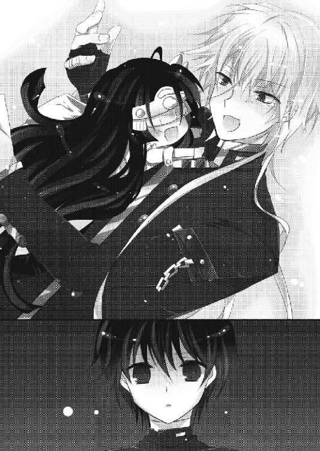
「............」
「............」
その後、二人に会話らしい会話はなかった。
薄暗く、じめっとした路地裏を野郎二人で歩くというのは、なんとも居心地が悪い。気まずいというか、間がもたない。そのくせ話をする気には全くなれない。
何でこんな奴と......そういう気持ちが先に立って、光一の精神をイライラさせていた。
「......いったいどこへ向かっているんだ？」
「君はただついてくればいい」
声をかけてみてもこの調子だ。光一も元からコミュニケーション能力に秀でた方ではなかったが、心路は壊滅的だった。感情が希薄なのを抜きにしても酷すぎる。必要な会話とそうでない会話を完全に分けて、最小限の言葉で終わらせる。
まさに効率だけを考えているロボットと話をしているようだった。
どれくらい歩いただろう。
道はどんどん細くなっていき、放置されたゴミ袋やそのゴミを漁る猫などに見飽きてきた頃......。
「ついたぞ。ここだ」
突然路地の終点に到着して、視界が広がった。
そこは、蛇のようにうねって街中に広がる路地に、ぽっかりと開いた不思議な空間だった。正午だからだろうか、真上に太陽があるため、光がビルとビルに挟まれた空間に降り注ぎ、街中だというのに幻想的な風景になっている。
そしてその空間の中心に、背の低い一軒のアパートが建っていた。三階建ての、普通のアパートだ。豪奢でもなければ貧相でもない。
心路は足早にアパートに近づき、ポストを通り過ぎて階段を上っていく。光一もそれに倣って後を追った。
ポストに明記されていた名前を見てみたが、ほとんど、というかほぼ全てのプレートが外されていた。唯一プレートが挟まっている部屋のポストも、字が煤けてしまっていて名前が読めなくなっている。
こんな場所に何があるというのだ......おちょくってんのかこいつ。
光一は、怪訝そうに心路の背中を見つめるしかなかった。
階段を上り、三階の一番奥の部屋へ向かう。
「......ここか？」
「ああ」
見た限り、普通の部屋だ。ただ、他の部屋とは違って換気扇が回っており、微かに香ばしい香が周囲に漂っていた。
これは......トマトスープの匂いだろうか？
昼食がまだだった光一は、急に空腹を覚えた。夢でも腹は減るらしい。無駄にリアルだった。
横にいた心路は、扉を前にしてポケットに手を突っ込み、鍵を取り出した。
「......貴様の家か？」
「違う」
即座に否定が返ってくる。
自分の部屋ではないのに鍵を持っている。
ということは......。
「まさか──彼女の家か!? 合い鍵なのか!? 愛鍵なのか!?」
「違う」
「別に羨ましくなんかないぞ！ お、俺だって、彼女の一人や二人、い......いるぜぇ？」
今日一樹にバカにされ続けてきた反動か、どうしようもない噓までほざいてしまった光一。
「............」
「......おいなんだその顔！ 脳内じゃない！ 二次元でもないぞ！ 本当だ！」
「違うと言っているだろう」
絶対に負けたくないらしく、悲しい噓までつく光一であったが、心路は否定した。いつもカッコつけることに命をかけていた光一だったが、どうにも心路に対してはムキになる傾向がある。
「お前の家でも彼女の家でもないなら、誰の家なんだよ」
わけがわからないという顔で尋ねると同時に、ガチャリと鍵の開く音がした。
心路は答えずに、ドアノブに手をかけた。
金属の擦れ合う独特の音のあと、ドアが開かれていく。
そして、開かれたドアの向こうに光一が見たものは、想像を遥かに凌駕する信じられない光景だった。
まず最初に見えたのは狭い玄関。
次に玄関の真ん前に台所と冷蔵庫。
そして──その台所に立つ、一人の女性の姿があった。
服装は青いジーパンにシンプルなＴシャツ。その上に、料理をするためのエプロンをつけている。
女性は右手におたまを持ち、鍋で煮え立つスープを掬って静かに口に運んでいくところだった。その仕草は妙に色っぽく、味見を終えたあとの頷きには独特の可愛らしさがあった。光一も思わずドキリとした。
見るからに新婚若奥様。
見るからに専業主婦。
だが、しかし。
血をそのまま染みこませたような深紅の長い髪。
海外のモデル雑誌にでも載っていそうなほどに洗練されたスタイル。
全身で化け物じみた美しさを漂わせる、その人物はやはり──
──どう見てもシェード司令、能登原明日菜その人であった。
「────」
本日一番の放心が、光一を襲った。
何も考えられない。目の前の光景に、完全に機能停止。わけがわからないとは、このことだ。
あの司令が台所に立っていて。
あの司令がエプロンを着けていて。
あの司令が料理を作っている。
そしてスープを味見して自分の料理の出来に、「うん」と満足そうに頷いている。この状況を瞬時に受け入れろというのは、たぶん世界中の誰であっても不可能な話だった。
光一が放心して真っ白になっていると、明日菜がこちらに振り返り、部屋にやってきた二人を見やった。
「ん？......ああ、おかえり。早かったね」
まるで旦那様を迎える奥様のごとく、明日菜は心路に微笑む。
すると、心路は無感情に、
「ただいま」
とだけ答えた。
........................。
............。
......。
「えええええええええええええええええええええええええええ!?」
再起動した光一が最初に発したのは、絶叫に近い驚きの声だった。
入植試験 優
優
【回答者５ 澄波優】
例１
「笑って」
少年がそう言った。
「ねぇ笑ってよ」
微笑みながら、私に笑ってと懇願してくる。
自分ははにかみながらも、不器用な笑みを浮かべようとした。
されど、顔の肉はぴくりとも動かず、まるで石でできた仮面のように強張って、固まってしまった。
すると少年は私に背を向けて、闇に向かって歩き出した。
後を追おうと走り出しても、少年の後ろ姿はどんどん遠くなっていく。
いつしか少年の姿は闇に溶け、一人になった私は、肩を抱いてその場に崩れ落ちた。
例２
彼と手を繫いで、坂道を歩く。
彼の手の温かさに私の顔は赤くなる。恥ずかしくて目を見ることができない。鼓動は速くなって、思わず下を向いてしまう。
彼が私に笑いかける。私も照れながら笑顔を浮かべる。
彼が私に応えてくれる。私も彼に応えてあげられる。
彼が私だけを見てくれる。
彼がずっとそばにいてくれる。
こんなに幸せなことはないと、私は顔を緩ませる。
※澄波優さん。あなたはこの辛い現実と、幸せな夢、どちらを選びますか？
優「わたくしが現実世界の心路様を一人にできるとでも思っているのですか？」
［辛い現実］←
［幸せな夢］
Battle ３ 遥か彼方の現実感
「ああ、おかえり。早かったね」
まさかの能登原明日菜司令のお出迎えを受けて、今世紀最大の衝撃をいただいた光一は絶叫した。
なんだというのだろう今のやりとりは。おかえり？ ただいま？ 能力泥棒とシェードの司令が、どうしてそんな新婚さんみたいな挨拶を交わしている？ この二人は協力関係にこそあれ敵同士のはず。司令は心路を罠にはめて利用しようとしていて、心路は特務班の守護対象であるアルルを殺そうとしているのだ。
何故この二人が......？
「な、何をやっているのでしょうか、司令？」
狼狽する光一を見て、明日菜はおたまを置いてエプロンで手を拭きながら玄関までやってきた。
「んー？ 何って、見てわからないかい？」
「わからない！ 全然わからない！」
「そうかい？ トマトソースのモッツァレラパスタを作っているのだよ」
なんて家庭的でオシャレなパスタだろう。
「我ながら美味しくできた」
あまりにも普通に嬉しそうに言うものだから、光一も一瞬「それはよかった」と返しそうになった。
「ってそうじゃないッ！ もっとおかしいところがたくさんある！」
光一が激しくツッコミを繰り出していると、明日菜は少しムッとした顔をする。
「おかしなところとは失礼だな......こんな見てくれをしていても私だって女だ、料理くらい作るよ」
「いやだからそういうことを言ってるのではなく......！」
「？ ああ......そうか。フフ、安心したまえ、ちゃんとコーイチ君の分も作ってあるとも」
「ちがあああう！ なんでそこでちょっと胸張って自慢気にするんですか!?」
状況が全く呑み込めない中、光一はハッとする。
......こういう展開は朝から続いていた。広美や薫の時もそうだったはずだ。
この明日菜も見かけはほとんど変わっていないが、目の色が違う。元々は白目と黒目が反転していて、異形と呼ぶに相応しい眼力の持ち主だったはずなのだが、今は普通の人間と同じ瞳をしている。
これは、《幸福夢幻》の影響と考えるべきではないだろうか。またもや自分は能力者の見せる夢に呑まれようとしているのではないか？
心路の忠告の通りだとするならば、ここで能登原明日菜の異変を受け入れるわけにはいかない！
「──フッ、俺は騙されないぞ。俺の知っている司令はエプロン着けたり料理作ったりはしないッ！ もっとラスボスっぽいオーラを纏っている人だ！ よって俺はこの司令は偽者──紛い物と断定するッ！」
ビシィッと上司に向かって指を指す光一。確かに広美や薫の異変は凄まじいものがあったが、この司令は今までとはレベルが違う。この人の場合はあまりにも現実感がない。
光一の予測は確信に変わった。
......ところが、
「私は夢に囚われていないよ」
「............え............いや、しかし、目の色が」
「ああ、これね。カラーコンタクトだよ。日常生活であの目はさすがに不気味がられるからね。私だって、少しは外見を気にするさ」
言って、眼球に張り付いたカラーコンタクトを取って見せる。
そこには、いつもの能登原明日菜がいた。
光一が目を見開いて、信じられないことを聞いたような顔をする。
明日菜はそのリアクションに、本当に傷ついたように肩を落とした。
「............。日頃から、プライベートと仕事の切り替えはしっかりするように心がけていたけど......その反応は少しショックだ」
しゅん、としてしまう能登原司令。
落ち込んだ仕草には、本当にリアリティが無かった。
「能登原明日菜は正気だ。現状は全て理解している」
光一の横にいた心路が、納得できない光一に追い打ちをかける。
「つーか貴様も貴様だ！ なんで司令と一緒に、しかも一緒の部屋にいる!? お前にとってシェードは敵だろうが！」
「まぁまぁコーイチ君。とりあえず上がったらどうだい？ パスタものびてしまうし」
「......ぅぅうぅぅぅっ、だああああ！ 俺の中のイメージが崩れていくぅぅぅ！ クールで非情で容赦の無かったシェードの認識が崩壊していくぅぅぅぅ！」
ついに暴走した光一は、手すりにがんがん頭を打ち付け始めた。
朝からこんなことの連続で、もう光一の精神は限界に達していたのだった。
ひとしきり暴走し終えると、光一は脱力してげっそりした顔を明日菜に向けた。
「そんな深刻な顔しなくてもいいだろう。それに、中でアルルも待っているぞ。早く顔を見せてやるといい」
明日菜のその言葉を聞いて、光一はすぐに顔を上げた。
「アルルが、ここにいるのか!?」
「うん。君に会いたがっていたよ。説明は後でするから行ってあげなさい。奥の襖の向こうだ」
明日菜が玄関で道を譲るような動作で、光一を招き入れる。
光一は、弾かれたように奥の襖へ向かった。
カーペットに足を取られ、転びそうになって床に手をつく。
部屋全体を見回し、襖を発見して飛びつくように手をかける。
スコン、という軽快な音と共に襖が開かれ、彼女の名前を呼ぶ。
「アルル！」
息を切らして、襖の向こうの和室を見回す。
守るべき人の姿は、すぐに見つかった。
アルルは畳の中央に座って、突然やってきた光一に、びっくりして固まっている。
手に持っているのはきっとトランプだ。
対面に、澄波優も座っていた。二人でババ抜きでもしていたのだろう。
でも............そんなことはどうでもいい。
今はただ、アルルがいてくれただけでよかった。
「よ......よかっ......」
肩の荷が下りたような気持ちだった。
薫や兎乃からアルルが存在しないことを聞かされ、まるで自分の存在理由が失われたように思えた。あの時の不安は、今思い出そうとしても計り知れないものだ。
守りたい人が存在しない世界。そしてその世界を受け入れてしまいそうになった自分。あの時、光一はアルルの声を聞いた気がした。だから踏み留まることができた。
再会できたことで、思わず光一は泣きそうになってしまった。
しかし光一が泣くよりも前に──
「コーイチィィィィィィィィ！」
「──おぅふっ！」
大粒の涙をまき散らしながら、アルルが光一の首に抱きついた。
首への直接打撃も相まって、体重を支えられずに床にぶっ倒れて後頭部を強打した。
「アル、アルル、前にも言ったが首、首ぃぃ......！」
「寂しかった寂しかった寂しかったぞー！ 今までどこにいたというのだっ！ ボクは......ボクは......！」
首に縋り付くアルルの声はか細く震えていた。抱きつく力も尋常ではなかったが、それよりもなによりも、会いたかったという気持ちがひしひしと伝わってくる。
その純粋な求めは、光一の首の痛みを忘れさせるには十分だった。
「ごめんな。ちと道に迷って遅れちまった......許してくれ」
そっと頭を撫でてやる。
アルルはすんすん鼻を鳴らしながら、光一からちっとも離れようとはしなかった。肩を震わせて、肌をすり寄せてくる。まるで子犬のようだ。
「篠塚さんは、ずっとあなたを捜しに行くと言って聞かなかったのですよ」
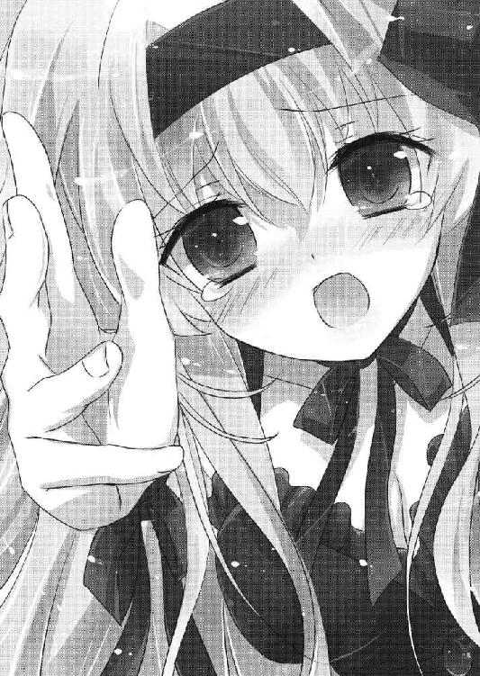
畳の上で正座している優が、瞳を閉じて静かに言う。
「しばらくそうしてあげていてください。あなたがいなくて、ずっと沈み込んでいましたから」
「......澄波は、アルルの面倒を見ていてくれたのか？」
「ええ。でも、わたくしには心から安心させてあげることはできませんでした。あなたでなくてはだめなようです。どうかそばにいてあげてください............この世界で、彼女は孤独ですから」
含みのある言い方だな、と思った。
孤独、とはどういう意味だろう。
光一が疑問に思っていると、壁際の床に腰を下ろした心路がその疑問に答えた。
「篠塚アルルは、夢に囚われた人間には存在しないことになっている。彼女は誰にも存在を認識されずに彷徨っていたところを、能登原明日菜に保護され、ここに連れてこられた」
「存在が......認識されない？」
「理由は、わかりません。ただ、篠塚さんは私達以外のこの世界の人間には、姿が見えていないようなのです」
「じゃあ、今アルルは俺達以外には誰も......」
アルルの名前を出した時の薫や兎乃の反応を思い出して、ようやく納得する。あの二人にはアルルの記憶そのものが無くなっていたのだ。まるで最初から存在しなかったかのように。
胸の中のアルルを見やる。
アルルは、涙で濡れた瞳を拭いながら、面を上げた。
「カオルやウノに会いに行った。ヒロミや、カズキ、チダイにも。でも、どれだけボクが話しかけても......見向きもしてくれんのだ......」
「............」
「ボク......がんばったんだ。ボクを見てくれるように、歌を歌ってみたり、目の前で踊ってみせたり......それでもダメなのだ......みんなの中には、ボクがいないのだ......っ」
「アルル......」
「それでもコーイチなら......コーイチだけはボクを忘れていないと信じて、いっぱい捜したんだ。いっぱいいっぱい捜したんだぞ......」
「ごめん......遅れて、ごめんな」
「もう、一人にしないで......一人は嫌だ......嫌だよ、コーイチ......」
もう一度、強くアルルを抱きしめる。
また泣かせてしまった。もう二度と、孤独を味合わせまいと誓ったというのに。
七年間、あの美しくも寂しい箱庭の中で、アルルは一人で偽りの空を眺めてきた。だから助けようと思った。助けたいと思った。カッコつけたいという理由だけではなく、心からこの子を救いたいと、そう思えた。
自分のためだけではなく、この子のために命をかける。
この子にだけは、平穏でありきたりな幸せを与えてみせる。
それが自分の目指した最大級の理想だというのに......。
やりきれない想いを胸に、光一はひたすら謝ることしかできなかった。
しばらくして、アルルは涙の痕をこすり、ようやく笑顔を見せてくれた。
「す、すまぬコーイチ。コーイチは悪くないのに、ボクは何を言っているんだろうなっ。ちゃんとコーイチはボクのことを覚えていてくれた。それだけでもボクは、幸せ者だっ」
いつもの笑顔が、そこにあった。
光一の中で、何かたまらないものがあふれ出す。
ああ......この健気さはどこからくるのだろう。どうしてこんなに純粋で、優しくあれるのだろう。
光一は心の底からアルルのことが愛おしく思えた。
「──ラブラブですね。羨ましいというか、暑苦しいです。いちゃつくのも結構ですが、せめて私達のいないところでお願いできますか？」
「なっ!? ど、どこがラブラブだ！」
横で、じっ......と二人のやりとりを見ていた優が、盛大に横槍を入れてきた。
「どう見てもラブラブです。お熱いことで。間宮さんがこの現場にいたらさぞかし悲しむのでしょうね」
「なんでそこで薫が出てくる!? 俺は別に異性としてアルルを好いているわけじゃ──」
「ああ、熱い熱い。エアコンのリモコンはどこかしら」
優がわざとらしくリモコンを捜し回る。無表情なだけに、必要以上にわざとらしい行動だった。
確か彼女は能力泥棒とは違って、表情が作れないだけで感情は人並みだったはず。クールで清楚なイメージだったが、意外とねちっこい性格をしているのかもしれない。
「澄波ってそういうキャラだったか!? そそ、そんなことよりだなっ、貴様ら俺に全部説明しろ！ どうして敵対している司令と一緒にいるんだよっ」
場をごまかすために話題を変える。
すると、優だけではなく、心路も視線を光一に向けてきた。
「そうですね......まずはそこから説明しなければなりません」
空気の緩みが消え、緊迫感が部屋中を満たす。
そして、ついに真実が優の口から語られようとした、その時。
......クゥゥゥゥ......。
アルルのお腹から、猫の鳴き声のような音が響いた。
「あぅ......お腹が空いていたの忘れてた」
顔を引き締めていた光一が、ずるっと畳の上でずっこけた。
「あ......コーイチっ、い、今のはおならじゃないぞっ？ ボクの腹の音だっ。本当だぞっ」
「......言われなくてもわかってるから安心しろ」
アルルは、てへへと頭を搔きながら照れくさそうに苦笑した。重要な会話が始まろうとしていたというのに、とんでもないタイミングの悪さである。
「仕方ありません。ひとまず、食事にしましょう。話はそれからで」
なんとも締まりの悪い空気に、光一は溜息をついた。
そして昼食──となったわけだが。
「............」
光一はトマトソースのモッツァレラパスタを口に運ぼうとしている体勢で、かれこれ五分近く動けずにいた。
別に誰かに食べるなと言われたわけではない。
個人的に食べられないだけだ。
その原因は、このあり得ない食卓にある。
「──シンジっ、ボクにその香辛料を取ってほしいっ」
「？......これか？」
頼まれた心路が、テーブルに手を伸ばしてバジルの入った瓶を取り、アルルに手渡す。
「ありがとうシンジっ」
「問題無い」
アルルの謝礼に小さく頷いて、無言で食事を再開。
「篠塚さん、ちゃんと前掛けをつけて食べてください。お洋服が汚れてしまいますよ」
「おおっ、すまないなユウ。フォークはまだちょっと苦手なのだ。上手くクルクルできなくて......」
「まあ、そうなのですか。淑女たるもの、テーブルマナーはマスターしておいて損はありませんよ」
「うむぅ......そうなのか。がんばらねばなっ」
「はい、がんばりましょう」
ユウがアルルの首元に前掛けを装着させ、アルルも食事を再開して、一生懸命にフォークをクルクルさせる。
「澄波君は間宮君と同じで面倒見がいいんだね。きっといいお母さんになる」
「いえ、わたくしは家事が苦手ですので。能登原さんこそ、いい奥さんになるのでは。お料理がすごく上手で、羨ましいです」
「ん？ そうかい？ そう言ってもらえると嬉しいね。澄波君は料理はしないのかい？」
「......何度か試したことがあるのですが......その......一度心路様にお出ししたところ、それ以後作るのを止められてしまって」
「へぇ、それはまた、どうして」
明日菜が心路の方を見て、視線で問う。
「身体に悪影響を及ぼすからだ」
心路はやたらと高速でパスタを搔き込みながら即答した。
その時優は表情こそ変わらなかったが、一目でわかるくらいあからさまに肩を落とした。
「......秋雨君。乙女の料理の感想にそれはないだろう」
「いいのです。わたくしが不出来なのですから。心路様は悪くありません」
「澄波君は健気だなぁ。女の子の鑑だよ。いっそうちの嫁にこないかい？ 私はシェードの司令だから玉の輿だよ？」
「お上手ですね。遠慮しておきます。そういう趣味はありません」
華麗に躱されて、明日菜は楽しげに笑った。
.............................................。
........................。
............。
「これが非現実じゃなくて──何が非現実だというんだッッッ！」
ついに耐えきれなくなった光一は、椅子から立ち上がって天井に向かって大声で叫んだ。
四人の視線が一斉に光一に集まる。
「俺か!? 俺がおかしいのか!? 否！ いつも変態だの中二病だの言われ続けてきたがこの状況で一番マトモなのは確実に俺だ！ 何故ここの連中はこうも素直にこのあり得ない食卓を受け入れているのだ!? 変だな、とか、異常だな、とか思わんのか！ 思わんのならこれは何かの陰謀だそうに違いないそうでなくてはならないそうであってくれ頼むからぁぁっ！」
「コーイチ君、食事中だよ。もう少し声を落としなさい。うるさい男は女の子に嫌われちゃうよ？」
「まったくです。どうしてあなたはそんなに落ち着きがないのですか」
「コーイチ、お行儀悪いぞー」
「黙れ」
「ぬあああああああああ！ 頭がおかしくなるぅぁぁああああ！」
銀髪を搔き毟り、鬼気迫る形相で天に叫ぶ。もう何がなにやら、光一にもよくわからなかった。
現在の状況がいかに異常かというのをわかりやすくまとめると、
底の知れないラスボスチックな組織のボスと、
世界の時間を巻き戻す力を持ち、世界中の能力者から命を狙われている運命の少女と、
その少女の命を奪うために全てを懸け、組織のボスの策略によって全てを台無しにされた少年と少女が、
一つのテーブルを囲んでパスタを食べているのである。
そんな殺伐とした関係の四人が笑い合いながら和気藹々と食卓を囲む場に、一人だけ異議を唱えたくて仕方がない人間がいたとすれば、その人間は頭がおかしくなってしまうのも無理もないというものだ。
「お前ら絶対おかしいよ！ ここはもっと殺伐としているべきなんじゃないのか!? そういうメンツなんじゃないのか!? 特に貴様！ そこでフグみたいに頰パンパンにしてパスタを口に詰め込んでいる能力泥棒！ 貴様だよ！ 貴様はそれでいいのかッ!?」
「──もにゅぃがら？ ちみはにゅっちゅいなにゅのはぬしをしちゅいる（何がだ？ 君はいったい何の話をしている？）」
「何言ってんのかぜんっぜんわかんねーやちくしょう！ どうしたんだ貴様!? そんなに口パンパンにして貴様は俺のライバルとして恥ずかしくないのか！ そんなにパスタが美味しいか!?」
「いちゅきみはろくのらいぶるにゅぃなっちゅぁんら（いつ君は僕のライバルになったんだ）──んぐっ。あとパスタは美味だ。それが何だ。何を怒っている」
「そうだぞコーイチ。どうしてそんなにプンプンしてるんだ？」
アルルが心路の疑問に賛同し、眉をひそめた。
「アルル......お前もだっ！ こいつはつい最近までお前を殺そうとしていた奴なんだぞ？ なんでそんなのほほんとしていられるんだよぅ？」
「それは知っているが......心路は別に悪い奴ではないと思うのだが」
「お人好しも大概にしろッ。どこからどう見ても悪い奴だっつーの！ 俺達の敵だっつーの！ お前はもっと、その......バカー！ だの、近寄るなー！ だの、チェストー！ だの言ってこいつを殴ってもいいんだ！ お前にはその権利があるんだ！」
「むぅ。殴りたいなんて思ったこともないぞ。それにボクは心路がいなかったらきっと寂しい。コーイチほどではないが」
なんという意外な回答。アルルは心路のことが嫌いではないらしい。誰に対しても天真爛漫なアルルだが、まさか自分を殺そうとした人間にまで心を許すとは光一も思わなかった。
「篠塚さん。佐藤さんは、心路様にあなたを盗られるんじゃないかと心配でたまらないのですよ」
「おお？ そうなのかコーイチ？」
「!? 何故そうなった!?」
「男の嫉妬は見苦しいですよ佐藤さん......」
「コーイチっ。安心しろ、アルルはコーイチだけのものだっ。どこにも行かぬ。一番強くギュッてするのはコーイチだけなのだぞっ」
「待て待て待て待て待て待て！ 勝手に話を進めるな俺の話をちゃんと聞けッ！」
光一が、アルルにとんでもないことを言われて赤面する。
嚙み合わない会話と、嚙み合わないやりとり。普段なら突飛なことを言って突っ込まれるのは光一なのだが、この夢の世界ではすべからく真逆だった。むしろこの銀髪捏造オッドアイ男の方がまともに見える始末である。
やいのやいの言い合う少年少女四人を見て、ほっこりした顔で明日菜が笑う。
「......若いって、いいなぁ」
「そしてあんたが一番現実感が無い！ どうしてそんなに緩いんです!?」
「女上司のプライベートなんて、こんなもんだよ？ 変な幻想を抱かれてもなぁ」
............。
その一言には妙に現実感があった。
「くぅ......っ。俺の愛して止まなかった非現実が壊れていく......！ 俺はどうしたら......！」
「おかわり」
──キリッ。
「秋雨はどさくさに紛れておかわりしてんじゃねえええええええ！」
その後もこのカオスと化した食事は進み、結局光一は方向修正に失敗してパスタをやけ食いすることになり、胃もたれを起こすのであった。
食事を終えた光一は、明日菜の「働かざる者食うべからずだよ」という言葉に従って、現在......食器を洗っていた。
洗剤をスポンジに垂らして、泡を立ててから皿を擦る。
「......解せぬ」
何がと問われれば、光一は全てだと答えるだろう。
今朝から続く出来事全てが解せなかった。
「......それはこちらの台詞ですよ」
しかめっ面で皿を洗っていると、横で光一の洗った皿を布巾で拭いていた優がぼそりと言った。
彼女も料理を手伝えなかったため、片付けくらいは手伝いますと自分から皿拭きの役を買って出たのだ。
優とは一、二回は言葉を交わしたことはあったが、こうして二人でまともに話すのは初めてだった。元々声をかけづらい雰囲気があったので、台所には多少の気まずさが漂っている。
「むぅ。澄波は何が解せぬというのだ？」
「──聞きたいのですか？」
即座＆真顔で問うてくる。優はアンチテーゼの影響で一切の表情を作ることができないため感情が読み取り難い。じっと見つめながら問いを返されて、少し引いてしまった。
光一は一度唸ってから、首を縦に振った。
「わたくしが解せないのは、あなたが夢を否定しなかったことです。夢見がちなあなたのことですから、てっきりわたくしは真っ先に夢に呑まれているだろうと予想していました。よく無事でしたね」
「ふん、そんなことか。俺は現実と夢の区別くらいつく。それに夢は所詮夢......この俺のハイクオリティな現実に比べたら──フッ、こんな夢など」
「まあ、どうせ夢と現実の認識を問われ、判断に迷って呑み込まれそうになったところを心路様に助けられたのでしょうが、少し意外でしたので」
「......ぅ......ぐ」
図星だった。
「しかしそれを言うなら貴様らこそ、大切な者のために戦っていたのだから、幸せな夢に呑まれてもおかしくなかっただろう。秋雨は姉のため、お前は......」
「............じー」
「!? あー......えっと、そのぅ、あれだ」
反撃するために言ったことだったが、見事に地雷を踏んだ。
優がずずぃっと顔を近づけてきていた。真顔だが、たぶんこっちを睨んでいるのだろう。優は光一が狼狽するのを見届けてから、スッと前に向き直った。ただし、わずかに下を向いている。
「心路様は感情が希薄ですから......心が揺れはしたでしょうが、現実世界のお姉様を見捨てて自分だけ幸せになるなどという自分勝手な判断はなさらなかったのでしょう。この幸せな世界は、所詮夢ですから」
声音は低く、悲しみが含まれていた。
「...............わたくしも、心路様と同じです。わたくしが欲しいのは幻想ではなく......現実での......心路様の......」
優は自分の手を胸に押し当てると、続いて小さく呟いた。
光一は心路との戦いの最後に見た、抱き合う二人の姿を思い出していた。心路の何がそこまで優を虜にしているのかはわからないが、彼女の想いが本物だということだけはわかる。心路と優は確かに光一にとって敵だ。しかし事情を理解できないほど光一は愚かではなかった。
「......いつか伝わるといいな。お前の気持ち」
何気なく言った言葉だった。純粋にそう思う。敵だとか味方だとか以前に、本心から想いが届けばいいと光一は思った。
優は驚いて目を見開いて、横目で光一の顔を見た。皿洗いを続けている光一の顔は、少しだけ微笑んでいるように、優の目には映った。
優は戸惑ったように視線を少しだけ彷徨わせて、一度深く下を向いた。
そして──
バキッ！
──拭いていた皿を両手で真っ二つに割った。
「ああ、申し訳ありません。あなたが知ったような口を利くものですから、つい」
そして平然と割れた皿をゴミ箱に捨てて、再び作業に戻る。
光一はギョッとしていた。
「......な......なぁ？ 澄波。もしかしてお前、俺のこと」
「............」
「......嫌いか？」
恐る恐る聞いてみた。
「ああ、よかったです。どうやら伝わったようですね」
「──だよなッ!? 何かここに来てからお前俺に刺々しいもんな！ 表情が無いからわかり辛い！ 何故だっ、俺の何が気にくわないか言ってみろ！」
さあお父さんが嫌いな理由を述べよ！ と娘に尋ねる父親のような悲しい心境で光一は問うた。
すると、優は水を得た魚のように、嫌いな理由を述べた。
「まず第一に──私はあなたに嫉妬しています」
「......はぁ、嫉妬？」
「ええ。ご存じの通り心路様は感情が希薄です。なのでわたくしにはこれっぽっちも感情を向けません。あるのはお姉様への気持ちだけ全てお姉様への気持ちだけ。ええそうです。でもわたくしはそれでもよかった。今まではそれでもよかった。でもあなたが現れてから心路様は少し変わられてしまった。心路様がわずかなりとも感情を見せるようになったのですからこれは裏を返せば喜ばしいことではあります。ですがその感情を向ける相手が問題なのです」
「何故それが俺に関わるのかわからんが......で、その感情を向ける相手ってのは」
光一が尋ねると、ものすごい勢いで優は光一の方へ振り向いた。
またもや悲鳴をあげそうなほどに引いてしまう光一。
「あなたですよ、あなたに心路様は感情を向けられたのです。わたくしにではなくあなたに」
「俺!? うわ、なにそれやだ気持ち悪い......」
光一が素で鳥肌を立てていると、
バキッ！
二枚目の皿が割れた。
「ひぃっ！」
「勘違いしないでいただけますか。心路様はそっち系の方ではありません。彼があなたに向ける感情は嫌悪です。気にくわないという想いです。心路様は心底あなたが気に入らないご様子」
「な、なんだ......ならばよいではないか」
「──よくありません。わたくしにとって心路様の感情はこの世の何よりも尊ぶべきもの。欲すべきもの。愛すべきもの。たとえそれが負の感情であれど他者へ向けられたのならわたくしは嫉妬します。羨ましいです。ムカつきます。ええ、わたくしはあなたにとてもとてもムカついているのです」
光一は優から完全に憎まれていた。理不尽と思う反面、優がとんでもないほどの愛情を心路に向けていることがわかった。
それはもう、怖いほどの......。
「こ、これがヤンデレというやつなのか......？」
「何か言いましたか？」
「いえ何も」
「それからあなたを嫌いな理由は他にもたくさんあります。一つは、デリカシーの欠如」
一応光一もデリカシーに関してはあまり備わっているとは思っていなかったので、ここでは唸ることしかできなかった。
優はふぅと一度息を吐いて、気持ちが落ち着いたのか口調を緩めた。
「......さきほどもそうです。わたくしがアンチテーゼに苦しんでいるのに、あなたはわたくしに表情が無い、と仰いました。さすがのわたくしも、少し傷つきました」
「あ、ああ......それは、すまなかった。俺の配慮が至らなかった......そこは確実に俺が悪い。反省する」
自分に非があると認め、光一は顔を引き締めて素直に謝った。
ここは意地を張る場面ではない。少女を傷つけてしまって、自分に非があるのならすぐに謝る。これも光一のポリシーの一つだった。
それから優と光一はしばらく黙って作業を再開。
最初よりもさらに空気は気まずくなっていた。地雷踏みまくりの光一は、嫌な汗が背中を伝うのを感じながらひたすらに沈黙に耐える。
「............」
「............」
「............わたくしも、女の子なのですよ」
しばらくして、優が小さく零した。
光一は意外な発言にギョッとして優を見る。優は、視線を排水溝付近に落として、どことなく落ち込んでいるようにも見えた。
「あなたのわたくしへのイメージは冷たい女、なのでしょうね。でも表情が無いだけで、感情は人並みに備わっています......これでもいろいろ、怒ったり笑ったりしているつもりなのです」
「............わ、悪かった。本当に」
新発見。意外と根に持つタイプであった。
しかし、きっと光一の一言に相当に傷ついたのだろう。
申し訳なさが光一の心を満たす。
「それに......わたくしにだって、作れる表情はあるのですよ？」
と、そう言って、優はいきなり光一に向かって正面に立った。
何事かと光一も正面に向き合うように立つ。
......優は真顔のまま、ぷく～っと頰に空気を溜め始めた。
まるでフグのように......。
「............」
「............それはなんの表情だ？」
尋ねると、優はプスーっと頰から空気を抜いて、短くこう言った。
「プンスカです」
........................。
怒っているらしかった。
すぐにまた頰に空気を入れて、さらに優が顔をこちらに近づけてくる。まるで、「フフフどうですか？」と自慢気に見せつけてきているようで、光一の気まずい気持ちは少しだけ和んだ。
しかしその後も優がいかに光一のことが嫌いかを長々と説かれ、説教を受ける子供のようにどんどん光一は縮こまっていくのであった。
食事を終え、食器の片付けが終わった後、光一はテーブルの対面に座る明日菜と向き合い、これまでの経緯を聞かされていた。
リビングに残ったのは光一、明日菜、心路の三人だ。
アルルと優は和室に移動させた。これは優と明日菜の配慮である。ここでの話が、あまりアルルに聞かせるに相応しくない内容だったからだ。
まず最初に光一が問うたのは、何故心路が明日菜、ひいてはアルルのそばにいるのか、ということだった。
「契約？」
「そう、契約を結んだ上で、秋雨君と澄波君には再びシェード......いや、特務班に協力してもらうことになった」
「......協力って、こいつらはアルルを殺すことが目的だろう。しかもあんたの策略で永遠に不可能になった......こいつにとって、司令は憎むべき敵のはずだ」
壁に背を預けて目を閉じている心路を指差して、光一は言った。
明日菜はテーブルに肘を乗せ、手に顎を乗せながら、光一をじっと見つめる。その姿からはさっきまでの緩みは完全に消えていた。
シェード司令としての能登原明日菜が戻ってきていた。
人間らしさの欠片もない視線。底知れぬ存在感。物理的に身体を押されているような錯覚すら覚える、威圧。
プライベートから仕事にシフトした証拠だった。
「当然だ。彼にとって我々は敵。そこは間違いない。しかし、能力泥棒をこのまま敵にしておくのは危険だと私は考えた。そこで、前回はこちらが一方的に利用させてもらったが、今回は本当の意味で同盟を組むことになってね」
これまでの七年間、明日菜は心路に、ネメシスで作り上げた噓の契約書にサインさせて利用してきた。心路はその契約書の真の内容が「アルルに攻撃をしかけようとすれば、その瞬間に命を失う」というものだとは知らずに、今までシェードに協力してきたのだ。
しかし、オーロラ信者との戦いの中で心路はこの事実を知ることとなり、協力関係は決裂。契約書は明日菜の手元にあるため、心路は契約を解消することができずに、望みが絶たれた状態になってしまった。
それでも彼が諦めるとは思えなかった明日菜は、再び契約を申し込んだのである。
「今回は小細工無しの約束でね。お互い完全に利害の一致で契約を結ぶことができた」
光一は、あからさまに怪しいと思った。
この底知れぬ狡猾さを持つ女が、そうやすやすと契約通りにことを運ばせるだろうか。
心路も心路で、一度裏切られたのだから、再契約を結ぶなど言語道断なはず。となると、契約の内容が、それほど両者にとって理想的なものだったとしか考えられない。
光一は、不思議と嫌な予感しかしなかった。
「......その契約はどういった内容だ」
自分の表情が険しくなるのを、光一は感じていた。
明日菜が視線を心路に送る。
心路は閉じていた目を開き、光一を冷たい瞳で見つめた。
交差する視線。
わずかな沈黙の後、心路は全てを吐露した。
「──『木漏れ日現象』により予定されている世界の滅びは、三年後。その三年間、《一握りの希望》所持者を守りきれば、滅びの日の前日に僕に所持者の殺害権が与えられる。それが契約の内容だ」
「............なっ」
淡々と述べた心路の言いに、光一の視界が真っ赤に染まった。
明日菜に視線を戻して、怒鳴りつける。
「ふざけるなよ──能登原明日菜ッ！」
「ふざけてなどいないよ。これが一番、両者にとって良好な契約だ」
「何が良好だ......！ やっぱりあんたはアルルを利用して......！ それが大人のすることかよ!?」
予想通り、契約はろくな内容ではなかった。光一の怒りはもはや頂点に達している。今にも明日菜に摑みかからんとする勢いだった。
明日菜は、酷く失望したように、光一の前で溜息を吐く。
「......じゃあ君は、あのまま秋雨君を放置して、シェードと敵対する方がよかったというのかい？」
「まだそっちの方がマシだ......こいつの能力には穴だってあるッ。シェードが総出で潰しちまえば捕縛することだって簡単なはずだ！」
「前回の君の勝利は運がよかっただけだよ。もし彼とシェードが真っ向から衝突すれば、死者が出るのは避けられないだろう。これは我々にとっても大きな損害になる」
「そんなもん建前だろうが！ あんたは敵を捕らえるためならば一般人の犠牲すら厭わない人間だ！ いまさらそんなこと言われても納得できるかよ！ あんたはただこいつの力を利用して、特務班の防衛力を強化したいだけなんだろう!?」
「その通りだが？」
飄々と、明日菜は言った。包み隠さず、かすかに笑いながら真実を述べる。
「これほどの能力者を敵に回してしまうのは惜しいだろう。捕縛するのも殺すのも効率が悪い。一番いい方法は何かと言われれば......。これは当然の結論だとは思わないかね？」
「っ......シェードは世界を守る組織じゃなかったのか？ 特務班は......アルルの命を守るチームじゃなかったのかよッ」
テーブルを拳で叩いて抗議の意志を示す。
瞬間、明日菜の瞳に、闇が宿った。
「──甘ったれるなよ、佐藤光一」
光一の背中を、寒気が走る。
明日菜は立ち上がり、ゆったりと歩いて光一のそばまでやってくる。
そしてテーブルに片手をつき、腰を曲げて光一の顔を覗き込んだ。
「我々シェードが......個人のために動く組織だと本気で思っていたのか？ 私は最初に言ったはずだよ。《一握りの希望》を発動させる以外の方法で世界を救うのが、我々の仕事だと。アルルという人間一人を守ることが目的ではない」
「......そうだとしても、発動させちまったらあんたらにとっても意味がねぇんだろう!?」
「もちろんだ。しかし、秋雨君が殺害権を得るのは滅びの日の前日。他の方法を見つけるにしても......そこまで月日を重ねてしまえばもう手遅れだろう。だったら、世界が巻き戻ろうが滅びようが関係がない。その時点で我々の敗北なのだよ」
「............貴様......ッ！」
真っ向から睨みつけ、冷めた視線と怒りの視線が絡み合う。
いくら怒りをぶつけようとも、明日菜は決して動じなかった。
そこに信念があるのかどうかは定かではない。けれど何があっても、この女は揺るがない。常に光一の一枚上をいく。
明日菜は、怒りに燃える光一の耳元に口を持っていった。
「──ついでに言えばね。滅びが免れない状況になってしまったら、彼に世界を巻き戻してもらった方が、世界にとっても優しいとは思わないか？」
視界が、爆ぜる。
光一は、ついに明日菜の襟首を摑んだ。
そのままの勢いで壁まで追い込み、叩きつける。
衝撃で台所の皿が落ちて、けたたましい音が響いた。
「結局、あんたはアルルを保険としてしか考えてねぇじゃねぇか!!」
光一の怒号が轟く。
それでも明日菜は表情を崩さない。
「......この前言ったろう。そう思ってくれて構わないと。君はあの言葉をどう受け取ったつもりでいたんだい？」
「俺は──あんたを認めねぇ！ 俺はあんたのやり方を否定する！ 俺は自分の理想のために、アルルのためにアルルを守る男になるんだ！」
「ッハハハハハ、君の美学は素晴らしいね。でも、人間は理想だけでは守れないんだよ。それが人ではなく、世界ならばなおさらだ」
「そんなことねぇ！」
「青いなぁ！ 私は君が本当に羨ましいよ！ それならば是非とも理想を実現させるために、さっさと世界を救う別の方法を見つけるといい。我々は協力を惜しまないよ？ なにせシェードは、そのために存在する組織だからね！」
明日菜の高笑いが響く。
光一は、迷いなく腕を振り上げた。
拳を痛いほど握り締め、憎き女の顔を凝視する。
女を殴るのは光一のポリシーに反することだ。
だが、この女は別だ。こいつだけは許してはならない。こいつはアルルを、道具としてしか見ていない。
だからこの女は、俺の──敵だ！
「──やめてくれ！ コーイチ！」
その叫びによって、光一の右手の動きが停止した。
全身の筋肉が強張り、息すら止まる。
首を動かして声の方を見れば、悲しそうな顔をしたアルルが立っていた。
あれだけ騒がしく怒鳴ったせいで、話の内容に気づかれてしまったのだろう。アルルは瞳に涙を溜めて、必死に泣きそうなのをこらえているようだった。
「アルル......」
彼女の顔を見て、ようやく光一が平静を取り戻す。明日菜の襟首から手を離し、脱力する。
アルルは、下を向いて、光一にこう言った。
「ボクが......それでいいって、言ったんだ」
「............？」
「ボクが......そうしてくれって、頼んだんだ......」
搾り出すような声で、アルルは言った。
「アルル、お前まさか、秋雨と司令の契約を知って」
光一の問いに、アルルが頷く。
「だから......もう怒るのはやめてくれ......な？」
アルルが無理矢理笑顔を作ろうと、口元を緩ませる。涙はぽろぽろと零れ落ちて、頰を濡らしていた。
強がっているのが見え見えな、悲しい笑顔だった。
光一は、全身の力がどこかへ抜け落ちてしまった。
ふらついて、そのまま椅子に腰を下ろす。
（違うんだ......俺は、お前にそんな顔をさせるために怒ったんじゃない......）
額に手を当てて、歯を食いしばる。
自分を、戒める。
（一番辛いのはアルルなのに......なぁにやってんだ......俺は......！）
自分の不甲斐なさに、光一はただただやりきれない気持ちを己自身にぶつけた。
頭を抱えた光一のそばに、アルルがすがりつくように近づいていく。
「............」
明日菜は二人に一度だけ視線を向けた後、落ち着くまで部屋を出ようとその場を離れた。
玄関に向かう途中、壁に背を預けていた心路とすれ違う。
「──僕はあなたを信用したわけではない」
呟くような声で、心路は言った。
「あなたが契約を守るとは考えていない。故にこちらも、少しでも隙を見せれば、契約書を奪って破棄するつもりでいる」
「............」
「それだけは覚えておけ」
「......君は何故それをわざわざ私に言う必要があったんだい？ 黙っておけばいいものを」
素朴な疑問を、明日菜は口にした。
心路は、じっと明日菜を見つめる。
「よくわからない。ただ、僕の中に残った感情は......」
「............」
「......あなたのやり方が気に入らないらしい」
心路はそれだけ言うと、再び目を閉じた。
明日菜は、ほんの一瞬、悲しそうに苦笑して、部屋を出て行った。
入植試験 心路
【回答者６ 秋雨心路】
例１
叫ぶ。慟哭する。
腕の中の温もりは、もう僕を包んでくれることはない。もう僕を慰めてくれることはない。僕はもう、この広い世界でたった一人だ。
絶望の淵で決意する。必ず取り戻すと愛する人に誓う。
けれど決意を成就しようとする度に、薄れていく。
失った時の、あの絶望が。愛していた時の、あの温もりが。
薄れていく。それが許せなくて、僕は過去の自分を模倣する。
過去の自分の記憶を何度も再生して、その時の感情を模倣する。
けれど心は微かに疼くだけで、いずれ何も感じなくなることが恐ろしかった。
この恐ろしさも、いずれ消えてしまうのだろうか。
例２
家のしきたりに縛られる窮屈な日々。由緒ある家系に生まれたからといって、幸せとは限らない。大人達の子供を見る目は、まるで自分の作品を見る芸術家か、商品の出来を見る職人のようだ。
けれど、そんなどろどろとした家の中で、僕の手を握ってくれている人がいる。
僕の頭を撫でてくれる人がいる。
この温もりは、ずっとそばにいる。
いつまでも......いつまでも、暗い闇の中でも、手を取り合って生きていく。
僕が生きる意味は、この温もりのためだけにある。
※秋雨心路さん。あなたはこの辛い現実と、幸せな夢、どちらを選びますか？
心路「......夢は所詮夢だ」
［辛い現実］←
［幸せな夢］
Battle ４ 夢の終わり
一時間後。
明日菜はアパートを離れ、優と共に街を歩いていた。
ただ歩いているわけではなく、周囲を警戒しながら、脱出の手がかりがないかを探っているのだ。光一と心路は万が一のためにアルルのそばに残っている。
調査をするにしても、《幸福無幻》に関してわかっていることは多くなかった。
幸せな夢の世界へ誘う。
夢の世界での時間と、現実世界での時間は誤差がある。
この二つだけだ。
明日菜はかれこれ、もう一週間近くこの世界にいる。
初日にアルルを発見し、なんとか保護に成功した。その後、『木漏れ日現象』が起こる前に使っていた自分のアパートへ彼女を連れて行く途中で、心路と優に遭遇した。
心路と協力することになり、他にこの世界が夢だと気づいた者を心路に捜させた。残念ながらシェードメンバーの内、薫と兎乃は夢に呑まれており、矜持と坂介はこの世界にはやってきていないようだった。
七日後、ようやく光一を発見。
このことから、眠った時間によって夢の世界にやってくる時間が異なることがわかった。
明日菜が仕事の合間に仮眠を取ったのは夜一〇時。心路がシェードに捕縛した犯罪者を連行した後、眠ったのがほぼ同じ時刻。これは彼がシェードに訪れた時に、捕縛報告として連絡を取り合ったから間違いない。
そして、光一が眠ったのは、夜中の二時だったという。
記憶が曖昧なため、時間の差ははっきりと決め付けられないが、誤差が存在するのは確かだった。
単純に計算して、リアルでの四時間は、この世界での一週間に匹敵するということになる。夢の世界での時間は、リアル時間よりも進みが早いのである。
しかし、こんな情報は何の役にも立たない。問題は、どうすればこの《幸福夢幻》により形成された世界から脱出できるか、ということ。
能力者を殺せば夢の世界が崩壊し、現実に戻れるのか。
能力者はどこにいるのか。
重要なことは、何一つわかっていないのだ。
「半径一キロメートル以内の監視カメラは全て掌握しました。索敵になるのかどうかもわかりませんが、怪しい人物を発見したら報告します」
「了解。......優秀だね、君のネメシスは」
ネメシスを発動しつつ、隣を歩く優を、明日菜は素直に賞賛した。
二人は無言で太陽の照りつける大通りを進む。
もう冬も近いというのに、この世界の陽気は春そのものだった。ちなみに昨日は梅雨で、今日の午前中は秋だった。まったくもってでたらめな季節の移り変わりだった。
街路樹の桜は咲き乱れ、雪のようにはらはらと宙を舞う。道行く人々は、皆幸せそうに笑っていて、街全体が浮き足立っているように思えた。
幸せな夢に誘うネメシスによって、この世界は幸せに溢れている。
この幸福に満ちた世界には違和感しかない。けれど夢を見ている人間は、そのほとんどがそれが夢であると気づかないのだ。
幸福を望む者ならば、なおさら......。
「あなたはどうして、佐藤さんにあんな言い方をしたのですか？」
ふと、横を歩く優が、明日菜にそんなことを尋ねてきた。
「どういう意味かな？」
「わたくしには、あなたが無理をして、非情を演じているように見えました」
「......何故、そう思ったの」
「そうですね。強いて言うなら、女の勘でしょうか」
優がぴくりとも笑わずに言った。
明日菜は小さく、鼻で笑った。
「君が女の勘なんて言葉を使うとは思わなかったよ」
「表情がありませんからね。勝手なイメージを抱かれるのも無理はないと思います。しかし、これでも中身は人並みにいろいろ感じているのですよ。人の表情や仕草を観察するのも得意なんです」
優は物怖じすることなく、はっきりとしゃべった。
「へぇ、意外だね。それで、私を分析できたのかな？」
「少しくらいは......まず、ここ数日間、あなたは篠塚さんを正面から見ていない。いつも視線は少し外して、見ている振りをしている。会話も避けているようでした。必要最低限の問答しか、彼女とは交わしていません」
「............」
「もう一つ。あなたは《一握りの希望》の話をする時、常に口元に自嘲的な笑みを作っています。いえ......自虐的、の方が正しいでしょうか」
「............」
「まるで自分には、奇麗事を語る資格などない、とでも言いたげな笑みです」
優の言葉に、明日菜は反応を示さなくなった。
ただ前を見据えて、無言で歩いている。
「わたくしが思いますに、あなたはそれほど冷血な人間ではないのではないでしょうか」
「............」
「自責の念か......情を移さないための防衛策か......あなたが篠塚さんを避ける理由はわかりません。それでも、わたくしはあなたが根っからの悪人とは思えないのです。もっとも、これはわたくしの推測。だから女の勘、とあえて言わせていただきました」
優は言い終えると、頰にかかった髪を静かに手で払って、再び前を向いた。
明日菜はずっと無表情だったが、しばらくするとくぐもった笑いを漏らした。
「......秋雨君を罠にはめ、アルルを殺せなくした私が、悪人ではないと？」
「あなたが篠塚さんを守りたいと心から思っているのなら、あれは当然の行動です。むしろ最良と言えるでしょう。わたくしがあなたを許せないのは、あくまでわたくし個人の感情ですから」
「ふふ、そこまで秋雨君のことを想っているのなら、君がアルルを殺して世界を巻き戻し、彼のお姉さんを救ってやればいい。君にはネメシスによる契約は結ばれていないのだから」
明日菜は挑発的な口調で言った。
彼女の言葉に、優は少し強めに鼻から息を吐いた。
「わかっていませんね。それは彼が望んでいません。心路様は誰も......わたくしのことも信用していませんから。わたくしが七年前に戻ってお姉様を救いますと申し出ても、拒否されるのは目に見えています」
「............本当に報われないな、君は」
「そんなことは承知の上で、わたくしは心路様のおそばにいるつもりです」
気丈に振舞う優を横目で見て、明日菜は司令としての顔を崩して、心から苦笑してみせた。
笑いながら、明日菜は前に向き直る。
苦笑が止んだ時、彼女の顔に残ったのは、苦味だけだった。
そして、
「......私が悪人でなかったとしても、私のしたことが許されるなんてことはないのさ」
喧騒に消されそうなほどか細い声で、明日菜は小さく零した。
聞き間違いかと思い、優が明日菜の横顔を見る。
が、その時。
「──！ カメラに妙な人物が写りこみました。場所は......正面、すぐそこのスクランブル交差点の中央です！」
優の報告を聞いて、瞬時に明日菜が前方の交差点を凝視する。
距離は一〇〇メートル。
スクランブル交差点。
人々が乱雑に行き交うその中央に、白いワンピースを着た白髪の少女が立っていた。
まるで、幽霊のようだった。肌も髪も、何もかもが白い少女。腰まで伸びた長い白髪が、風も無いのに宙に靡いている。
浮世離れした姿をしたその少女は、これだけ離れた距離から明日菜のことをじっと見つめて、薄気味の悪い微笑みを浮かべていた。
そして、微笑みを湛えたまま踵を返し、重力に逆らったふわりとした足取りで、軽快に人ごみの中へ消えていった。
「──君は引き続きカメラで追跡。行き先を指示してくれ」
「了解」
即座に走り出した明日菜の後ろを、優が追う。
「目標は大通りを南下、道を逸れてショッピングモールの建設現場に入って行ったようです」
優の情報を耳にして、明日菜がさらに速度を上げる。
一般人を押しのけ、信号も無視して車を回避しながら道路を渡り切る。
電車の走る高架線の下をくぐり、人気の無い方へ進む。
そして、たどり着いたのは、ほとんど更地状態のだだっぴろい建設現場だった。
「............」
明日菜は足を急停止させ、息切れ一つ起こさずに目標を視界に捉えた。
建設現場の中央に佇む、純白の少女。歳はアルルと同じ、一七歳くらいだろう。顔の彫りの深さから、日本人ではないのは明らかだった。
ただし、美しい、というよりも、薄気味が悪い少女だった。ワンピースから覗くやせ細った肩や腕は、枯れ木のようで今にも折れそうで、儚さよりも病的なイメージが強い。
顔に薄い微笑みを湛えて、少女はワンピースの裾を持ち上げ、ゆっくりと明日菜にお辞儀をして見せた。
「............お前がこの世界の創造者か？」
明日菜が少女に、率直に問う。
すると少女は、クスクスと笑った。
「はじめまして、能登原明日菜さん。私はイリーナ・ベラヴィナ......あなたの言う通り、《幸福夢幻》の能力者よ」
弧を描く二つの細い目が、不気味に明日菜を見つめる。
自分のネメシスの術中にいるからか、イリーナは明日菜や優に全くと言っていいほど警戒心を向けていない。落ち着いた声音も、緊張の欠片も無く、こちらをあざ笑っているかのようだった。
明日菜は持ち前の威圧感を前面に押し出して、イリーナを睨んだ。
「目的はなんだ？ 我々をこの世界に引き込んでどうするつもりだ？」
「っふふ、何もかも率直なのね、あなたって」
「いいから答えろ」
「もー、そんなに焦らないで......もっとゆっくり、楽しくお話ししましょ？ せっかく幸せな夢の中にいるんですもの......怒った顔はやめて、笑ってほしいな」
イリーナは積み上げられた鉄骨に腰かけて、両足をパタパタさせながら空を見上げた。
「目的とあなたは言うけれど............そうねぇ、強いて言うなら、寂しかったから、かしら？」
「............？」
「知っていると思うけど、私のネメシスは、人に幸福な夢を見せてあげること。そしてその夢を、その人が望むなら永遠に見せ続けてあげられる。これだけ聞くと、すごくいい能力でしょ？」
風が吹いて、どこからともなく桜の花びらが宙に舞う。イリーナは悲しそうに微笑んで、目を閉じた。
「でもね......《幸福夢幻》のアンチテーゼは......現実世界での昏睡。つまり私は、夢の中でしか自由に動けない。私の意識があるのは、夢の中だけ。確かに人に幸せな夢を見せることはできるけれど、私自身が幸せな夢を見られるわけじゃないの............いつしか、それがもの凄く孤独なことに気づいたわ」
澄んだ声で、イリーナは静かに言った。
そしてまた、小さく笑う。笑い声は空間に反響し、不気味にこだました。
「だからあなたは、他人をこの世界へ巻き込んだのですね」
優は重く鋭く言った。
イリーナは笑い声の音量を上げて、顔に切れ込んだ二つの瞳を見開いて優を見る。
「そうよぉ？ でも、何が悪いの？ 現実世界は辛いことばかり。『木漏れ日現象』によって人々は悲劇に見舞われ、世界が滅ぶまであと三年しかない。だったら......」
「時間の進みが早いこの夢の世界で、幸せな幻想の中で滅びを待った方がいい......と？」
「せいかーい。《一握りの希望》になんか頼らなくても、人は救われるの。この私の力で......世界が救われるの」
両手を空高く広げ、自分が救世主だとでもいうように悦に浸った表情を浮かべている。
優は、この少女はオーロラ信者の石崎朝顔と同じだ、と思った。
全ての人間が、現実世界を見捨てたわけじゃない。悲劇だと思っている人は多いけれど、それでも誰かを救うために必死になっている人間がいる。大切な人を救うことが世界の救済に繫がらなくても、たとえ多くの犠牲を出したとしても、止まるわけにはいかない人間がたくさんいる。
特務班も、心路も、佐藤光一や間宮薫も、自分の救いたい者のために戦っている。
「今日で雨鶴来市の人間全てを夢の世界へ誘うつもりよ......いずれは世界全ての人々をここへ招待するの。素晴らしいと思わない？ み～んなが幸せになるの」
けれどこの少女は違う。イリーナは、自分を善だと語るのだ。
全ての人間が、自分と同じ考えだと、そう語るのだ。
（自分がそうしたいと望むなら、自分にとってそれが最良だと望むなら。自身を救世主などと謳わずに、誰にも同意など求めようとせずに、エゴを貫き通せばいいものを......）
優は、《幸福夢幻》の能力者、イリーナ・ベラヴィナに不快感を覚えた。
「悪いが、我々はお前ほど現実世界に絶望はしていない。望んでもいないのに連れてこられても迷惑なだけだ。シェードの司令として、私はお前にネメシスの解除を命令する」
明日菜は、優が感じていたのと同じことをそのまま口にする。
後半は建前だろう、と優は思った。
「命令に逆らうというのなら、司令能登原明日菜の名の下に、お前を処断する」
「っふふ、構わないわよ。やってみなさいな......見ての通り私はひ弱。戦う力なんて無いから、あなたにかかれば一捻りでしょうね。まあもっとも？ 私に戦う力があったとしても、あなた達はここじゃ絶対に死なないんだけどね」
「............？」
「よく考えてみて、この世界は夢なのよ？ 夢の中で殺したとしても、人間は死なない。ここで殺された人間はね、完全に幸せな夢に溺れて──永遠に幸せな夢を繰り返すだけなのよ」
死ねば夢に囚われる、とイリーナは言う。
一度夢を受け入れてしまえば、もうそれ以上死ぬこともなく、幸せだけが待っている。まるで死後の世界だ。ここは天国と呼べるのかもしれない。
けれど明日菜と優は、それを受け入れるわけにはいかない。二人はこんな幻想に興味はないのだ。
静寂がやってくる。街の喧騒は聞こえず、響く音は自分自身の耳鳴りだけだった。
しばらくするとその静寂を揺るがして、イリーナの忍び笑いが、虫の音のように鳴った。
唇に指を当てて、面妖に線を描く。
「ああ、言うのを忘れてたわ。確かに私に戦う力は無いけれど......」
そして、その指先を明日菜に向けて、少女は微笑んだ。
「自分からこの世界を肯定した能力者は、たくさんいるのよ？」
「────!?」
明日菜と優が周囲に気配を感じて身構える。
いつの間にか、建設現場の中に、無数の人影が立っていた。
その数、五〇あまり。
「彼らはこの世界を肯定し、幸せな夢を選択した者達。この夢を守るためならば、彼らは私の呼びかけに応える。さあ......あなた達の幸せな夢を守りなさい。夢の住人達よ」
五〇名が一斉に構える。
優と明日菜は必然的に背中合わせに立った。
「そんな......カメラには何も映っていなかったはず。瞬間移動でもしたというのですか？」
「バカねぇ。この世界は私が創ったのよ？ 世界を否定するあなた達は別だけど、受け入れた人間ならどこへでも連れて行ってあげられるし、望むのならどんなものでも与えてあげられる。だって私はこの世界の神様なんだから」
自分を神と宣うイリーナを守るように、能力者達が前に出る。
精神を操作されているのかと二人は思ったが、表情や動きを見る限り、そうは見えなかった。むしろ彼らからは虚ろさなどは微塵も無く、使命感のようなものが宿っているように思えた。
彼らは、自ら望んでイリーナを守ろうとしている。
自分の幸せな夢を、守るために。
「夢に自ら堕ちた能力者達、か......」
「愚かですね。夢は所詮、夢に過ぎないというのに」
明日菜と優は周囲を警戒し、周りから向けられる殺気を真っ向から受け止める。
同時にイリーナの白髪がふわりと宙を漂い、瞳に狂気が宿った。
「──さあ、あなた達も夢に堕ちなさい。一緒に、幸せになりましょう？」
微笑みの中に含まれた殺意が、能力者達に伝染する。
それぞれがネメシスを展開し、明日菜と優を包囲する。
「......いけませんね。私の能力では、この数を倒すのは不可能です。近くに機械が無いこの場所では、《機械王》は無力」
「............」
自分ではこの状況を打開できないと優は判断する。
一方、明日菜はじっと自分の手のひらを見つめた。
どこか悲しげに、己の両手を眺める。
「......澄波君」
明日菜が優を呼ぶ。
「君は......私のネメシスについて、秋雨君から聞いているよね」
優は問われて、少しだけ息を呑んだ。
「............ええ。存じています」
「この状況では、私はネメシスを使用せざるを得ない。また、今から君がここから逃走することも同時に不可能だ」
「はい」
「............」
明日菜が黙り込む。
優は横目で明日菜が手で顔を隠したのを見て、溜息をついた。
「仕方のないことです。それに、この世界で死ぬことはないのでしょう。そう重く考えないでください。もっとも、あなたが本心から私のことを気にしている、とは思っていませんが」
「......そうか。そうだな、確かにそうだ」
「ええ。その代わり約束してください。私が囚われたとしても、必ずこの夢の世界を終わらせてくれる、と」
覚悟を決めたような顔で、優はそう言った。
明日菜は、
「約束しよう。......すまないな、私はまだ、ここで夢に囚われるわけにはいかないんだ」
静かに、かつ無感情に謝罪する。
そして明日菜は、顔を覆った手の指の隙間から、白と黒の反転した瞳を覗かせた。
敵の数は五〇。否、五一。
この程度の数ならば簡単だ、と明日菜は思った。
同時に、この程度の数が相手ならば、自分を覚えていられる、とも思った。
「一瞬だ......ほんの一瞬だけ、私は誓いを破ろう」
自分を戒めるようにそう言って、明日菜は深く深く、心を己の奥深くに沈ませていく。
そして、
「滅ぼせ
《 怪物 》」
能登原明日菜のネメシスが──解放された。
明日菜が優と共に調査に出かけてから一時間後、光一は部屋の和室で横になっていた。
何故か、アルルの膝の上で。
「......なんで、こうなってるんだろうか......」
本来あの流れでは逆ではないか？ と光一は思うのだ。
確かに落ち込んでいたのは自分の方だったが、泣いていたのはアルルなわけで。あの時一番かわいそうだったのは確実にアルルなわけで。場所を考えずに暴れようとした自分が一番悪いわけで。こうして慰められる資格は無いわけで。
後頭部の感触がたまらないわけで。頭を撫でられるのがすごく気持ちいいわけで。自分を見下ろしてくるアルルの笑顔が、すごく可愛いわけで。
「んぅ？ どうした？ アルルの膝の上は嫌か？」
「──いや、全然嫌じゃないぞ」
慌てて訂正を入れる。ついでに緩みきった顔も引き締める。
しかし今度は逆に照れくささが戻ってきて、光一はアルルから目を逸らした。
「ふふふぅ、よかったー。ボクもコーイチが膝にいるのが嬉しいぞ。お前の髪はさらさらで気持ちいいからな」
「......ま、まぁな。手入れは欠かしていないのでな」
男のくせに髪の手入れが入念。普通ならばちょっと気持ち悪がられるところだが、アルルに限ってそれはなかった。
アルルはただ、光一の髪を撫でながら微笑んでいる。かなり長いことこうしているのだが、足が痛くなっていないか心配だった。
心配している反面、ずっとこうしていたいとも思ってしまう。
精神的には七歳のくせに、こうしていると、まるで母親の膝の上にいるような感じがする。暖かい、全てを包んでくれる優しさと、全てを許してくれるような笑顔。
どうしてアルルは、いつも心のざわめきを沈めてくれるのだろう。
辛いときでも笑顔を向けて、人の心に安らぎを与えてくれる。
自分の方がずっと辛いくせに、いつも笑って上を向いて、元気でいる。
こうして彼女を見ていると、なんだか自分なんかよりずっと大人で、ずっと強いのではないかと、思えてならなかった。
「アルル......お前は、司令のことも許すのか？」
「......？ アスナのことか？」
問いに光一が頷く。
するとアルルは困った顔をした。
「うーん、それ以前に......ボクはアスナのことをよく知らんのだ」
「司令は、お前のことを七年間ずっと保護していたんだろう？ それでも知らないのか？」
「あんまり話をしてくれなかったからな。ボクは気がついた頃には箱庭にいたし、アスナが箱庭に訪ねてくることは一度もなかった。顔を合わせたのも数えるほどしかなくてな？ この夢の世界に来て、本当に久しぶりにアスナとしゃべったんだ。それでも、アスナはボクの顔を見てくれないし、話も二言三言しかしなかったけど」
残念だぁ、とアルルは呟く。
「でもな、許すか許さないかで言ったら......ボクは最初から、別にアスナを恨んでなんかいないぞ」
「ずっとお前を閉じ込めて、今回だって道具のように扱ってきたのにか？」
「......うーん、でも、すごく寂しかったけど、閉じ込めてたのは一応ボクを守るためだし。シンジとの契約も、ボクが一番長生きできるようにしたかったからだと思うんだ」
お人好し全開のアルルの言い分を聞いて、光一は溜息と共に顔をしかめた。
「あれは、たぶんそんな良心的な理由じゃねぇだろう」
「でも、結局、あれでボクは外に出たまま、長生きできるだろう？ シンジが味方になってくれるのはすごく心強いのだし」
「...........................まあ、そうだが」
「じゃあ、それでよかったのだっ」
言って、アルルは笑った。
言い返せなかったが、光一は全然腑に落ちていない。心の奥では、それでいいわけがない、と思っている。
「......お前はそうやって、秋雨や澄波のことも許しちゃったのか？」
「ん～～～～～............」
アルルは胸の前で腕を組んで、珍しく難しい顔をしながら唸った。
しばらく考え込んで、しかしそれでも結論が出なかったのか、眉根を寄せて困ったように苦笑した。
「あの二人は仕方がないではないか」
「仕方がない？」
「うん。シンジは姉を救うためにボクを殺したい。ユウはシンジを救うためにボクを殺したい。でもボクは今が楽しくて幸せだから死にたくない。これじゃ、どうすることもできないだろう？」
「......まあ、そうだが......」
光一は歯切れ悪くも、どうすることもできない、ということに関しては納得した。
「だから仕方がないのだ。みんな自分のために一生懸命だったのだから、許すも許さないもない。仕方がない」
「............」
「それにシンジもユウも悪い奴ではないのだぞ？ コーイチがアパートに来るまで、二人は落ち込んでいたボクの面倒を見てくれた。一緒にトランプしたり、しりとりしたり、たくさん遊んでくれたのだっ」
「あの秋雨がぁ!? マジかそれ!?」
「ユウと二人だけでやってもゲームにならないからな。一緒にやろうと誘ったら頷いてくれた」
「............へ、へぇ～」
心路がアルルと一緒になってトランプをしている姿など、光一には全く想像できなかった。
アルルはこの七日間の心路と優のことを、嬉しそうに光一に伝える。優は料理がへたくそだの、心路はババ抜きが弱いだの、些細なことを一つ一つ、大切に話した。
そしてふと、会話が途切れた時。
「......コーイチは、シンジとアスナの契約が、許せないのだろう？」
尋ねられて、光一はアルルの目から視線を外して頷く。
「それはボクが犠牲になるからか？」
二つ目の問いにも、光一は同じように頷いた。
すると、
「コーイチ、ボクはね......世界が滅びる日が来て、みんなが死んでしまうくらいなら、《一握りの希望》を使うことを選ぶよ」
「......っ!?」
視線を逸らしていた光一は、絶句してアルルの顔を見た。
アルルは、いつもの笑顔とは違う、とても優しい微笑みを浮かべていた。
「もちろん、最後の日が来るまでは生きていたい。ギリギリのところまでみんなと一緒にしたい。でも、本当に最後の時が来たら......」
アルルはそこまで言うと、また光一の頭を撫で始めた。
そして、それ以上は何も言わなかった。
光一は一瞬だけ胸がカッと熱くなったが、すぐにあることに気がついて、心をクールダウンさせようと努めた。
心が静まっていくのを実感しながら、光一は自分の中で結論を出した。
（......そうだった。俺がやるべきことなんて、一つだけだったんだ）
理想の自分を思い出そうとして、光一は目を閉じた。
その過程で、ふと明日菜の言葉がよみがえった。
『それならば是非とも理想を実現させるために、さっさと世界を救う別の方法を見つけるといい』
さっさと方法を見つけ出せ。
光一は、この言葉に対して、確かにその通りだと思い直した。
（俺は、元から周りなんか見て動くタイプじゃないのに......何を悩んでいたんだ。難しく考えるからいけないのだ）
ぶれない心を取り戻す。
折れない信念を滾らせる。
（バカになれ。じゃないと世界は救えない）
真っ直ぐ走るために、目標を一点に定める。
闇の中で自分を探す。やりとげた自分の姿を探す。
あれでもない、これでもないと、悩む前に突き進む。
ただ、真っ直ぐに。
（バカになれ。じゃないと彼女は守れない）
そして走って、走って、走りぬいたその先に、
──ようやく、理想の自分に追いつける。
光一は、閉じていた瞼を開いて、微笑むアルルに手を伸ばした。
「？」
首を傾げるアルル。
そして、光一は伸ばした手を頰に持って行き、突然、むにゅっと横に引っ張った。
「あふぁー、いふぁい、いふぁいふぉコウイヒーっ」
「ったく、お前は本当にお人好しっつーかなんつーか。前にも言ったろうが、もっと自己中でいろって」
「ふに～～～ん」
アルルは涙目になりながら、目を瞑って耐えている。
光一はうにうに言っているアルルの顔を見て、フッと決め顔を作ってみせた。
「安心しろ。お前は死なねぇし、世界は滅びねぇ」
「............？」
「何故ならば──俺が両方救うからだ」
──キリッ。
光一は、我ながら単純な問題だったと思い知った。うじうじ悩むのは時間の無駄なのだ。目標など最初から決まっていたのだから、それに向かって突っ走ればいいだけのこと。
明日菜がアルルを道具として扱おうが、心路がアルルを殺そうとしようが、世界を巻き戻そうとする輩が出てこようが、敵にも理由が存在しようが、中二病と罵られようが理想主義だと叩かれようが夢見がちだとバカにされようが......。
関係無い。
全部すべからく救ってしまえばいい。
「お前がすることは、ただ一つでいい」
「ふに？」
「──俺を信じろ」
──キリッ！
今までで一番自信満々な決め顔で、光一はアルルに告げた。
世界を救う方法に全然見当がついていない男の言う台詞ではなかったが、それでも、
「──うんっ」
アルルは、満面の笑みを咲かせるのだった。
調子が戻った光一は、顎に手を当ててフフンと笑う。もうすっかり立ち直り、いつも通りに中二病全開で解決に挑もうとした。
その時だった。
誰かが、アパートの階段を上ってくる音が聞こえた。
カン、カンと、ゆっくりだが着実に足音は近づいてくる。一人のようだ。
明日菜か優だろうか？ 他の部屋に住人はいないのだから、それ以外考えられない。
光一が気を注いでいると、
スパン！ と勢いよく襖を開けて、心路が和室に飛び込んできた。
「おい秋雨、外に誰か──」
「歯を食いしばっていろ」
「──え？」
心路は光一の言葉を遮り、いきなり彼の首根っこを引っつかみ、窓ガラスに向けて思い切り投げ捨てた。
「なあああんでだあああああああああ!?」
断末魔のような悲鳴を上げて、光一は外のゴミステーションに頭から落下。
生ごみとかいろんなものが口に入り窒息寸前になったところで、やっと頭を脱出させて、光一はアパートを見上げた。
「秋雨てめぇいい加減にしやがれ！ 今日は一度ならず二度までも！」
怒り心頭で叫ぶ。
が、その折、光一に続いて心路も窓から飛び出すのが見えた。
両腕にはアルルを抱いている。
何やってんだあいつ！ と思ったその直後。
──光一達のいた部屋のベランダが、壁ごと丸々吹き飛んだ。
「......え～？」
アクション映画のワンシーンみたいな吹き飛び方に、光一の声が小さくなる。
同時に、ゴミステーションのすぐ真横に心路が着地。《超越者》を使用していたのか、身体へのダメージは全く無いようだった。
「なな、な何が起こったんだ!?」
「敵だ」
心路は即答し、アルルを地面に下ろして、すぐに破壊されたアパートを見上げた。
メラメラと、音を立ててアパートが燃えている。
さっきの爆発で引火したのかとも思ったが、どうやら違うようだ。元々炎系列のネメシスなのだろう。燃え広がる速さが尋常ではなかった。
「あの炎......噓、だろ」
光一が信じられないものを見たように、小さく呟く。
光一には、アパートを燃やす炎に見覚えがあった。
深淵に燃え盛る地獄の業火のような──蒼色。
脳裏に焼き付いた戦いの記憶は、その蒼い炎の使い手が誰かをすぐに思い出させた。
「──かませ犬！」
魔炎に焼かれる建物の中、揺らめく人影が姿を現す。
藤堂凪。
光一が初めてネメシスを用いて戦った、シェードの裏切り者だ。
現在彼はシェード本部に監禁されているはずだが、眠っていさえすればこの世界に召還されてしまう以上、どこにいようが関係無かった。
藤堂は再び光一の前に立ちはだかった。
「......チッ、またてめぇか、猿真似野郎」
姿を見せるなりベランダから光一の顔を見て、心底嫌そうに舌打ちをする。
光一も、自分の身体が焼かれる感覚を思い出して、苦虫を嚙みつぶしたような顔をする。
「貴様もこの夢の世界に来ていたとはな......」
「うるせぇ。こっちの台詞だ......また俺の邪魔をするってのかてめぇは」
「フッ、愚問だな！ 再び貴様をこの俺の《付け焼刃》で断罪してやるぜッ！」
因縁深き相手だが、一度倒しているだけあって、光一は若干調子に乗ってカッコつけた。
が、藤堂は何の反応も示さない。前はこんな安い挑発にも乗ってしまうような容易い男だったはずなのだが......今の彼はそんな挑発を容易く受け流していた。
焦りが無い、というべきなのだろうか。使命感のようなものはひしひしと感じるが、以前のような怒りや猛りは感じられなかった。
「......顔見知りか？」
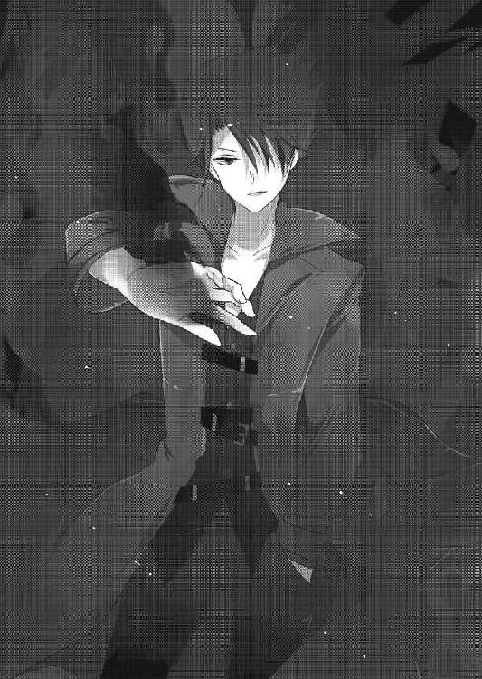
横に立つ心路が光一に問う。
「ああ、貴様と戦う前に俺が倒したシェードの裏切り者だ。あの野郎、どうせ今度もアルルを狙っているに違いねぇ！」
「《幸福夢幻》の能力者の仲間であることは確実か。恐らくこの夢を受け入れた能力者だ。僕らに夢の世界を破壊させぬよう、自ら望んで戦いを挑んできたのだろう」
光一は心路の言葉に、思い当たる節があった。
藤堂の目的は確か、火災で死んだ両親を取り戻すことだ。そのためにアルルを狙っていた。
となれば、この夢の世界を受け入れたことによって、彼は平穏な生活を取り戻したのだろう。両親が死んでいない、真っ当な生活を......。
光一は藤堂に向かって叫んだ。
「貴様それでも俺と戦った男か？ この世界は夢でしかない、幻想だ！ こんなものにしがみついて恥ずかしくはないのか！」
「黙れ虫けら。てめぇに何がわかる。現実世界で足搔こうが俺の両親は帰ってこねぇ。世界も滅ぶ。《一握りの希望》を発動させることだって、もはや不可能だ。......だったら夢でもいい、俺はこの幸せな世界を守るッ！ そう決めたッ！」
腕を振るうと同時に、藤堂の纏っていた炎が竜のように唸る。
彼から焦りや怒りが感じられなかったのは、これが取り戻す戦いではなく、守る戦いだったからだ。幻想だとしても、もはや彼は幸せを取り戻している。
故に、濁りの無い使命感と気魄だけが、藤堂凪の身体を駆け巡っているのだ。
「てめぇらを殺して、俺はさっさと自分の幸せに戻る。またネメシスや現象なんざ全部忘れて──親父とおふくろに親孝行すんだ！」
ギラつく炎が、藤堂の瞳に宿った。
これ以上の問答は無用だった。彼に何を言っても無駄。彼は自分の守るべきもののために戦っている。それを否定する権利は光一には無い。
だがまた同時に、藤堂にも、アルルを守ろうとする光一を止める権利は無いのだ。
故に、あとは己の守りたい者のために戦うのみ。権利や主義主張など全くの無駄。御託はもう必要無いということだった。
「秋雨下がってろ、こいつは俺がやる。フッ、案ずるな一度勝った相手だ。俺にかかればこんな奴──」
「いや、彼は僕が相手をする」
「──へッ、おいおい。貴様にあいつの相手が務まると思っているのか？ あいつは強いぞ、すごく強いぞ。貴様程度の能力者では到底歯が立たんぞ」
キリッ、とか余裕の笑みを浮かべて前に出ようとする。一応藤堂にも心路にも勝利しているため、明らかに、誰が見ても、調子に乗っていた。
が、その自己陶酔も甚だしい見事なまでのウザい驕りは、次の一言で打ち砕かれるのであった。
「......君のネメシスは手の内が知れているのなら全くの無意味だと思うが？」
言われて、光一は自分のネメシスの性能を思い出した。
特性を一つ伸ばせるが、その特性がオリジナルを超えてしまうと、使用不可になってしまうという性能を......。
そして藤堂に勝てたのは、彼のネメシスである《蒼き煉獄》の外見だけを強化させ、トラウマを刺激したおかげだ。つまりもう《蒼き煉獄》は使えない。
「............」
「............」
「............」
「............ふんッ、仕方がない。今回は貴様に譲ってやろう。だが臆したのではない。あいつは俺が相手をするまでもない......ということだ」
へたれここに極まれりだった。カッコつけてはいるが言いながらも脂汗がだらっだら流れていた。
心路は、光一の虚勢を見届けてから、一歩前へ出た。
「君は篠塚アルルを連れてここから逃げろ。そして能登原明日菜と合流──いや」
心路は背後に気配を感じ、自らの言葉を遮って大通りに出るための路地に視線を走らせた。
狭い路地の薄闇から、人影が近づいてくるのが見えた。
どうやら、敵は二人のようだ。
「新手か......」
「退路を断たれた。新手は君が処理しろ」
「言われずともそうする」
光一と心路は、間のアルルを守るようにして、背中合わせに立った。
「コーイチ......」
不安そうなアルルの声。
それを聞いて、彼女の不安を取り除くために、二人は視線を送った。
「──お前は隠れていろ。安心しな、俺が必ず守ってやるぜ」
「──下がっていろ。能登原明日菜との契約により、君は僕が守る」
そして被る、二人の台詞。なんとも言えない空気が、二人を包んだ。
──ビキッ。
音が出るほど血管が浮き出たのは光一だ。
「俺の台詞パクんじゃねぇよコピー野郎！」
「君も同じコピー野郎だろう。劣化品の」
「れっ──誰が付け焼刃だ！」
「誰がどう見ても付け焼刃だ」
「貴様......ッ！」
「なんだ」
仲が悪いのは前からだったが、この非常時にまでやらかす二人の相性はやはり最悪だった。心路は極めて冷静に無視を決め込む姿勢だったが、光一が食ってかかりまくる。
場の空気が、なんだかよくわからないことになり始めていた。
その折、
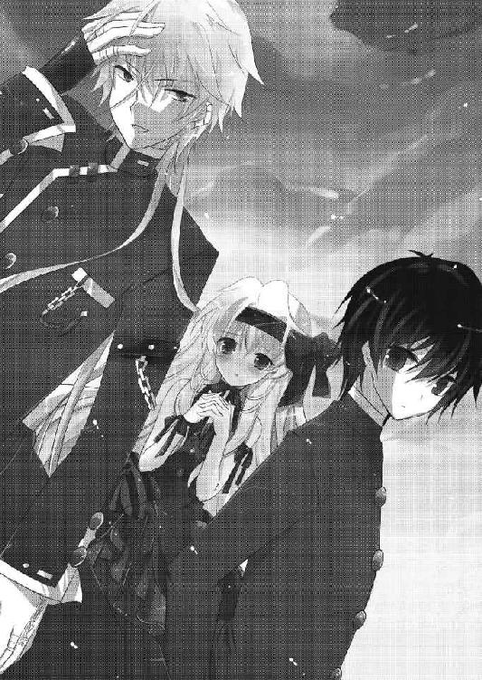
「──やぁやぁやぁやぁ、今日の獲物は無駄に活きのいい鼠と猫が一匹ずつ、かい？」
路地の方から現れた人影が、日輪を浴びて姿を現した。
性別は確実に男だ。高級そうなビジネススーツに、これまた高そうな細身の銀縁眼鏡。さらには首元にカシミヤのマフラーを巻き、ブランド物の革製手袋を両手に嵌めている。
男は大仰に両手を広げ、舞台役者のような仕草でゆっくりと歩いてくる。
なんだか、少しだけ誰かさんの行動に似ている気がしないでもない。
「......お仲間か？」
「あんなキザっぽいのと一緒にすんな！」
心路にツッコミを入れつつ、光一は身構える。
「敵のネメシスは詳細不明だ。やれるのか？」
「ヘッ、望むところだ。薫に鍛えてもらった俺の《付け焼刃》、ここで貴様にも見せてやろう」
「興味ない」
軽く受け流されて、光一は顔をひくつかせた。
二人が相変わらずなやりとりをしている間に、路地から現れた男は、光一から一〇メートル離れた場所で停止し、顎に手を当てた。
「ふむー。この二人が姫の夢を邪魔する不穏分子かね？ 想像していたよりもずっと貧弱そうだ」
明らかに格下と判断し、新手の男が嘲笑を浮かべる。
光一は敵の嘲りに応えるため、バッと腕を広げて戦闘の構えを取った。何故か、「こいつには負けたくない」という同族嫌悪のようなものが光一の中に湧き上がっていた。
敵が見得を切ったのなら、こちらからもだ。
「フンッ、そう言っていられるのも今のうちだ。その驕りは貴様を悔い改めさせることになるだろう......何故なら俺の能力は──」
「それにしてもわざとらしい銀髪と安っぽい手袋だなぁ......君」
「......俺の能力は──」
「ファッションセンスも、これは......なんだ？ 学生服を改造したのかね？」
「.....................。お──」
「ブフッ！ ククク！ ダサいなぁダサすぎるッ！ 私の信条はシンプル・イズ・ザ・ベスト！ 君のその姿は全てにおいて私のスタイルに反逆しているよ！ アーッハッハ！」
「................................................」
度重なるカッコつけキャンセルをくらわされた挙句、光一は自分のファッションをことごとく否定されてしまった。
無論、全力で全否定された光一は......。
「おぉおぉおぃぃぃ能力泥棒ぁぁぁ......俺はこいつを殺る......貴様は藤堂を殺れぃぃぃ......！」
「さっきからそう言っているだろうが。何故いちいち宣言する」
「だぁもうっ、貴様は黙って頷いていればいいのだっ！」
いがみ合いながらも、お互い同時に深く腰を落とし、己の敵を凝視する。
光一は一度だけ端で震えているアルルを見てから、足に力を込めた。
「──行くぞ」
「──おう！」
地を蹴り、敵へ向かって突撃を開始。
こうして、幸福の咲き乱れる偽りの世界での戦いが、始まった。
ショッピングモールの建設現場。
午後の日差しの照りつける閑散とした空間に、明日菜は一人で立っていた。
「............」
周りには誰もいない。いや、何も無い。
五〇名近くいた敵も、放置してあった鉄骨も、地面に生えていたわずかな雑草でさえ、何一つ無くなっていた。
明日菜は虚ろな瞳で宙を見つめ、ぐらりと揺れた自分の身体をなんとか足を踏みしめて支える。
生暖かい風が吹いて、砂が辺りに舞い上がる。
その拍子に、赤い布のようなものが、砂と一緒に風に飛ばされた。
あれは......雨鶴来高校の制服のリボンだった。
「............」
明日菜は額に手を当てて、冷たく凍てついてしまった自分の心を暖めようと肩を抱く。
──みんな、消えた。
──滅ぼした。
──私が殺した、全て。
──五〇人の能力者も、《幸福夢幻》の少女も。
────澄波、優も。
「..................は、は」
意識していないのに、口から乾いた笑いが零れた。
何故笑ったのだろうと考えてみると、結論はすぐに出た。
誰もいなくなったこの場所に何一つ感じなかったから、笑ったのだ。
涙も出ない。嗚咽も出ない。出てくるのは獣の息遣いのような苦しげな笑い声だけ。
明日菜は、この心の内の虚無が通りすぎるまでの時間を耐えるために、空を仰いだ。
そして、
「......アル、ル」
守らなければならない少女の名前を、呼んだ。
──刹那。
「──もぅ、言ったじゃなぁい？ 夢の世界で人は死なないって」
背後に、あるはずのない気配を感じた。
明日菜は虚無を振り払って、身体を反転させようとしたが、もう遅かった。
するりと伸びてきた白い腕が、明日菜を後ろから抱きしめたのだ。
「殺した......はず......！」
「ふふ......私は殺せると思ったのねぇ？ ざぁんねん。この世界に例外は無いのよ？ たとえ創造者である私でも、ね？」
イリーナは明日菜の身体に、手を蛇のように絡み付けていく。
腰、腹部、あばらを通り過ぎて、最後は心臓のある左胸を強く鷲摑みにされる。
明日菜の顔が、屈辱に微かに歪んだ。
「聞こえるわぁ......あなたのハートの音。苦しい、寂しい、痛いよ、って泣いている音。そぉ......現実世界でそんなに辛いことがあったのねぇ」
「......っ！」
「いくら否定しても無駄よ？ あなたはさっき、《一握りの希望》を持つあの子の名前を呼んだ......それが証拠。あなたが幸せを望んでいる証拠」
「お前......何故知っている!?......っ、アルルの力が目的か......！」
歯を嚙み締めて、明日菜はイリーナの腕を解こうとするが、意識が揺らいでいる今は思うように力が籠らない。
こんな腕は、明日菜の力ならば簡単に破壊できる。けれど、もうネメシスを使うわけにはいかなかった。今あの力を使えば、完全に見失ってしまうから。
「この世界であの子を殺しても《一握りの希望》は発動しないわ。だからそんなこと無意味なの。それに、私はあの子を幸せにさせてあげるつもりもない。殺してなんかあげるもんですか......」
「......ならば......どうしたいというの」
「私の目的は、あの子以外の世界中の人間を幸せにすること。この世界で、一緒に幸せに過ごすこと。でもあの子はダメ──絶対にダメ。みんなが幸せに過ごしているのを見ながら、誰にも認識されずに世界が滅ぶのを待ってもらう......」
「お前とあの子に何の関係があるッ!?」
「関係なんて無いわ。ただ気に入らないだけ。幸せにしたくないだけ。よかったわぁ......あなたがここまで出てきてくれて。あのアパートで戦いになってあなたの《怪物》を使われでもしたら、あなたがあの子を幸せにしちゃうものねぇ？」
イリーナのその一言に、明日菜の怒りが爆ぜる。
そして今度こそ振り払おうと力を込めた、次の瞬間。
明日菜の胸にイリーナの腕が、ずぶりと深く沈んだ。
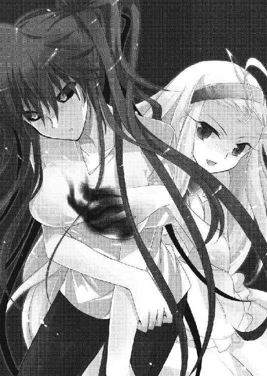
「────!?」
「んふ、もう無理しなくていいのよ？ もう苦しまなくていいのよ？......さあ、求めなさい。あなたの、あなた自身の幸せを......！」
視界が暗くなり、そこかしこの光が消えていく。意識ははっきりとしているのに、周りのものが搔き消えていく。
闇に......堕ちる。
気がつけば、明日菜は闇の中に一人で立っていた。
否。
一人ではない。仄かな明かりが、すぐ目の前にあった。
それは人の形をしていた。
人形は明日菜の方を向いて、顔をじっと彼女に向けながら、佇んでいる。
その顔は、明日菜のよく知っている顔で──
その姿は、明日菜の幸せそのもので──
「───────あぁ」
明日菜は、目の前のソレを見て、心が安らぎと死を同時に得たように感じた。
瞳から、涙がこぼれていく。
途方も無い悲しみと一握りの幸せが、空洞になった胸を満たしていく。
「ああ......」
全ての感情が同時に己の中に流れ込む。
その原因となるのは、目の前の人形で。
明日菜はソレに手を伸ばそうとして、そして──
「あぁ、ア、ああああああああああああああああああああああああアアアアアアアアアアアアアアアアアアアアアアアアアアアアアアアアアアアアアアアアアアアアアアアアアアアアアアアアアアアアアアアアアアアアアアアアアアアアアアアアアアア────ッッッッ！」
──────触れる寸前に、狂気を発芽した。
入植試験 凪
凪
【回答者７ 藤堂凪】
例１
炎の中に、俺は立っている。肌を焦がす赤い炎に、俺は悲鳴を上げる。
悲鳴と肉の焼ける臭いの中、自分は両親の姿を捜す。ただ助けてほしくて、大丈夫と言ってほしくて、愛する人々を捜すために炎の中を歩み行く。
その炎の中に、両親はいた。
枯れ木のように燃えさかるソレを見た瞬間、その光景が悪夢となって俺の心に焼き付いた。
例２
両親二人の間で手を繫ぎ、俺はデパートの中を歩く。
ブランコして、と頼むと、手を強く握って両親二人が俺の身体を持ち上げてくれる。
レストランでご飯を食べて、屋上の遊園地の乗り物で遊ぶ。
ゴーカートから両親に手を振ると、笑いながら二人は俺に手を振り返してくれた。
そして家に帰る。暖かいお袋の料理を食べて、親父と風呂に入る。
夜は早くに寝て、朝も早くに起きる。
そんな日々が、ずっと続いていく。
そしていつか俺は家を出て、結婚してガキを作って、お袋と親父に会いにいく。
初孫にはしゃぐ親の顔を見ることが、俺の幸せだ。
※藤堂凪さん。あなたはこの辛い現実と、幸せな夢、どちらを選びますか？
藤堂「もう現実で取り戻すことができねぇなら......俺は」
［辛い現実］
［幸せな夢］←
Battle ５ 不本意な共闘
戦闘が開始されると同時に、心路は真上へ跳躍した。
標的はアパートの崩壊した部屋に佇んでいる藤堂凪だ。シェードの元隊員だと光一は言っていた。訓練された能力者ということは、そこそこの手練だろう
心路が現在使用しているネメシスは《超越者》。筋力、強度、体重が二〇倍の状態に身体の性能がアップしている。
強化された筋肉と骨格によって実現した驚異的な跳躍力で、心路は崩壊した部屋へ直進。
最初の一撃をお見舞いしようと、敵能力者に迫った。
大振りに腕を引き、照準を藤堂に合わせる。
しかしその時、心路は見た。
藤堂が両腕を広げたのを。
微かな殺気を感じて、心路はすぐに顔の前で腕をクロスさせた。
「シフトチェンジ──《不屈の卵殻》」
「消し炭にしろ──《蒼き煉獄》ァァ！」
防御特化のネメシスへ変更し、バリアを展開。無数に重ね合わされた強固な膜が心路の身体を守る。
同時に、不気味な音を立てて心路の周りを蒼炎が覆った。
（──放射に加え、発火能力か。しかし、これは）
《不屈の卵殻》のバリアは相当なことが無い限り破られることはないはずなのだが、心路は確かに膜の砕ける音を聞いていた。
二〇枚近く重なっている膜は、今の発火で確実に四枚はもっていかれた。想定よりも遥かに威力が高い。元から強力なネメシスなのか......それとも。
心路は炎の中で、敵対する藤堂を見た。
迷いの無い瞳。確固たる意志を感じさせる形相。
（感情による強化か......）
心路はアンチテーゼのせいでネメシスの威力に強弱をつけることができないため、猛っている相手には多少の不利が生じる。
つまり心路が《蒼き煉獄》をコピーして使用したところで、相当使い方を考えなければ勝利することは難しいということだった。
心路は膜を張ったまま着地。同時に藤堂もアパートから飛び降りて、地面に着地。着地時に衝撃を緩和させる独特な方法を取っているところを見ると、肉体もそれなりに鍛えているのだろう。
藤堂は即座に立ち上がり、再び心路と対峙。
「能力を切り替えたところを見ると、てめぇが本物の能力泥棒だな。......最強だかなんだか知らねぇが、こっちも負ける気はねぇんでな。全力でいかせてもらうぜ」
藤堂は固まった決意を闘気として外に放出するが如く、蒼い炎を身に纏う。
心路は、極めて冷静に藤堂と向き合った。
「......一つ気になることがあるのだが」
「なんだ。敵を前にして質問なんかしてんじゃねぇ。時間稼ぎか？」
「いや、さきほど君は、《一握りの希望》を発動させることはもはや不可能だ、と言った。それは何故だ？」
「あぁ？ そのまんまの意味に決まってんだろうが」
「解せないな。そこに《一握りの希望》所有者はいるというのに、何故君は彼女を狙わない。僕らに構っている暇があるなら、真っ先に彼女を捕らえて逃走するべきだろう」
当然の疑問だ、と心路が藤堂に問う。
藤堂は、舌打ちをして心路に答えた。
「この世界であの女を殺しても、意味がねぇってこった。夢の中で人を殺しても、リアルで死ぬわけじゃねぇ。殺してもただ幸せな夢に囚われるだけで、本当に殺せるわけじゃねぇんだ」
「......なるほど。合点がいった。君達の目的は篠塚アルル単体ではなく、僕ら全員の殺害......全員を夢に溺れさせることか」
「ケッ、とにかくてめぇはここで俺に倒されるんだ。こっちの目的なんざ聞いたところで何にもならねぇ──そうだろうおいッ！」
会話を遮るように、藤堂が両腕から竜巻のような炎を発射。
心路の《不屈の卵殻》の膜を直撃。
再び、割れるような音と共に膜が剝がれていく。
「............」
心路は、防御膜が剝がれていくというのに、何の焦りも感じずに脳を回転させていた。
正直に言えば、敵はさほど心路にとって脅威ではなかった。確かに優れた能力者だが、強敵、というほどではない。もっと言えば、あの程度の能力者ならば、心路のストックネメシスである《至福千年》を用いれば簡単に消し炭にできるのだ。
元々バランスを考えて能力はストックされている。
防御特化の《不屈の卵殻》
包囲戦闘用の《誘雷針》
遠距離戦闘用の《至福千年》
近距離戦闘用の《超越者》
などなど、他にも汎用性の高いネメシスは持ち合わせている。どれも長所と短所が存在する能力だが、使い分ければそれぞれを補える。
この中でも《至福千年》の威力は絶大だ。フィクションに登場する荷電粒子砲のような特大レーザーを放つことができる。精神が高揚していればさらに威力を高めることができる。しかし今の心路は感情が希薄なため、能力に強弱がつけられない。威力は常に一定。アパートを取り囲んでいるビルを倒壊させることができるほど強力だが、それ以上弱めることも強めることもできない。
故に、この状況で使うわけにはいかなかった。今は、護衛しなければならない少女がいる。広場に打ち捨てられたコンテナの横に隠れて、光一の戦いを見守っている少女、アルル。今《至福千年》を撃てば、倒壊したビルに彼女を巻き込みかねない。《誘雷針》も同様に、彼女にまで電撃が届いてしまう可能性がある。
（......こういう時は、煩わしいと感じるべきなのだろうな）
心路は、今まで誰かを守る戦いなど一度も行ったことがなかった。自分を守り、相手を砕く。それだけのための強力なネメシスを数多く集めてきたのだ。
周りを巻き込まない。誰かを死なせない。そういった戦いは、専門外だった。
しかしこのままではどん詰まり。一方的に攻撃されて終わってしまう。
とにかく敵の分析が最優先だ。
（問題は発火能力だが......）
放射は肉眼で確認してからでも回避できるが、発火はそうもいかない。
敵は視界に映ったものに照準を合わせて発火させているはず。視線を追えば回避は可能だろうが、敵のネメシスは連射性に優れており、放射と併せて使われてはいずれどん詰まりになるだろう。なかなかに隙がないネメシスである。
（──ならば）
心路は瞬時に動いた。
残り少ない膜を展開したまま、藤堂へ向けて突進する。膜が砕けるのは気にしない。ただひたすら真っ直ぐに進む。
そして距離が五メートルまで近づいた瞬間、
「シフトチェンジ──《超越者》」
能力を即座に切り替え、敵の上へと跳躍した。
「──させねぇ！」
藤堂は一瞬驚きの表情を見せるも、膜が解除された瞬間に放射を実行。
心路の身体を炎が包む。
──が、
「なっ！」
炎の中から飛び出した生身の心路を見て、藤堂は絶句した。《超越者》の身体強化は、一度くらいの炎ならばたいしたダメージは入らない。
心路は跳躍をそのままに藤堂の真上を通り過ぎ、背後へ着地。
そして、振り向きざまに渾身のブローを放つ。
──ッパン！
命中せず。拳は服を掠っただけだった。
「......くっ！」
藤堂はすぐに身体を反転させて、心路から距離を取った。
発火の射程範囲の視界外からの奇襲だったが、結果は失敗だった。
「──ハッ！ 俺の背後を取ろうとしたのはいい判断だが、今のが最後のチャンスだったなぁ！ 二度はねぇぞ！」
藤堂はバック転を繰り返し、瞬く間に心路から離れていく。
そして──
（......ビルの壁を背にしたか）
藤堂は壁にぴたりと背をつけて、こちらを向いていた。
あれでは背後に回れない。
「これでもうてめぇに手はねぇだろ......俺の《蒼き煉獄》に隙はねぇ！」
休む暇もなく、藤堂が放射と発火を繰り出してくる。
心路はなんとか《超越者》の身体強化によって、回避と防御を繰り返した。
されど長くは保たない。
心路は追い詰められても、やはり極めて冷静に頭を働かせる。
（さて、どうするか）
淡々と思考しつつ、心路は光一の方を見た。
後ろで心路が超絶バトルを開始した直後、光一も同じく、スーツの男と対峙していた。
「──ではまずは名乗らせていただこうッ。私の名は九龍政宗！ この世界の姫の御身を守る騎士であるッ！」
「──フッ、俺の名を頭に刻み付けるがいいッ！ 俺の名は──」
「あいやいやいや君の名は必要無い。何故なら君は私に敗北することが決まっているからねッ！ 覚えておいても無駄なのだよ！ ハッハッハ！」
「..................」
............。
イラッ！
「さあ、どこからでもかかってきたまえ。特別に下賤な君に先手を打たせてあげようッ！」
敵は余裕ぶっこいた笑みを浮かべて、両手を広げながら光一の攻撃を待っていた。まるで佐藤光一を、さらにタチを悪くしたような男である。
完全に、光一は舐められていた。
「こ、こ、こ、この、この、く、くそ、糞、眼鏡ぇぇぇぇえぇ......っ！」
悔しすぎると滑舌が微妙になるという癖を持っている光一は、盛大に嚙み嚙みになりながら憎々しげに眼鏡スーツ男、九龍を睨みつけた。
精神を集中させ、己の中の異能を引きずり出す。
頭の中のカートリッジにネメシスをぶち込む。
（落ち着け、薫との訓練を思い出せ。能力の性能の伸ばし方はある程度身についたはずだ。その能力を理解し、イメージを強固にすることが一番重要──よし！）
ここ一ヶ月程度でどれほど自分が強くなったかはまだわからないが、今の光一がストックしているネメシスは、多少は使えなくもない状態になった、と言えなくもなかったりする。
ただし一番問題なのは、光一自身が自分の力を過信している、ということだった。
「行くぞ！ 糞眼鏡！」
光一は地面を思い切り蹴って、九龍に向かって突進する。
雄たけびを上げた獣のように、光一は九龍の懐めがけて飛び込もうとした。懐に入ればこちらのものだと......そう信じていた。
その思惑は、すぐに崩されることになるとも知らずに。
「──バカだな君は。こんな安い挑発に乗って私の間合いに入るとは」
すぐ目の前まで接近した瞬間、九龍のキザったらしい表情が崩れ、冷徹さと歪さを併せ持つ狂笑に変化した。
この一瞬で自分が敵の術中に嵌ったのだと理解するのは、光一には不可能だった。
ボトッ......。
光一は、何かが、地面に落ちたような音を聞いた。
「............？」
思わず足を止め、音のした地面を見る。
そこには、指輪やら鎖やらがついた、人間の左腕が転がっていた。
それが自分の腕だと気づくのに、時間はいらなかった。
「う、ぐぁぁ──」
激痛に悲鳴を上げる前に、傷口を押さえようと右手を切断部に伸ばそうとする。
きっとこの後、血が噴き出して、酷いことになる。そう思うだけで、血の気が引いた。
「──ぁ？」
ところが、右手が触れた箇所には、
地面に転がっているはずの左腕がついていた。
「あ......れ？」
もう一度地面を確認するも、つい一秒前まで転がっていた腕はどこにも無かった。それ以前に、左腕は切れていない。混乱だけが頭に残った。
「クク、カカカッ......今のは幻覚でもなければ、錯覚でもない」
眼鏡を指で押し上げながら、九龍が光一に向かって、ゆっくりと歩き出す。幻覚でも見たように頭の中がこんがらがってしまった光一は、自然と後ずさった。
「君の左腕は、確かに一度切断されたよ」
「貴様......今、俺に、な、何を」
狼狽する光一を見て、九龍は嬉しそうに口元に弧を描いた。
「私のネメシスはとても奇妙な性能をしていてね。見えない刃によって対象を傷つけ、切断する。たとえダイヤモンドであろうと、地球外の物質であろうと、なんでもだ。しかし、切断した部分は一瞬で治癒してしまうのさ。......そう、たとえば、こんな風に」
足を止め、九龍が光一を間近で見下ろした。
「悲鳴を啜れ──《切り裂きジャック》」
九龍がネメシスの名を口にしたのと、光一の身体を無数の見えざる刃が襲ったのは同時だった。
「ぐっ──ガッ！ イぎっ──ぬぁあ！」
指、前腕、脛、脇腹、頰。連続で休み無く、ナイフで斬りつけたような痛みが走る。
血は噴き出しては一瞬で消え、傷口はグロテスクに開いたかと思えば瞬く間に塞がっていく。
あるのはただの、一瞬の激痛と、記憶の中に残る痛みだけ。
光一の身体は、徐々に後ろへと追いやられていく。
「キキキ、クカカカ」
奇妙な笑い声を発して、九龍は指揮者のように腕を振る。そのリズムに合わせて光一の身体は切り裂かれては回復を繰り返した。
「まだだよまだまだ、私の能力はこの程度ではないよ」
興奮した様子で九龍が腕を振り上げる。光一にはどこから刃が飛んでくるのか目視することはできない。為す術もなく身に受けることしかできない。
そしてかつて無い激痛が光一を襲う。
激痛、否。
これは──死だ。
「── っ ぁ ──」
首を、首を切断された。胴から首が、一瞬離れた。
自分が一瞬死んだことを認識して、光一は地面に膝をついた。
「は......はぁ......はっ......!?」
瞳孔が正常に戻って、瞳から涙が溢れてくる。
ブラックアウトした視界。思考すら虚無に消えた一瞬。光一は生きながらに、死を感じてしまった。恐ろしさに身体が震えた。
反して九龍は口からよだれを垂らしながら異常な快楽に身悶えた。
「あぁ、あぁあ、あぁ、たまらない、苦悶すら超えた嗚咽のようなひきつったような最後の、最期の吐息がたまらない、胴から首が離れた時の啞然とした表情がたた、たまらない」
そこにいる男は、もはやただの異常者だった。
「くふ──くひ、聞いてくれ。聞こえていなくても聞いてくれ。私はね、人を切り裂くのが大好きなんだ。現実の世界ではもう、数え切れないほど殺してきた......ヒヒッ」
九龍は上機嫌なのか、えらく饒舌に語り始めた。
光一は辛うじて顔を上げて、狂った男を睨みつける。
「私がこの力を手に入れたのは現実での殺人に虚しさを感じ始めた頃だった。この能力は私にとってまさに理想だった。獲物が死ぬ瞬間を何度でも堪能できる。こんなに私にふさわしい能力はない......！ っ、だが、アンチテーゼは私に対して常に非情だった！ このネメシスで相手を傷つけた一〇時間後に、与えた分と同じ痛みが私を襲うのだ......これほど酷い話はないだろう!? これほどの私の美学への裏切りはないだろう!? 私は......絶望したっ......いっそ自害しようとも考えた......！」
「............」
「そんなある日だ。この世界へやってきたのは......ここは素晴らしい。なにせネメシスを使ってもアンチテーゼが存在しないのだ。何度切り裂いても......ヒヒッ......私に痛みは返ってこない！ まさに私にとっての理想郷だよ。だから私は、この世界の創造主たる姫様に忠誠を誓ったのだ」
「............姫？」
「創造主、眠り姫のイリーナ・ベラヴィナさ。彼女はこの世界を創造する代償として現実世界では永遠に眠り続ける定めにあるのだ。悲劇だろう？ 彼女は私と同じように、アンチテーゼによって苦しめられていた。ああ麗しのイリーナ......！ 私は彼女を守ると神に誓ったのだよ！......この世界......私の悦楽を守るために！」
宣言して、拳を震わせながら、自分の誓いに感涙する九龍。
本人にとってはとても悲劇的で、とてもロマンチックな話だったのだろうが、光一からしてみれば狂人の戯言だった。
（くそ......これじゃ......近づけねぇ。あんな痛み......もう二度とごめんだ！）
首を切られた時の感覚が蘇り、震えが戻ってくる。今もなお、光一の身体は無意識に九龍から距離を取ろうとしていた。それでも、なんとか意志によって足を踏ん張る。
アルルが見ているのだ、こんなところで逃げていられない。
隠れているアルルを見ると、彼女は今にもこっちに飛び出してきそうな顔をしていた。悔しそうに唇を嚙んで、何もできない自分を心底憎んでいるような顔だ。
だから光一は、アルルに首を振ってから、いつもの余裕の笑みを浮かべてみせた。
完全に虚勢だけれど、アルルを不安にさせるわけにはいかないのだ。
と、光一が精一杯強がっていると、突然背後に何かがぶつかった。
「──付け焼刃、聞きたいことがある」
心路だった。彼は藤堂の攻撃を《不屈の卵殻》でガードしつつ、光一のそばまでやってきたのだ。
「君は、敵の視界を奪うネメシスは持っていないか？」
「こっちはそれどころじゃねぇ......なんだ急に......」
「手を貸してほしいと言っている。もしあるのなら、僕も君に手を貸せる」
これまた意外な申し出だった。
「見れば、苦戦しているようだ。君の能力はピーキーすぎるから当然と言えば当然か」
「......う、うっせ」
直後、炎がうねった。
心路のガードに使っているバリアは、もう何枚も残っていなかった。藤堂は遠距離から何度も何度も放射を浴びせてくる。防御重視のネメシスと言っても、もう長くは保ちそうになかった。
「貴様だって、人のことが言えないだろうっ」
「否定はできないな。面倒なことに」
珍しく素直にこっちの指摘を受け入れたのを聞いて、光一は腑に落ちないような微妙な顔をしてから、目を線にして胸の前で腕を組んだ。
「答えろ。あるのか、無いのか」
「......ふんっ、仕方ねぇなぁ！ あるぜ、視界を奪うネメシス！」
助けてほしいと思ってるのは自分も同じなのに、意地を張ってぶっきらぼうに言う。
こんな奴とタッグを組むなんて虫唾が走るが仕方ない、という気持ちが表情からにじみ出ていた。
心路はその返答を聞いて、光一の耳元で作戦を伝えた。
「いけるか──」
「──当然だろう！」
二人は頷きあってから、それぞれの役割を行うべく、精神を研ぎ澄ました。
光一はネメシスを頭のカートリッジに叩き込み、指先に力を込める。
「フッ──この日のために残しておいたとっておきだ。俺の真の力はこいつが」
「いいから早くしろ」
「──だぁもううっせーなぁ！ 俺はこうしないと調子が出ないのだッ！」
むしろ妙な台詞を吐いている時はやられフラグだということを、少なくとも光一の周りの人間はみんな知っている。
「いくぜ《付け焼刃》！ 発現せよ──俺の《紫煙地獄》！」
力を込めた指を弾き、発動する光一の劣化ネメシス。
《紫煙地獄》とは、薫との訓練中にシェードの隊員の一人からコピーさせてもらったネメシスの一つである。本来の性能は、無色透明の毒性の強い煙を辺りに充満させ、短時間で敵を戦闘不能にするという恐ろしいネメシスだ。しかしこのネメシスは味方を巻き込む危険性が非常に高いため、使用できる時が限られている。
そして、光一バージョンの劣化《紫煙地獄》の特性は──。
ぶッ。
──黄色くてただ臭いだけの煙が発生するという、若干下ネタチックな性能だった。
「くさっ！」
自分で発生させておいて、あまりの臭さに光一が涙目で鼻をつまむ。
だが、効果は覿面だった。辺りは黄色い煙に包まれ、ほぼ視界ゼロの状態だった。
今回、光一が伸ばした《紫煙地獄》の特性は、効果範囲だった。オリジナルを超えてこそいないが、範囲のみを伸ばしたことによってアパート周辺の空間は煙が充満していた。ついでに空間がビルとビルに囲まれているのも相まって、煙は逃げ場が狭すぎて非常に密度が濃くなっていた。
ひとまず光一のすべきことは終わった。
続いて、《超越者》発動中の心路がすべきことは、
「──跳躍」
光一の首根っこを摑んで、空高く飛び上がることだった。
地面を粉砕して、心路が光一を連れて高く高く舞い上がる。途中、光一が女のような悲鳴を上げていたが、心路は気にしない。
一〇メートル以上上昇すると、心路と光一は黄色い煙を抜けた。
「ちょちょちょちょちょ！ たけぇ！ 高すぎるッ！ 死ぬってこれ！」
何か聞こえた気がしたが、心路は気にしない。
《超越者》が実現させている筋力二〇倍の力によって、光一を目標地点に向かって投げ飛ばした。
「ぎゃああああああああああああああああ！」
全て作戦通りである。
落下する光一は叫びつつもすぐさまネメシスをチェンジさせる。
「っっっだぁぁぁ──《超越者》発動！」
心路の十八番ネメシス、《超越者》。
この劣化バージョンは、強化選択が一つしかできない。おまけにオリジナルから性能を受け継いでいるのは体重が一〇倍になる、という部分だけだ。
普段ならば自分の体重が重くなり、ほとんど動けない状態になってしまうだけなのだが、この状況下ではむしろ好都合な劣化だった。
動く必要はない。ただ倍加した体重で落ちればいい。
心路が投げた方向、墜落地点には奴がいるからだ。
「ゲホッゲホッ、何だねこの煙はッ！ せっかくいかに九龍政宗のネメシスが素晴らしいかを力説しているというのにッ！」
目標は、煙の中でずっと演説していたらしい九龍政宗。
光一は、憎き変態目掛けて足を前に突き出した。
「滅殺流星脚ァァァァァ!!」
「──がッッッッッッ！？！？」
その微妙なネーミングセンスの蹴りは、見事なまでに華麗に九龍の背中に直撃した。
心路は光一が九龍に命中したのを確認して、自分も己が敵を捕捉する。
下から上は見えずとも、上から下の光景ははっきりと見えた。
「目標捕捉」
心路は煙の中で彷徨っている藤堂に攻撃の照準を合わせる。
「くそったれ！ どこだ!? どこへ行きやがった！」
焦りに焦っている藤堂は、辺りに炎を撒き散らしていた。心路が頭上にいるとも知らずに。
自分の幸せを奪われまいと必死に足搔いている藤堂の姿を、心路は視界に捉えていた。
が、彼が同情や哀れみを抱くことはない。相手にどんな理由があろうとも、どんなに悲しい過去があろうとも、心路の心は動かない。
彼に容赦という言葉は──存在しないのだ。
「終わりだ」
次の瞬間、心路は藤堂の上空から、今までの分を倍返しするほどの勢いで流星のように打撃を放った。
稲妻のような拳が藤堂を襲ったのは、その直後だった。
「カ──ハ......ッ！」
アスファルトの地面が砕けまくる轟音が響く。
命中したかどうかを確認する必要もない。藤堂は上空からの砲撃に気づけず、そのまま潰れて地面と同化していた。
心路は高所から五点着地で衝撃を緩和させて地面に降り立った。
一方光一は、変態九龍と一緒に地面に寝そべっていた。
「......死んだか？」
「──死んでねぇ！」
心路の一言に反応して、光一が即座に起き上がった。心路としてはただ確認したかっただけなのだが、光一は起き上がるなりズカズカと接近してくる。
「き・さ・ま......ッ！ 俺を本気で投げたな!? きちんと当たったことは誉めてやらんでもないが、あのまま俺が自分で機転を利かせて能力を解除していなかったら、自重と衝撃で確実に死んでいたぞ！」
「投げると言ったはずだ。そして君は了承した」
「俺はてっきりシフトチェンジ後に投げると思っていたのだッ！ 《超越者》使用中に投げるなんて思ってもみなかったわボケ！」
「そうか」
「そうか、で済ませるなッ！」
勝利したというのに、二人は相変わらずだった。
奇襲者を撃退し、一旦は危機を脱したが、まだ現状は把握しきれていない。明日菜と優も帰ってきてはいないし、敵の増援の可能性もある。
光一は、ひとまず安全な場所を探して、アルルをそこに避難させようと思った。
「アルル、もう大丈──!?」
アルルに呼びかけ、安心させてやろうと笑顔で振り向いた時、光一は新たな危機を目の当たりにする。
「──あらあらみなさん、おそろいね」
アルルの首にナイフを突きつけた、白い少女が立っていた。
注意力が足りなかった。どうして接近に気づかなかったのかと、光一は己を悔いる。
心路にとっても、驚きはしなかったが予想外な展開だった。接近されていたのに、まるで気配が無かった。テレポートでもしない限りあり得ないと、心路は冷静に考える。
白い少女、イリーナは幽霊のように佇みながら、光一と心路に微笑みかけた。
「残りはあなた達だけよ。あなた達二人が幸せを受け入れれば、この世界は完璧になる」
光一は直感で理解した。
この女が、九龍政宗の言っていた、姫。
つまりは、この世界の創造者。
「アルルを......放せ！」
「お断りするわぁ。この子には孤独でいてもらわないと、私の気が済まないんだもの」
クスクスと、イリーナは不気味に笑って目を閉じた。
「あなた達はあの怪物さんと同じなのね。どうあってもこの世界を受け入れない......私の世界を認めない」
そして唇に指を当てて、線を引く。
「やっぱり、みんなの夢の集合体だと、ネメシスの効果が薄いのねぇ。それなら、怪物さんと同じに、個別の夢へ誘ってあげましょう。ところで......ねぇ、お二人さん......」
イリーナは指を唇から離して、光一と心路を指した。
刹那、
「──二重夢って知ってる？」
クスッ......という小悪魔的な笑い声が、夢の世界の中で反響して、鐘の音のように響いた。
途端、光一達の見ていた景色が揺らいで、ビルが、アパートが、あらゆる建物が崩れていく。崩れた瓦礫は下に落ちるのではなく、空へ上昇していった。
「!? 何をした貴様！」
声は世界の崩壊の騒音にかき消されてイリーナに届きはしなかった。
足場が崩れ、肉体が精神となって闇に堕ちていく。
光一はその中で、敵ネメシスの発動の瞬間を垣間見た。
「良い夢を──《幸福夢幻》」
入植試験 明日菜
明日菜
【回答者８ 能登原明日菜】
例１
黒い。
黒い渦が一瞬だけ視界を妨げ、次の瞬間世界は赤く染まっていた。
終焉を予感させる目の前の光景は、その場に佇む私の涙を誘う。
招かざる時を迎えてしまった世界は、ただ滅びに向かうのみだった。
その地獄の中心で、私はダレかの細い首を絞めていた。
「ごめん......」
やめろと叫ぶ。
消えていく自分自身を必死に支えようとしながら、もがいてあがいて脳を搔き毟る。
「ごめん......ね」
やめてくれと叫ぶ。
誰か私を止めてくれ。誰か私を殺してくれ。誰でもいい、自分の存在を消し去れるのなら、私は全てを捧げよう。
けれど救いは訪れず、世界は終わる。
己を憎み、世界を憎み、怨嗟の果てに自分が見たものは、たった一つの少女の笑顔だった。
「ごめんね...... 」
発狂する。世界が発狂する。黒い渦が全てを覆い尽くし、人々の悲鳴が、どこか遠いひぐらしの声のように自分の耳に届いた。
最後に聞こえたのは、世界の断末魔。
初めから、救いなどどこにも用意されてなどいなかったのだ。
初めから、為す術などどこにもありはしなかったのだ。
私に世界は救えない。私に彼女は救えない。
そんなこと──初めから、わかりきっていたことなのに。
どうして......私は......。
例２
荒廃した世界の中心を、私と少女は歩いて行く。
食糧も水もあとわずかしかない。生き残った人間も、最近はあまり見かけなくなった。世界の滅びはもうすぐだった。
けれど私は悲観などしない。こんな世界に未練などない。どうなろうと、知ったことではない。
今はただ、隣にこの子がいればいい。
世界で唯一、私に笑いかけてくれる少女。
彼女を守ることのできる自分。
それだけあれば、私は、他に何もいらない。
※能登原明日菜さん。あなたはこの辛い現実と、幸せな夢、どちらを選びますか？
明日菜「私に、幸せを受け入れる権利は無い」
［辛い現実］←
［幸せな夢］
Last battle 幸福な夢よりも、過酷な現実を
目を覚ますと、光一は歓声の中で、人々の中心に立っていた。
周りに見える風景は、倒壊したビルの瓦礫と、歓声を上げながら喜びに喝采する人々だけだ。
「............？」
その中心に、光一はいた。
何でだっけ？ と記憶を探ると、すぐに思い出せた。
「そうだ......俺、『導きし者』の持ち主を倒して、世界を救ったんだった」
足元を見ると、顔がよく見えないけれど、なんだか魔王みたいに角の生えた人間が横たわっていた。
そういえばこいつが持ち主だったっけ、と納得する。
光一はいい気分になって、周りのギャラリーに手を振った。
一斉にギャラリーが沸き立ち、地鳴りのように歓声が響く。
「フッ──他愛もない。天使の力など、我が奇跡の前には赤子同然と知れ！」
若干魔王サイドっぽい言い回しだが、決め台詞を言うと、さらにギャラリーが沸いた。
光一は、一瞬顔をほっこりとさせて、すぐにキリリとどや顔を決める。
すごくいい気分だった。まさに理想の自分だった。
これ以上無いほどの、夢のような展開だった。
「素晴らしいな、この世界は！」
────本当か？
「............」
囁いたのは、誰だろう。
不思議に思って胸に手を当てると、その声は自分の中から聞こえてきた。
妙な焦りが心を急かす。忘れてはいけなかったものを、忘れてしまった気がして。
............なんだろう。
..................なんだっけ。
光一は、いても立ってもいられなくなって、突然走り出した。
人ごみの中に突っ込み、自分に寄ってくる人々を押しのけて、必死に何かを捜して走る。
人ごみを抜けて、瓦礫の中へ。戦いのせいで荒廃してしまった街へ。
難民キャンプを捜し回り、能力者同士の大戦が行われた野原を駆ける。
そして、走り続けた果てにあったのは、
「......雨鶴来高校」
枯れ果てた街路樹が並ぶ昇天坂の先に、廃墟と化した校舎が見えた。
光一は、懐かしい想いから、ひび割れた坂を上って、いつもの通学路を進んだ。
「──佐藤っ！」
名前を呼ばれて振り返る。
坂の下に、背の低い、よく見知った少女がいた。
「ああ、薫か。おはよう」
いつの間にか光一はいつものお手製長ランを着ていた。坂道も綺麗になって、並木も桜の花が満開だった。
薫が光一に追いついて、隣を歩く。
「薫ちゃ～ん......さ、佐藤さ～ん......ままま、待ってくださぃぃぃ」
薫の後ろから、兎乃もやってきた。周りの生徒からおっかなびっくり隠れながら、ゆっくりゆっくりついてくる。
兎乃の対人恐怖症を治すために、三人で登校することになった。
天気がよくて、光一は歩きながら空を見上げて、肺いっぱいに空気を入れた。
今日も平和だった。
「光一」
「おーい！ 光一ー！」
「うむ。いい朝だな」
いつも通り薫と口げんかをしていると、後ろから幼馴染の三人が追いついてきた。
広美に一樹にチダイ。見飽きた顔のバカ三人。
一樹に頭をくしゃくしゃにされ、チダイに寮の掃除当番を宣告され、広美に意味も無く暴言を吐かれる。いつも通りだった。
みんなで登校。平穏で、退屈で、それでもそこそこ楽しい日常。
大切な人達。
それから──
「コーイチっ」
坂道の先に、金髪碧眼の少女が、光一がくるのを待っていた。
「────あ」
光一は、一瞬何かを思い出しそうになって、声を上げた。
「......コーイチ？ どうした？」
少女......アルルが、心配そうに顔を見てくる。
光一は、首を傾げた後、アルルにこう尋ねた。
「なぁ、アルル」
「んー？ なんだ？」
「俺は......お前をちゃんと救えたのか？」
光一の問いに、アルルはキョトンとした。
けれどすぐに、いつもの笑顔を浮かべて、アルルは答えた。
「当たり前だろうっ。コーイチは、ボクを《一握りの希望》から救ってくれた。もうボクが殺されることもなければ、世界が巻き戻ることもない。みんな幸せになったんだぞっ」
それを聞いて、安心する。
アルルはホッとした光一の顔を見て、無邪気に抱きついた。
顔を綻ばせて、アルルが頰を擦り寄せてくる。
光一はそんなアルルに苦笑して、頭を撫でた。
そう。
そうだった。
これが、俺の幸せだったんだ。
この笑顔が、俺の安らぎだったんだ。
全てから救われて、解放されたこの笑顔。
これが俺の、幸せだ。
俺は今、幸せだ。
とても......。
......とても。
............。
────その幸せは、本物か？
「............」
「......コーイチ？」
「........................................................................違う」
光一は、そう静かに言ってから、アルルの肩を摑んでそっと自分から引き離した。
アルルが不思議そうな顔で見上げてくる。
「ごめん......違うんだ」
「............？」
「確かに、これが俺の幸せだ。......でも」
光一はアルルの頰を撫でて、眉根を寄せて苦笑した。
そして、アルルから一歩だけ離れる。遠のく。
愛おしさから留まってしまいそうになるのを、必死に堪えて一歩、二歩と離れていく。
光一は目を閉じて、本当の答えを導き出した。
「これが俺の幸せだけど──ここは俺の幸せじゃない」
瞬間、世界が揺らいだ。
精神が元に戻っていく。意識が違和感を取り戻していく。視界が闇に堕ちていく。
ここは違う。ここは自分の世界じゃない。ここは偽りの夢の世界。
まだ戦いは終わってない。
まだアルルを救えてない。
「思い出せ、思い出せ......！ 考えろ......考えろ！ この夢から脱出する方法を！」
思考が加速して、情報が駆け巡る。
「まだ終わってねぇ！ 俺は全部救えてねぇ！ 目を覚ませ！」
《幸福夢幻》、幸せな夢を見せる、リアルな夢、でも現実じゃない、現実、劣化、付け焼刃、眠り姫、現実、幸せな夢の劣化、幸せな夢の劣化は何だ。
状況を整理し、積み上げる。付け焼刃でもいい、山を張る。
現実と夢。夢と現実。
幸せな夢の劣化──そう、幸せな夢の劣化は──。
────閃いた！
目を見開いて、自分の手のひらを額に当てる。
「んだよ、単純なことじゃねぇか！」
ニッと不敵に笑って、光一は意識を一点に集中させた。
カートリッジにネメシスをぶち込み、セット。
そして──
「現実を突きつけろ！ 俺の──《幸福夢幻》!!」
──ネメシスが発動する。
幸せな虚構を叩き潰す、現実に限りなく近い虚構。
頭の中に、幸せな夢ではなく、現実がそのまま流れ込む。
幸せな夢を見せることの劣化は、現実と何も変わらぬ夢を見せること。
幸せな夢を現実で中和させて、零にする。
そうすることで、光一は現実を直視し、完全にこの世界が夢であることを理解した。
頭ではなく、心で理解した。
「さっさと起きやがれ──佐藤光一ぃぃぃぃぃぃぃぃぃ！」
夢の中で夢を見る自分自身に、光一は叫んだ。
次の瞬間──光一の見ていた幸せな夢が搔き消えた。
「──ぶっは！」
光一はその場で跳ね起きて、挙動不審に自分の身体を確認した。
戻ってきた？ 現実に？
............いや、違う。
「二重夢って言ってたな......てことは」
そう言って、周りを見回して、光一は思い知った。
ここはまだ、夢の中だ。
世界は様変わりし、延々と地平線の向こうまで続く稲穂の波が広がっていた。空には沈みかけの夕日が浮かんでおり、風景全体をオレンジ色に染めている。稲穂畑の向こう、夕日に重なるようにして、一軒の小屋のようなものが見えた。
幻想的な世界......だけど不思議と、光一には寂しい世界に思えてならなかった。
足を一歩踏み出し、歩き出す。
と、その折、足に柔らかい物が触れたような気がして、光一は足元を見た。
「うおっ」
足元には人間が眠っていた。
一人だけではない。稲穂の上に、数え切れないほどの人々が横たわっている。
恐らく皆、光一と同じように夢を見ているのだろう。それぞれが別々の幸せな夢を見せられているのだ。
光一は稲穂を踏みしめて、眠る人々を見回した。
すぐ近くに、知った顔が二人横たわっていた。
「司令！ 秋雨！」
近づいて、顔を覗き込んでみる。
二人とも、無表情のまま静かに寝息を立てていた。
「俺と同じやり方で起こせるはずだよな。善は急げだ......まずは、こいつから」
光一は心路の額に手を当てて、自分にやった時と同じように《幸福夢幻》を発動させる。
光一の《幸福夢幻》の力は、現実と何も変わらない夢を見せること。幸せな夢の反対は悪夢だが、劣化、つまり中間はと言われれば、そんなものはただの現実だ。
「──《幸福夢幻》！」
光一はネメシスを発動し、心路の中に現実と変わらない夢を流し込んだ。
その過程で心路の見ている夢が光一に逆流し、イメージが頭の中に伝わってきてしまった。
──頭に暖かさを感じて、心路はゆっくりと目を開いた。
自分がいる場所はどこだろうと周りを見て確認すると、自分の家だということがわかった。幼い頃から住んでいる、秋雨家の屋敷の縁側だ。
スズムシの鳴き声。それから遠くで花火が鳴る音。
空を照らす月と、都会では見ることのできない、満天の星。
そして......。
「起きたの？ 心路」
優しそうに微笑む、姉の姿がそこにあった。彼女は着物を着て、団扇で風を送りながら、ゆったりと縁側に座っている。
「......あ」
心路は、姉の姿を目にして、自分の頰に涙が伝うのを感じた。
どうしてかはわからない。姉さんはいつだってそばにいるはずなのに、何故か......この時に限って心が満たされた気がしたのだ。
「どうしたの心路......怖い夢でも見たの？」
隣に座る姉が、そっと頭を撫でてくる。心路はそれだけでまた泣きそうになったけれど、必死に我慢して鼻を啜った。
「ううん、なんでもないよ、お姉ちゃん」
涙を拭って、心路はニカッと姉に笑ってみせた。すると姉も同じように笑ってくれる。
それだけで、心路は幸せでいっぱいになった。
「今日は夏祭りよ。二人で一緒に、屋台を回ろうね」
姉が縁側から立ち上がり、下駄のかかとが地面を打つ独特な音が響く。
心路が顔を上げると、姉が手を伸ばしてきた。
「さ......行こう。心路」
細くて綺麗な手が、目の前に差し出される。
心路は、迷い無くその手を取ろうとした。
「............」
「......心路？」
姉が不思議そうに小首を傾げる。
心路の手は、姉の指先に触れようというところで止まっていた。
心の中には、何か違和感のようなものが突然湧き上がり、心の奥でくすぶっていた。
「一緒に、行かないの？ お姉ちゃんと一緒じゃ......嫌？」
「う、ううん。嫌じゃない......嫌じゃないよ」
言葉では否定しても、手を握ることができなかった。
何か、大切なことを忘れている気がする。
とても大切なことを......。
「どうしたの？ お姉ちゃんに、話してごらん」
姉がしゃがみこんで、優しくこちらを見てくる。
心路は、自分の中のよくわからない記憶を、姉に吐露した。
「どうして......だろう。忘れちゃいけないことを、忘れてしまった気がするんだ」
自分の小さな手のひらを眺めて、心路は小さく震えた。
「今僕はこんなにも幸せなのに......よく、わからないんだ。昔、すごく悲しいことがあった気がするんだ......とても大切なものを、たくさん無くした気がするんだ」
「............」
「おかしいよね？ ここには全部あるのに......僕の心も無くなっていなくて、お姉ちゃんもそばにいるのに......それなのに、胸がざわざわするんだ」
姉は黙って微笑みながら、心路のことを眺めていた。
心路の混乱は加速していく。
おかしいな。満たされているのにざわめきが収まらない。ここにいるお姉ちゃんは本物だ。でも、お姉ちゃんは僕のそばにいない気がする。
それだけじゃない。もっと、他にも足りない......ずっと近くにいてくれた人が、ここにはいない？ 悲しくて、辛くて、痛かった時もそばにいてくれた。悲しみも、辛さも、痛みも感じなくなっても、僕の代わりに全てを感じてくれた人がいたはずなのに......。
──秋──雨──......！
どこからか声が聞こえた。聞き覚えの無い声だった。
心路は周りを見て、誰かいるのかと捜してみる。
でも姉以外には誰もいなくて、家は静まり返っていた。
──能──棒......！
また声がした。今度は聞き覚えのある声だった。
おかしい。なんだこの声は。心の奥底で何かが疼く。妙な不快感が頭に響く。
「これは............苛立ち？」
自分の感情が何なのか声に出してみると、急速に心が冷めていくのを感じた。
ついさっきまで備わっていた感情も、想いも、全て消えていく。
「そうだ......この声は......僕の一番気に入らない声だ......」
感情が冷めていく。姉の姿が薄れていく。
自分の姿が大きくなる。
いや、元の大きさに戻っていく。
黒い布を羽織った、自分の姿を見て、心路は現実を思い出した。
そして闇の中で、心路は──
「浸ってんじゃねぇぞ──このシスコン野郎が──ッ！」
現実世界で唯一負の感情を抱くことのできる、好敵手の声をはっきりと聞いた。
黄金の稲穂の中で、光一は眠り続ける心路の顔に何度もビンタを食らわしていた。
「おいシスコン、さっさと起きやがれ！ 貴様は今眠っている場合ではないだろう！」
ここでこいつを夢に埋没させておくわけにはいかない。光一個人としてはこんな奴はこのまま眠っていればいい、と思わなくはない。しかし、彼がこのまま永遠に眠り続けてしまえば、きっとアルルは悲しいと言うだろう。
だから、嫌々ながらもこのくそったれをなんとしても起こさなければならない。
光一は檄を飛ばすように心路の胸倉を摑んだ。
「諦めないんじゃなかったのか！ 現実世界の姉を救うんじゃないのかッ!? こんなところで腑抜けてんじゃねぇぞ──能力泥棒ァァァァ！」
「うるさい黙れ」
「──ってあれ？」
ぽかんとして下を見ると、いつの間にか心路が目を開けていた。
心路は光一の手を払って、自分の手で顔を覆ってしばらく黙った。
「............僕は夢に呑まれていたのか？」
光一が頷くと、心路は短く、「......そうか」と答えた。
きっとまだ混乱しているのだろう。光一がイメージとして見た心路は、夢の中ではとても感情豊かな少年だった。その夢が覚めた途端、自分にいきなり感情が無くなったのだから、困惑するのも無理はない。
「............」
「アルルが連れ去られた。二重夢に取り込まれるまでの記憶は覚えているな？」
「ああ。どこへ連れて行かれた？」
光一は視線を夕日に重なる小屋に移した。
確実とは言えないが、不思議とあの小屋に、アルルとイリーナという少女がいると思えてならなかった。
「まずは司令を起こす。味方は多い方がいいだろう」
心路は特に否定はしなかった。
光一は自分で言っておいてなんだが、明日菜が味方なのかは、かなり怪しいと考えていた。なにせ光一は明日菜について何も知らないのだ。
信じろという方が、無理な話。
「............」
明日菜の額に手を当てて、目を閉じる。
もしかすると、夢のイメージが逆流して、少しはこの人のことを知ることができるかもしれない。
光一は少しばかり気が引けたが、精神を集中させ、再びネメシスを発動した。
瞬間。
「ぐっ!?」
逆流どころではなく、激流となって、光一の頭に明日菜の夢が流れ込んできた。いや、それはもはや夢と呼べる代物ではなかった。
ノイズ、とでも言えばよいのか。
「ぐ、ぁぁあっ！」
頭の中に、いろいろなものが侵入してくる。
気がつけば、光一は明日菜の夢の中に引き込まれていた。
──明日菜の夢に入り込んだ直後、見たこともないような風景を光一はその目に焼き付けた。
瓦礫の山。無数の死体。どこからともなく聞こえてくる、断続的な悲鳴。
荒廃した大地。倒壊する建物。無数の死体。飛び交う蠅。ゴミを拾って生きる人々。
ハイエナのように群がる能力者。食べ物を奪い合い、殺し合う子供達。
それらのわけのわからないビジョンが、ノイズが入る度に移り変わって頭に流れ込んでくる。
こんなものが、明日菜にとっての、幸せな記憶だとでもいうのだろうか。こんな、絶望をそのまま形にしたような光景が......。
光一は悲鳴を上げそうになった。もうだめだ、耐えられない。光一はそう思った。
しかし、頭の中を徹底的に破壊されそうになった時、ふと流れ込んでくる映像が安定した。
瓦礫の山はさっきと変わらず、荒廃した大地も同じだった。
けれどその瓦礫のシルエットは、見たことがある気がした。
（あれは......雨鶴来高校の看板？）
見えたのは一瞬だけで、すぐに視線が横へずれた。どうやらこの視界は自分のものではないらしい。光一には視界に映るものしか見ることはできないようだった。
しかし、この映像はなんなのだろう。ところどころに見覚えのある風景が広がっていた。
天草食堂らしきものの残骸や、毬藻寮の面影がある建物。
（もしかして雨鶴来市なのか？ この瓦礫の山が広がる場所は......）
光一は一抹の不安を感じながら、映像を眺めていく。
これは、明日菜の過去の記憶なのだろうか。それとも、明日菜の望む世界なのだろうか。
視界の主は、ゆっくりと昇天坂を上り、校舎の瓦礫にたどり着いた。
そして、瓦礫に腰を下ろして、一度空を見上げる。
続いて、かばんの中からパンのような塊を取り出して、それを──
（──え？）
それを、横に座っていた小さな少女へ手渡した。
みすぼらしいボロ衣を纏っていたが、見覚えのある美しい少女だった。
金色の髪に......碧色の瞳。
そして、パンを受け取って嬉しそうに浮かべた、満面の笑み。
（......アル......ル......？）
一瞬自分の目を疑ったが、確かにアルルだった。ただし光一の知っているアルルとは、少し違う。歳はきっともっと若いのだろう。顔の幼さから恐らく一三、四歳だろう。肌は薄汚れてはいたが、今と変わらず白くて柔らかそうだった。
アルルはパンに齧り付き、もきゅもきゅと口を動かして楽しそうに足をパタパタとさせていた。
視界の主が、幼いアルルの頭を撫でる。
アルルは、主に向かって安らいだように微笑んだ。
「──この子だけは、必ず守ってみせる」
その時光一は、視界の主の声を聞いた。
声色は優しいけれど、それは確かに明日菜の声だった。
「──世界が滅んだとしても、この子だけは」
決意が光一の中まで伝わってくる。狂おしいほどの愛情が、流れ込んでくる。
明日菜がアルルに対してこれほどまでの感情を抱いていたことに、光一は驚いた。
しかしわからない。この世界がいつのものなのか。このアルルはいつのアルルなのか。アルルは明日菜と話したことがほとんど無いと言っていた。
では......この視界に映っているアルルは......？
光一が疑問を抱いた時。
視界が、突然再びノイズに塗れた。
「違う！──違う違う違う違うッ！ こんなの現実じゃない、私に幸せになる権利はない！ 私にこの子を守る権利はない！ 私にこの子の頭を撫でる権利はない！ 私は──私は！ ああッ、ああ、アアアアアアアアアアアアアアアアアアアア!!」
明日菜の絶叫と共にアルルの笑顔が砂嵐に沈み、映像が切り替わった。
次に光一が見たのは──。
世界を呑み込む黒い渦と、白い首に伸ばされた禍々しい漆黒の腕だった。
獣の咆哮が轟いて、世界が激震する。
光一は直感的に理解した。
この視界は、世界の終わりを映しているのだと......。
「──ＧＡＡＡＡＡＡＡＡＡＡＡＡＡＡＡＡＡＡＡＡＡＡＡＡＡＡＡＡＡＡＡＡＡＡＡＡＡＡＡＡＡＡＡＡＡＡＡＡＡＡＡＡＡＡＡＡＡＡＡＡＡＡＡＡＡ!!」
獣の咆哮が、悲しみの咆哮が、幸せな幻想を破壊する。
ノイズが酷くなり、映像が霞む。
しかし、光一は見た。
最後に、獣に微笑みかけるアルルの姿を。
首を絞められても、なおも微笑むアルルの姿を。
（まさか──これはッ！）
光一は、この夢が何を意味するのか、全てを理解した。
視界が暗転し、夢から意識が引き上げられていく。はっきりとしなかった意識が覚醒に近づき、
だが引き上げられる途中、光一は掠れた獣の声を耳にした。
見ナイデ......。
その声は、深淵から助けを求めるような、酷く悲しい声だった。
光一は、ついに耐え切れなくなって、明日菜の額から手を離した。割れそうなほどの頭痛が襲い、ふらついて地面にしりもちをつく。
同時に、
「──ッ！」
鬼のような形相の明日菜が、目を覚ました。
明日菜は怯えたような瞳で辺りを挙動不審に見回して、最初に心路、次に光一を見た。
明日菜は光一を、初めは殺意の籠った視線で突き刺した。お互いにいろいろな感情を宿して見詰め合う。
そのうち明日菜は正気を取り戻してきたのか、鬼の形相が見る見るうちに今にも泣きそうな顔に変わっていった。
「......っ......見たのか......！」
問われて、光一は、「何を？」と聞き返そうとして、やめた。
光一は明日菜の言う通り、見てしまったのだ。
ノイズだらけではっきりとは頭に入ってこなかったが、明日菜という人間の核心に触れてしまったのだ。最後に笑っていた、少女の顔が......光一の頭から離れない。光一は全てを理解した上で、明日菜から視線を外した。
明日菜は荒れた息を落ち着かせて、下を向いて額の汗を拭った。
静寂が二人の間に鎮座し、その後もしばらく動こうとはしなかった。
だが、こうして呆けている場合ではないのは二人とも百も承知だ。
先に立ち直ったのは明日菜の方だった。
「──状況はどうなっている？ ここはまだ、夢の世界だな？」
顔を上げた時には、もう既にいつもの能登原明日菜がいた。
光一も気持ちを切り替えた。今はアルルが最優先。他のことを考えている暇はない。
明日菜に状況を説明し、《幸福夢幻》への対応策も思いついたことを話す。
「ならばひとまずあの小屋を目指そう。アルルの保護が、最優先だ」
明日菜は光一と心路に告げると、すぐに立ち上がった。
「──待て。敵だ。数は......三〇名以上」
周囲を警戒していた心路が明日菜に声をかける。
見れば、稲穂の波の中に能力者の影が無数に伸びていた。
「くそ......一刻を争うってのに！」
光一が敵の数の多さに、拳を強く握り締めた。このままでは囲まれてしまう。包囲戦になれば抜け出してアルルの元へ行くのは至難の業だ。
どうする......光一がそう思っていると。
「君達はあの小屋へ急ぎなさい。ここの始末は私が適任だ」
明日菜が前へ出て、三〇名の能力者と対峙した。
心路はすぐさま動いたが、光一はわずかに躊躇した。
が、その迷いもすぐに消える。明日菜の黒と白の反転した瞳が言葉を必要としないほどの殺意を放っていたからだ。
夢の中で見た、獣の姿が頭に浮かび、光一の本能が、ここにいてはいけないと叫んでいた。
「............早く行きなさい。ここにいると危ない」
声音は優しいが、彼女の放つオーラは禍々しく恐ろしい。
光一は頭の中のイメージを、すぐに頭から振り払った。
光一と心路が、夕日の小屋へ向かって走り去って行く。
明日菜は二人が見えなくなるのを確認してから、顔を片手で覆って三〇名の能力者達を見据えた。
そして深く深く溜息を吐く。その溜息は、心を落ち着かせるためのものではなく、心を殺すための溜息だった。今の彼女から見え隠れするのは、悲しみでも優しさでもない。
ただの──怒りだった。
「今日の私は......とても機嫌が悪い。だから......」
怒りと、絶望の籠った瞳が、指の隙間から覗く。
「スべからく滅びるガいイ──《 怪物 》！」
狂気と汚濁にまみれた笑みで、明日菜は闘争を開始した。
まぶしい夕日で目を焼きながら、光一は前を見据えてひた走る。
小屋は思っていたよりも遠いが、蜃気楼の類ではない。確実に近づいている。
あともう少し......そう信じて光一と心路は小屋を目指した。
「先に行け」
と、走っている途中で突然心路が足を止めた。
釣られて光一も止まってしまう。
「止まるな、行け──《不屈の卵殻》」
光一に命令すると同時に、心路は防御特化のネメシスを展開。
直後──不気味な炎が稲穂の波を燃やした。
すぐさま再び走り出した光一は、首だけ動かして後ろを確認した。
遥か後方、米粒のように小さかったが、蒼炎の中に佇む藤堂凪の姿が見えた。
心路は光一に何も言わずに、藤堂との戦闘を開始した。
「......あいつ......！」
心路の動きと選択したネメシスを見て、光一は不満そうに呟いた。
心路は《超越者》や《至福千年》ではなく、あえて防御しかできない《不屈の卵殻》を選んだ。そして声をかけた時、彼は光一の真後ろにいた。
つまり、心路は光一の背後を守ったのだ。
心路の背中は、自然と光一に語りかけていた。
──後は任せた、と。
「カッコつけて余計なことしやがって！」
ちくしょう、と頭を搔き毟って、何故か悔しがる光一。光一にとって、自分の嫌いな相手に守られ、カッコつけられることほど屈辱的なことはないらしい。
だが、バトンを受け取ったからには、止まるわけにはいかない。
せめてアンカーは、カッコよくゴールテープを切ってやるのが役目だ。
「待っていろアルル──今助けるッ！」
胸中に残った不安や疑惑を全て振り捨て、光一は小屋を目指してひたすらに走った。
稲穂が揺れる音を聞いて、アルルは光一が来てくれたと思い、黄金の海の方を向いた。
が、そこには地平線の向こうまで稲穂が広がっているだけで、人影は一つも見当たらなかった。
アルルは現在、天井と壁が大木に貫かれているボロボロの小屋の中で、縄で縛られて床に座らされていた。
正面にはイリーナが椅子に座して、満足そうにアルルを眺めている。
二人は見た目も中身も、全てが対照的だった、
「まだ諦めていないのねぇ、あなた。どんなに待っても、あなたの騎士様が助けにくるなんてこと、あり得ないのよ？」
「そんなことないっ。ボクは、コーイチと約束したのだっ......！」
必死に食いつこうとするアルルを見て、イリーナはますます嬉しそうに笑った。
アルルは涙をこらえて、歯を食いしばりながらイリーナの否定を、否定する。
「コーイチはボクに言ってくれた。ボクも世界も、両方救ってくれるって！」
「アッハハハ、素敵な話ねぇ？ でも、あなた本当に彼がそんな白馬の王子様に見えて？ 私にはただの夢見がちな子供にしか見えないわ。何の力も無い無力なガキにしかねぇ？」
「うるさいっ......ボクはコーイチに、信じるって、約束したんだ！ だから、ずっと待つんだ！ コーイチのこと何にも知らないくせにっ......お前なんか嫌いだっ！」
アルルの瞳から、ぽろぽろと涙が零れる。それは悲しみや恐怖からくる涙ではなく、大切な人をバカにされたのが悔しくて溢れた涙だった。
「なぁに？ 悔しいの？ いいわよぉ、もっと泣きなさいな。そして現実世界をひたすら呪うといいわ」
イリーナが見下すように、瞳を細めて嘲笑う。
アルルは下を向いて、強く唇を嚙み締めた。そして幼い思考で、自分を叱咤する。
ここで負けるわけにはいかない。今、大切な人が自分のために必死になって戦ってくれているのだ。こんなことで泣きべそなんか、かいていられない。
泣くもんか。泣くもんか。
──泣くもんか！
「コーイチは......ボクとの約束を守るために、戦ってくれているんだ......だから」
アルルは顔を上げ、真っ直ぐにイリーナを睨み返す。
「だからボクも、コーイチとの約束を守る！ ボクには何の力もないけど、絶対にお前なんかに負けるもんか！」
「......っ」
「コーイチを信じることが──ボクの戦いなんだ！」
アルルは、生まれて初めて怒鳴りつけるようにそう言った。
信じることが自分の戦い。自分は常に足手まといで、弱々しくて、守ってもらうことしかできないけれど、守られる側にだけできる戦いだってあると、アルルはイリーナに突きつけた。
イリーナは涙しながら叫んだアルルを見て、急に表情を険しくした。
椅子から勢いよく立ち上がり、アルルの顎を握りつぶさんばかりに摑む。
「信じる......ですって？ あなたの──そういうところがムカつくのよッ！ 世界を救う唯一の方法だかなんだか知らないけど、私には関係ない！ 私にはこの世界しか無いもの！ 現実なんて私には存在しない！」
「っ......うぅ...う」
「悲劇のヒロイン気取ってんじゃないわよこのアバズレが！ あなた自分がここの世界に来た時、現実に帰りたいって思ったわよね？ 私わかるのよこの世界の主だから。あなたは心から現実を愛しく思ってた。私には現実なんて無いのに、あなたは現実を愛していた。許せない......許せないと思ったわ！ あなたは世界を呪って、滅びを望むべき人間なのに！ 望んでいい人間なのよ!? 私と同じで夢に逃避していい人間なのよ!? 現実に何の希望も無い人間なのよ!? それなのに現実を愛してるですって？ 胸糞悪いにもほどがあるわッ」
イリーナが頰に爪を立てて、アルルの肌から血が流れる。
その血を拭い取って、イリーナはアルルの唇に塗った。
「周りの人間だってきっとあなたに同情してそばにいるに決まってるわ。それに気づけないで頭の中はお花畑......本当におめでたい子ねぇ。あなたに夢の世界で幸せになる権利なんてあげない......昔の私みたいに、ず───っとここで一人ぼっちで、一生を終えるのよ」
アルルが力無くうなだれるのを見て、イリーナは至福の微笑みを浮かべた。
「私は『神様』から教えてもらったネメシスの本当の使い方を知っている......本来は一人一人にしか幸せな夢を見せてあげられないのだけれど、今は違う。全世界よ？ 世界中の人間をこの夢に招待できる......だから私は寂しくない......私はもう、一人じゃないの。これからのあなたと違ってねぇ！」
ケタケタと高らかに、イリーナはアルルを嘲った。
二人の悲劇は全く異なるものだが、現実に希望が無いという点では似通っていた。アルルは世界の滅亡を救う唯一の手段として逃れようのない悲劇を背負い、イリーナは夢の世界でしか生きることのできない宿命を背負っている。どちらの悲劇が重いのかなど、決めることはできない。どちらも相応に重く、相応の辛さを内包している。
けれどアルルは現実を愛し、イリーナは現実を憎んだ。
何が違ったのか。何が彼女らに、ここまで異なる感情を現実に対して抱かせたのか。
この二人の違いがあるとすれば、それはたった一つのことでしかない。
それは......。
「──その薄汚い手を、アルルから離せ」
それは、そばにいてくれる人が、いたかいないかの違いだけだった。
「バカ......な!?」
イリーナが振り返り、戦慄する。
反してアルルは目を大きく開いて、顔を綻ばせた。
黄金の稲穂の海の中、黒い服を着た銀髪の少年が立っている。少年の着飾っているものは、全てが偽物だった。お手製長ランも、染色した髪の毛も、色の濃ゆいオッドアイも、全て自分をカッコよく見せるためのはりぼてだ。
けれど彼の瞳は、彼の信条は本物だった。
カッコいいヒーローになる。
ピンチの時には駆けつけて、泣きたい時にはそばにいて、美少女が襲われていれば馳せ参じ、世界に敵あれば立ち向かう。夢見がちと笑われようが、中二病と囁かれようが、彼の心は本物だ。見栄を張って意地張って、弱いくせに踏ん張って、それでも立ち向かうのが──それこそが、佐藤光一という男なのだ。
「アルル──待たせたなッ」
──キリッ！
このドシリアスな状況でもカッコつけるのは忘れない。
それが佐藤光一という男だったりするのだ！
「コーイチ！」
アルルが彼の名前を呼ぶ。
光一は、決め顔を崩して、ニカッと快活に笑ってみせた。
「あなた、どうやって二重夢から......！」
イリーナが警戒して身構える。
「個別に集中的に仕掛けたのに......否定しても抜け出せるものじゃないのに......どうして!?」
不可解な出来事に、イリーナは苛立ちを露にする。
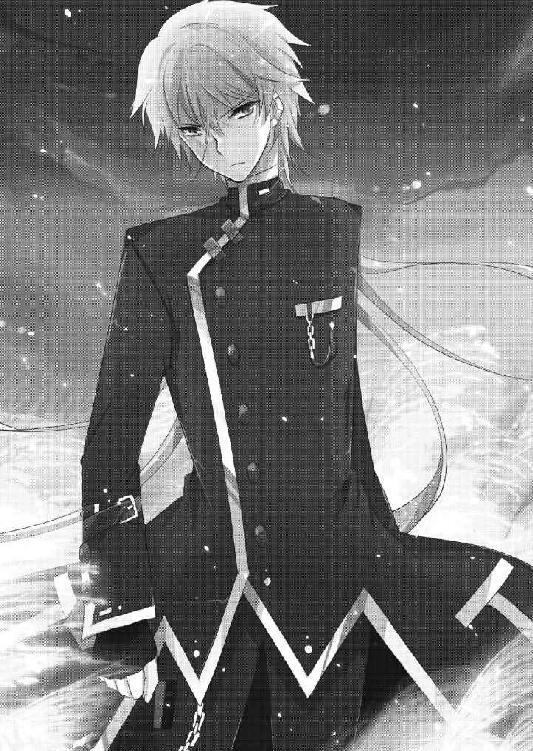
狼狽するイリーナを見て、光一は不敵に笑って彼女をビシッと指差した。
「教えてやろう──イリーナ・ベラベラ」
「イリーナ・ベラヴィナよ！」
「教えてやろう──イリーナ・ベラヴィナ」
言い直した。
「確かにお前の夢は幸せな夢だった。それは認めよう。たいしたものだ。しかし俺には通用しない。何故ならば──」
瞼を閉じて、再び見開く。
「──俺は現実でヒーローにならないと満足できないタチだからだ！」
リアルで中二病な台詞を吐くのも、二次元的なファッションなのも、魔法の詠唱を練習するのも、全てはフィクションではなく現実世界でアドベンチャーを望んだがため。妄想で済ませるならば夢で十分。
けれど夢や妄想じゃ満足できない人間を、中二病と呼ぶのだ。
つまりバカである。清々しく、雄々しいほどの、度し難いバカである。
「貴様はアルルを傷つけた......故に俺が断罪するッ！ 俺の法によってな！」
イリーナは光一のあまりのアホな気魄に気圧されて、数歩後ずさった。
光一は稲穂の中からゆっくりとイリーナへと近づいていく。
己が敵を前にして、この男は止まらない。もう迷わぬと決めた彼は、何者にも止めることは不可能。
と、思われたその時。
「──っ！ 九龍！ 彼の精神を破壊しなさい！ 完膚無きまでに痛めつけて夢を受け入れさせるの！」
わがままな娘が駄々をこねるように、イリーナは叫んだ。
すると、どこからともなく、
「──拝領」
スーツ姿の九龍政宗が、最初からそこにいたかのようにイリーナの前に現れた。
九龍からは初見の頃のおちゃらけた雰囲気は消えうせ、今は光一に対する怒りに満ちていた。
九龍は両腕を大きく広げて、意気揚々と光一の前に立ち塞がった。
「君は私を足蹴にした......この、私を！ 踏み台にした！ 許さない！ 許さない許さない許さない許すものか断じてェェッ！」
「げ、また貴様か......変態はもう勘弁してほしいのだが」
本気で嫌そうに、光一は九龍をじと目で睨んだ。
しかし九龍は聞く耳を持たない。光一に踏み潰されて鼻がへこんでしまった顔を搔き毟りながら、絶叫した。
「クケ、クケェ──ケケケケケケケケケケ！」
瞬間、無数の目視できぬ刃が光一を切り裂く。
光一は、避けることをせずに全て身に受けた。
「ぐぁぁ！ ぐ、ぎぃっ！」
避けても無駄なことはわかっている。射程距離はあるのだろうが、進まなければイリーナをぶっ飛ばすことができない。
だから、このまま進む。何度も足が吹き飛び、首が飛び、連続で死が襲う。意識が飛び、一瞬前の行動を忘れそうになる。
けれど止まらない。歩み寄る。着実に。
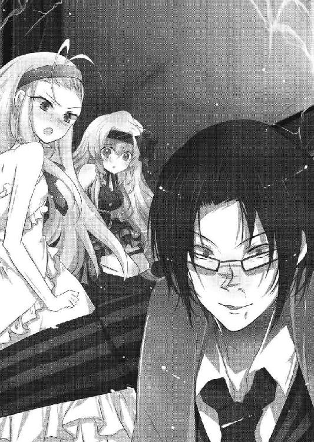
「カカカカカカカカ！ がんばるじゃあないか下賤が！ 根性のある獲物は嫌いじゃない！ あぁそうだぁ、そういえば君達がここに来る前も二人の能力者が私に立ち向かったよ！ 女騎士を連れた少女と透明化の力を持つ少女だったなァ！」
「!?」
光一が痛みではなく、九龍の言葉に戦慄する。
学校で見た、夢に囚われてしまった仲間を思い出し、喉の奥が熱くなる。
「夢を否定し、何度切り裂いてもイリーナ姫を受け入れなかった。気丈な子らだったよ！ 彼女らは強かった！ お互いに助け合い、最後まで我々に抗った！ もしかして君の仲間だったのかなぁ？ だとしたら残念だったねぇ、彼女らは姫自らが幸せにしてしまったよ！ クカッ！ カカカカカカカカ！」
九龍の高笑いが稲穂の波を揺るがす。
光一はわずかに頭をうなだれて、小さく呟いた。
「────そうか、あいつらは貴様達が」
薫と兎乃は、決して自分から幸せな夢を肯定したわけではなかったのだ。光一達がこの世界へやってくる前に、必死に戦って、そして無念の内に夢に囚われた。
この世界で死んでしまうと、夢に囚われてしまうという事実を、光一は知らない。
けれど薫達が最後まで抗って、その末に敗北したのだということは九龍が言った通り、真実として光一は理解する。それを仲間として誇りに思う。
口から声が漏れると同時に面を上げて、光一は己が敵を見定めた。
その瞬間に、痛みなど忘れてしまった。
ただ前を見据えて、突き進む。
九龍政宗を凝視しながら、猛進する。
「ぬぅ!?」
異変に気づいた九龍が《切り裂きジャック》を連射する。
が、意味が無い。傷は治癒するのだから無駄。痛みが無ければ意味が無い。こんなネメシスはせいぜい精神攻撃程度にしか使えない。今の光一に精神攻撃は無意味。光一の猛る決意を揺るがすなど到底不可能。
この佐藤光一という男は、バカになると信じられない心の強さを発揮する。
光一は九龍に難なく接近し、ついに彼の腕を鷲摑んだ。
「捕まえたぞ......九龍政宗」
「ひっ！」
光一の前髪から覗く双眸を見て、九龍が小さく悲鳴をあげた。
「あいつらの痛みを──貴様に返すッ！」
宣言の後、光一は左手の指を力強く弾いた。
「悲鳴を貪れ──《切り裂きジャック》！」
光一の怒号が、世界を揺るがす。
発動するネメシス。目視が可能なカッターナイフのような謎の刃が九龍を襲った。
「ひっ......ぃ？」
九龍は光一に摑まれた前腕部に、ほんのわずかな痛みを感じた。
見れば、一瞬だったがかすり傷程度の裂傷が、腕にできていた。
それはもう本当にかすり傷で、紙で指を切った程度のものだった。
「......く、くぷ、くふひひひひひひひひひひ！ なぁんだいこれはぁ!? この程度の痛みで、私をどうにかできると思っていたのかね!? 下賤のあがきは所詮──」
九龍はその傷を見て、堪えられずに爆笑した。
されど、
「いや、まだだぜ」
九龍の嘲りを遮って、光一は不敵に、かつ歪に笑う。
「何がまだだというんだね？ また一つかすり傷を増やそうとでもいうのかい？」
光一の言葉に首を傾げる九龍。
......彼が痛みに感づいたのは、その直後だった。
「いづっ！......？ い、痛っ！」
腕に、連続的な痛みが走る。
九龍は摑まれている前腕部を見た。
すると、そこには。
「な、何故、何故──傷が治癒していないのだッ!?」
《切り裂きジャック》の性能に則り、瞬時に癒えるはずの傷が治っていなかった。
それどころか、どんどんどんどん傷が増えていく。
「な、なんだこれはっ、どういうことだっ!? ぐぁぁぁぁぁ！ やめ、やめろっ、いた、痛い！ 痛い痛い痛い痛い！ ぐぎぃぃぃ！」
どこからともなくチャキチャキという細かく切り裂く音が響いてくる。
見れば、九龍の左腕はいつのまにか血だらけになっていた。
チャキチャキチャキチャキと音はどんどん速くなる。九龍の腕はもう肉がそげ、骨が丸見えになっていた。しかしそれでも止まらない。肩から顔、胴から足まで、細かい傷は広がっていく。
「残念だったな九龍正宗。俺の《切り裂きジャック》に治癒能力はねぇよ。んでもって代わりに伸ばした性能は──連射性だ」
光一が、悲鳴を上げる九龍に対してニヤリと笑う。
《切り裂きジャック》の性能は、見えない刃が対象を切り裂き、痛みを与えつつ傷を治癒させるという精神攻撃型のネメシスだ。
このネメシスを劣化させた場合、物理ダメージを打ち消す治癒能力は無くなり、不可視の刃は可視状態に。射程距離も零距離、つまり触れていなければターゲットに届かない。おまけに斬撃自体も最弱だ。
一見使い道のわからないしょぼいネメシスである。
だが光一は、この力を理解した上で、一つの特性、連射性だけを伸ばした。
結果は、ごらんの通りである。
回復能力を失った極細の刃が、九龍の身体を喰い散らかしていた。
光一は、悲鳴を上げる九龍に、自信を持って宣告する。
もはや誰の目にも明らかな、言葉通りの決め台詞を。
「貴様の負けだ──なまくら！」
「痛ぐ──痛ぎぎゃあああああああああああああああああああああああああああああああああああああああああああああああああああああああああああああああああああああああああああああああああああああああああああああああ!!」
断末魔の叫びが世界に響く。
間も無く、九龍は文字通り、骨すら残さず血煙と化した。
断末魔の残響が消え、静寂が戻ってくる。
光一は消え去った後に残った九龍の靴を見て、ふぅと息を吐いた。
そして──
「次は貴様の番だ──イリーナ・ベラヴィナ」
お馴染みの決め顔を怨敵に向けて、光一は不適に笑う。
ところが、そこで光一が見たのは......。
「うご、動かないで......」
ナイフをアルルの首に当てたイリーナが、震えながら立っている姿だった。
「コ、コーイチ......」
アルルが光一の名を呼ぶ。光一は、目を鋭く細めて、イリーナを睨んだ。
「う、動かないでってば！ 動けばこの子、この世界に永遠に囚われることになるのよ!?」
「......とことん屑だな、てめぇは」
「わた、私は......悪くない。だってこの世界の神様なんだもん！ 私はこの世界で全人類を幸せにするの！ みんなを救う存在なのよ!? それが何故わからないの!?」
ヒステリックな叫び声が、耳鳴りのようにやかましく鼓膜を震わせる。
卑屈に歪んだイリーナの顔は、見るだけで吐き気を催すほど醜かった。
アルルを人質に取られては、こちらから手出しはできない。光一にできることはせいぜい、隙が出るのを待つことだけだった。
「私は絶対に、幸せになってみせる......この世界で、みんなに愛されてみせるんだもの......！ 絶対に──邪魔なんてさせないんだからあああああああ！」
必死に怯えを振り払って、イリーナはアルルの首にナイフを沈めていく。
いけない。今のイリーナなら躊躇わずにアルルを殺しかねない。
ナイフがアルルの首を貫くのが先か、光一の秘策がこの夢の世界を砕くのが先か。
光一はなりふり構わず、イリーナに向かって飛び出そうとした。
──刹那。
「いや、残念ながら、君の夢は叶わない」
その声は、光一のものではなかった。
幽霊のように現れた、黒い布を羽織ったもう一人の少年。
能力泥棒、秋雨心路が、イリーナの背後に立っていた。
心路はイリーナが振り向く前にナイフを奪い、そして躊躇無く彼女の頭を鷲摑みにした。
「な、何をするの！ 離して！」
「断る。僕は僕の記憶を汚した君を許さない」
「そんなっ、あなただって！ 二重夢の中で幸せを望んでいたじゃない！」
「その通りだ。しかし夢は夢。幸福だとしても、僕の目的の邪魔になるのなら、この場で破壊させてもらう」
心路は握り潰すような勢いで、イリーナの頭をぎちぎちと強く握る。
イリーナが恐怖に顔を歪め、悲鳴を上げようとした瞬間、
「現実を突きつけろ──《幸福夢幻》」
光一が放ったネメシス発動の言霊と同じものを、心路は静かに吐き出した。
「い──ゃ......！......ぁ」
突然、あっけなく、イリーナはその場に倒れた。
受身も取れず、正面から床に転倒。
それ以後、ぴくりとも動くことはなかった。
「秋雨......お前」
駆け寄ってきたアルルを抱きしめてから、光一は背を向けた心路に声をかけた。
心路は後ろを向いたまま、光一の疑問に答える。
「能登原明日菜を起こす際に、君の劣化《幸福夢幻》をコピーさせてもらった。彼女は今、現実と同じ昏睡状態になった夢を見ている」
心路の淡々とした物言いに、光一は啞然とした。
イリーナを倒す方法は、心路の言う通りだった。光一が劣化させた《幸福夢幻》をイリーナにかけ、現実と何も変わらぬ夢を見せる。イリーナの現実とはすなわち、アンチテーゼによる昏睡状態。この世界で彼女の意識が昏睡したとなれば、夢の世界は維持できなくなり、崩壊する。
これが光一の考えた秘策だった。心路には一言も説明していなかったというのに、彼は自分自身で光一のネメシスを分析し、コピーして使用したのだ。
呆ける光一に背を向けて、心路は捨て台詞のようにこう残す。
「──予備の弾は用意しておいた方が、いいと思ってね」
心路がその場を去ろうとしたと同時に、夢の世界の崩壊が始まった。
ガラスが割れるように空間が砕け散っていく。
光一は終わろうとする世界の中で、アルルを片腕に抱きながら、やるせない顔をする。
「......コーイチ？ ど、どうした？」
「いつも......俺は、いつもこうなる定めなのか......？」
アルルを救ったというのに、釈然としないのは中二病としての性のせいだった。
いつも自分一人の力で敵が倒せない。いつも肝心なところで届かない。
ヒーローである以上、主人公であると信じたい以上、〆というものはきっちり決めたい。
そう思うのは悪いことかと運命に問いかけ、光一は誰にともなくこう叫んだ。
「また美味しいところだけ、もっていかれたぁ──！」
切実な慟哭が枯れてゆく稲穂の海に木霊する。
崩壊する夢の中心で、光一はアルルに頭を撫でられながら慰められるのであった。
エピローグ そして、より過酷な現実へ
目が覚めると──そこは自分の部屋だった。
「.........戻ってきた？」
本当に自分の部屋かどうかを確認するも、いまいち実感が湧かない。今もまだ夢の中にいるんじゃないかと、そんな不安さえ沸き起こってくる。
しかし、起き上がろうと自分の布団に手をつくと、
──むにゅ。
すごく柔らかい感触が手に襲い掛かってきた。
なんだこれ？ と自分の横を見てみると、
「むにゅ～............」
金髪碧眼のむにゅむにゅ星人が横たわっていた。
「うひゃぁ!?」
すっとんきょうな声で、驚いて飛び起きる。
「な、なんでまたこいつはここに......！」
もう何度目かの布団もぐりこみだというのに、相変わらず心臓の鼓動は早鐘だ。
しかし、疑問符全開のリアクションをしてみせてから、そういえば、と思い出した。
夢の世界へ入る前、夜中にアルルが部屋に来たのだ。今日は一緒に寝たい気分なのだ、とかなんとか言いながら、問答無用で布団に入ってきて、結局同衾することに。
一七歳の男女が一緒の布団で眠るという実に不健康な状況で、この童貞シャイな佐藤光一が眠れるわけもなく。結局深夜まで起きていたのを、ようやく思い出した。
「なるほど......夢世界に入るのが遅かったのはこいつのせいか」
はぁ、と溜息をついて、目覚まし時計を見る。
時刻は朝五時丁度。まだ寮の生徒も起きている者はいないだろう。
光一は、眠っていたはずなのに酷く疲れたし、もうひと眠りするかと決断。
盛大にあくびをして、もう一度アルルと一緒の布団にもぐりこもうとした。
プルルルルルルル......プルルルルルルル......。
その時、絶妙なタイミングで携帯電話が鳴り、光一は嫌々ながらも携帯を取った。
イライラした動作で通話ボタンを押す。
「ぁぃ......誰だ貴様、こんな時間に......」
『............あたし、薫よ。間宮』
薫からの電話だと気づいて、光一はがばりと身体を起こした。
「薫っ！ お前大丈夫なのか!?」
『ダメ......なんかすげームカつく夢見た気がすんのよね。全然思い出せないんだけどさ』
「......？ 思い出せない？」
薫は、もしかしてあの世界のことを覚えてないのだろうか。完全に夢として認識している？ 《幸福夢幻》には夢の中で死んだ人間は、現実に戻った時に記憶を失うという性能でもあったんだろうか。
......まあ、なんにせよ思い出せないなら、それに越したことはないか。
と、光一は真実を話そうと思ったが、直前で思い直した。
『思い出せないんだけど......でもね、夢にあんたが出てきた気がするのよ......』
「ほう......俺が？ それはさぞかしヒーローばりに美少女を助けていたんだろうな。なにせこの俺だからな」
キリッ。とか、電話ごしにカッコつけても意味がないのに、やってしまうのが光一である。
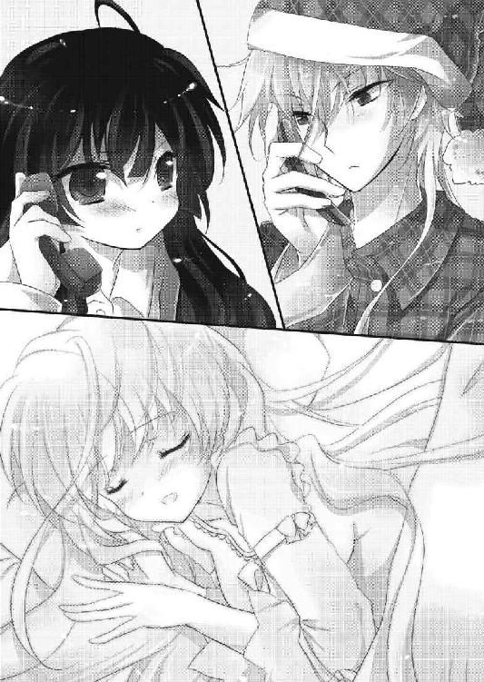
いつもならここでツッコミが返ってくるはずなので、光一はいつまでも待っていたが、一向に携帯から言葉が返ってくる様子がなかった。
『............』
「？ どうした薫。いつもならここで『ハァ!? 死ねば？』とか言うだろう」
調子が狂うので、光一は自分からそんなことを言った。
ところが、薫はいつものように突っぱねるような言い方はしなかった。
『ううん......だいたい合ってる』
「......へ？」
『あたしは夢の中で死んじゃってて......確か、あんたが仇取るために必死になってくれたのよ』
「ほ、ほぅ？」
覚えてないくせに、見てもいない場面を何故知っているのかと不思議でしょうがない光一。
『だから......まあ......その』
電話の向こうの薫は酷く口ごもって、何かを言いよどんでいた。
『夢だけど......お礼、言っておこうと思って』
「......礼？ お前が!?」
『ありがと。そんだけ』
ガチャ......ツー......ツー。
光一は呆け顔で携帯電話と睨めっこして、首を傾げながらベッドの上に座り直した。
そこで何をしようとしていたのかを忘れ、二度寝しようとしたことを思い出すまでに二分を費やし、結局......気がついたら目が覚めてしまっていた。
「くそぅ......俺の完璧な生活スタイルがこれでは崩れてしまう」
目を線にして、光一はベッドに腰掛けたまま腕を組んだ。
「むにゃ......コーイチィ......」
突然名前を呼ばれて、光一はアルルの顔を覗き見た。
アルルは口から涎を垂らしながら、超絶に幸せそうに眠っている。
「コーイチィ......だいすき......」
「──ぉ!?」
寝言でいきなり告白されて、凄まじく狼狽する。
「カオルもぉ......しゅきぃ......」
そして薫と扱いが同じなのだと思い知り、焦った自分に落ち込む。
光一は、やれやれと頭を搔きながら、アルルの頭をそっと撫でた。
たまには、こういうのも悪くない。今朝はアルルが起きるまで、ずっとこいつの寝顔を眺めていよう。
そんなことを思いながら、光一は今日も当たり前の日常に戻っていく。
幸せな現実を、大切にするために。
光一が現実に戻ってきたのと同じ時刻......雨鶴来市のとある廃病院。
使われなくなった病室に、何故か新品のシーツに包まれたベッドが一つ置かれている。
そのベッドには、白髪のやせ細った少女が眠っていた。
静かに寝息を立てるだけの人形のような少女。
彼女の横には、片手に本を抱いた少年がいた。
少年はベッドに腰を下ろして、静かに少女の額に手を当てている。
「んふ～～♪ やっぱりここにいたんれすねー、神しゃまーん」
と、静寂を破って、突然病室に奇抜な格好をした女がやってきた。
彼女の名前は月陽奏麻。シェード特務防諜班の班長であり、元オーロラ信者の最強の巫女だった人物である。
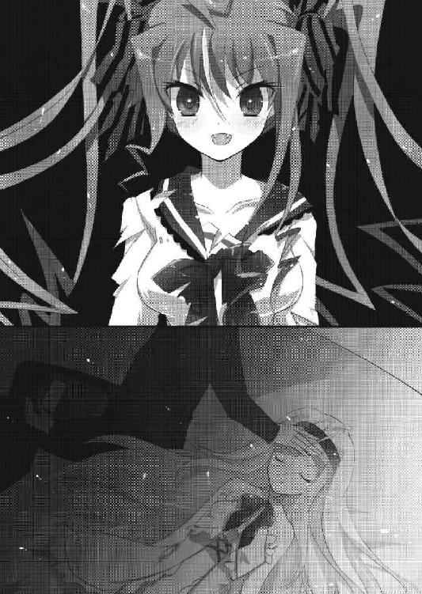
奏麻はニシシと笑いながら、少年の近くまでやってきた。
少年は目だけを奏麻に向けて、小さく笑った。
「よくここがわかったな。半年前から一度も連絡を取っていないはずだが」
「ぬふふぅ、ソーマちゃんの嗅覚を舐めてもらっちは困るのれす。わらしにかかれば容易いことなのれすよ？」
ぬふん、と胸を張る奏麻を、少年はやれやれという調子で首を振った。
「それで、何しにきた。俺はお前を呼んだ覚えはないが」
「いや～わらしも一応シェードの一員なんでねぃ。ちっとそこの犯罪者をとっ捕まえに」
「......なるほど。ようはつまり、いつもの気まぐれか」
少年の推察に、奏麻は「大当たり～」とはしゃぎながら指をくるくると回した。
少年は眠る少女から手を離してベッドから立ち上がり、一度少女の顔を見てから、病室の出口へと歩き始めた。
反対に今度は、少女に向かって奏麻が歩き始める。
二人がすれ違った時、奏麻が少年の耳元で、
「──彼に会ったよ」
そんなことを囁いた。
少年は無反応だったが、しばらくして肩を震わせてくつくつという笑いを漏らした。
「面白い......面白いな。この展開は、初めて経験する。さて......どうなるかいよいよ楽しみになってきたぞ」
歩みを再開して、病室のドアを開く。
「さあ、俺に届いてみせるがいい──《付け焼刃》の佐藤光一」
心底嬉しそうに、少年はそう言い残して病室を去って行った。
《幸福夢幻》の戦いから三日後。
相変わらず薄暗いシェード司令室を、光一は訪れていた。
彼がこの場所に来た理由は他でもない、夢の中で見た、能登原明日菜の過去について、本人に問うためだった。
光一はデスクの前に立ち、明日菜の反応を待っている。
明日菜は、光一に背を向けたまま、ただ黙って佇んでいた。
「......君が聞きたいことはわかっているよ」
光一は明日菜の言葉に答えない。
わかっているのなら、問う必要はないと考えたからだ。
明日菜は深く息を吐き、空を仰ぐように司令室の暗い天井を見上げた。
「いいよ。答えてあげる。もう見られてしまったんだ......いまさら隠す必要もない」
その抑揚のない声は、苦しみも悲しみも感じ取れなかった。
光一は、黙って明日菜の答えを待った。
明日菜は振り返ると同時に、光一の瞳を真っ直ぐに見つめる。
「率直に答えよう」
光一には、その答えを受け止める覚悟があるかどうか、自分自身でもわからなかった。けれど彼はここに来てしまった。
能登原明日菜の元を訪ねてしまった。故に、聞かないわけには、いかない。
明日菜は目を閉じて、静かに光一に真実を告げた。
「君の予想通り──この世界は、一度《一握りの希望》によって巻き戻されている」
驚愕は光一を襲わない。明日菜が言うように、あらかじめその答えは予想していたからだ。
だが、次の予想に確信はもてなかった。
だからこそ確かめたかった。
明日菜が、この目の前にいる女が、味方であるかどうかを。信じるに値する存在なのかどうかを。
確かめずには──いられなかった。
明日菜は閉じた目を開き、白と黒の反転した瞳を光一に向けた。
答えはその瞳に宿っていた。もはや聞かずともわかってしまった。
光一は静かに目を伏せる。
明日菜が次に口にする言葉が、わかってしまったから。
「そしてその《一握りの希望》を発動させたのは──この私だ」
明日菜の言葉に込められていたのは、絶望の始まりの物語だった。
今日のアンチテーゼ、そのさん。
夢から覚めた三日後の登校は、実にけだるいものだった。
「あー......ね～～み～～」
アルルと薫と共に昇天坂を上る光一の顔は、グロッキーを通り越してもはや屍のそれに近い。
先日の戦いでオリジナルを超えたネメシス、《切り裂きジャック》は夢の世界での発動だったためかアンチテーゼが発生していなかったが、《幸福夢幻》だけは別だったらしい。自分自身や心路達を二重夢から起こす際、射程距離（浸透度）の面でだけオリジナルを凌駕していたのだ。
おかげで光一は現在、「三日連続すごく眠い」というめちゃくちゃ地味なアンチテーゼの真っ最中だった。
「......あんたも寝不足なの？」
声をかけられて横を見ると、薫も同じようにしんどそうな顔をしていた。
「なんだ......お前もかブルータス」
「最近透が友達からモン○ン借りてきて夜通しでやってるのよ......昨日は一晩中付き合わされてね」
「ほー......透は双剣でお前はランス遣いとみた。ちなみに俺は太刀だ。太刀以外認めん」
「ううん......二人ともブーメランよ」
「......それはいくらなんでも」
二人して盛大に溜息をつき、老人と老婆のような足取りで坂を進む。
ところが、そんな二人を尻目に、一人だけめちゃくちゃハイテンションな奴がいた。
「コーイチー！ カオルー！ 遅いぞーっ！」
もちろん、それはアルルのことである。
彼女も光一達と同じように夢の世界を過ごしたというのに、二人と違って元気いっぱいだった。
「ま、眩しい......今のあたし達にはあの子は眩しすぎる......っ」
「まったくだ......あいつはなんでああも太陽のようにサンサンとした笑顔ができるんだ......」
坂の上でぶんぶん手を振っているアルルの笑顔は、寝不足な二人には吸血鬼と日光のような関係に近かった。
浄化される。浄化されてしまう。
ひぃ～と笑顔から目をそむける光一と薫。
しかし、本物の吸血鬼とは日中に外に出ることができないわけで。
たとえば、光一の背後に迫るこんな男のように......。
「フゥーッ......フゥーッ......」
......全身を防護服のようなスーツに身を包まなければ外に出られない者を、人は吸血鬼と呼ぶのだ。
「ぎゃあああああああ！」
「きゃあああああああ！」
絶妙に光一と薫の悲鳴がハモる。
横を見たら科学防護服を着たバイオハザード風味の怪人がいたのだ。
この反応は至極当然だった。
「なななな何よこれは！」
「パンデミックだ！ パンデミックに違いないッ！ 人がゾンビ化する類のウィルスが感染拡大したのだッ！」
「フゥーッ、アルルは、フゥー......ッ、ど、どこだ、フゥーッ」
ぶるぶる震えながら寄り添う光一と薫に、防護服さんが声をかけてきた。
アルルの名前を出されて、光一と薫はお互いの顔を見合わせる。
どこかで聞いたことがある声だなぁ、と、そう思って、二人は防護服の強化プラスチックの中を覗いてみた。
......目に深く隈が刻まれた、光一達以上に顔色の悪い男が中に入っていた。
「......朱里？」
「なにしてんだ貴様はッ。バイオハザードごっこか？」
こんこんとプラスチックを叩いて、中の矜持に声をかける。
防護服の中は白く曇っており、相当暑いであろうことは見ればわかった。というか異様に目立っている。当たり前のことだが、平穏な通学路にいきなり防護服着た謎の人物が現れたら、生物兵器でも雨鶴来市に撃ち込まれたんじゃないかと周りの生徒は不安に思う。登校中の連中は皆、防護服野郎を見て混乱していた。
何故こんな格好で暑い思いまでして学校までやってきたのかを、光一と薫は尋ねた。
すると、
「アルルはフゥーッ、昨日フゥーッ、佐藤の家にフゥーッ、泊まフゥーッ」
「......なんか昔こういうテンションのゲイ人がいた気がするわ」
薫が苦笑しながら、肩で息をする矜持を指さす。
と、指差した先、矜持の手元に何かあるのに気づいた。
「何だ？ その風呂敷に包まれた四角い物体は？」
「フゥーッ......弁当だ......フゥーッ、アルルの、フゥ、と、届けにフゥーッ、来た」
口数が少ない＆防護服のせいで伝わりづらい矜持の言動を推察するに、こういうことだろう。
昨日お前の家にアルルが泊まったから、アルルの弁当が無い。だから届けに来た。
「......わざわざお弁当届けに来たの？ 防護服着て？ そこまでしなくていいのに......心配しなくてもあたしの弁当分けてあげてたわよ」
「フゥーッ、無添加食材以外、フゥー、俺は認めないフゥーッ」
「............」
過保護すぎる母ちゃんが、ここにもう一人いた。
もはや苦笑すら漏れない。
二人が矜持にかなりの勢いで引いていると、
「おーっ！ キョージではないかっ。どうしたのだ？」
「べ、弁当フゥーッ、も、持ってフゥーッ......うぅ」
「おおっ、ボクのために届けにきてくれたのか？ ありがとうっ、キョージは本当にいい奴だっ！」
アルルは弁当を届けにきてくれた矜持に感動して、思いっきり抱きついた。
「!?!?!?」
「この恩は必ず返すぞーっ。何がいい？ そうだっ、ボクはやっと目玉焼きがちゃんと作れるようになったのだ！ 今度お前に作ってやるから楽しみにしているといいっ」
「フ、フゥーッ！ フゥーッ！ フゥーッ！」
抱きつかれたせいなのか目玉焼きが嬉しかったのかはわからないが、矜持の呼吸音が急激に加速する。アルルを溺愛している矜持にとって、ハグされるだけでも感涙ものなのだった。
そしてついに、
──ドズンッ！
矜持は背中からそのままぶっ倒れた。
「「死んだーッ!?」」
光一と薫の叫びがまたもやハモる。
音から察するに、防護服は数十キロ近くはあったのだろう。紫外線を防ぐためにそんなものを身に着けてここまでやってくるとは、見るからに虚弱そうな矜持にしては見上げた根性だった。
防護服を着た矜持は、そのままずるずると坂をずり落ちていく。
光一と薫とアルルは、坂を高速で転がり落ちていく矜持を追いかけて、結局ＨＲに遅刻するのであった。
坂を転がり落ちていく防護服から見えた矜持の顔は、鼻血に塗れながらも至福の笑みを浮かべていてとても不気味だったと、後に光一と薫は語ったとか語らなかったとか......。
【ステータスファイル 《無能箱庭》】
このネメシスは、キャンパスに描いた絵と全く同じ空間を構築することができる、という少々特殊な能力だ。構築した空間内では一切のネメシスが使用不可になるという規格外の性能も持ち合わせている。
そのため、シェードでは犯罪者の監禁や護衛対象の保護などに用いられていた。
また、空間内では小物や銃器などの無機物の生成も可能で、食料と水さえあれば人が快適に生活できる環境を構築することもできる。
アンチテーゼは、日の光に当たれなくなること。能力者は吸血鬼のような生活を余儀なくされている。
了
あとがき
イヤボーンは、正義。
初めましての方は初めまして、一巻から読んでくださっている方は、
本番は──これからだぜ？
はい。最近サバゲー仲間の前で、エアガンの銃口をこめかみに当てて「オルフェ○ス！」とか言ってどん引きされた柳実冬貴です。いまさらＰ３にはまってます。
さてさて......で、出ちゃった......第三巻（赤面）。いかがだったでしょうか？ 夢がひろがりんぐなお話でございます。
ぬぅ、今回のあとがきは長い予感。
なので気合いを入れ──ずに、リラックスしてぬるぬるとゆるゆるとまったりといこうと思います。脱線も、自嘲はしますが自重はしません。
では本編についてなんぞ。今回のテーマは夢と現実ですね。
自称夢追い人な光一が、別の意味での夢の中で千切っては投げ千切っては投げされるのが見どころですね。ん？ なんか違う？ いや、あながち間違いではないッ。
いつもとは逆を目指してみました。光一が奇行で周りの人間を翻弄するのではなく、周りが異常だらけで光一が翻弄されるというパターン。なので今回の光一はツッコミ役が多かったです。ハハッ、まあそれ以外の光一は相変わらずですけどね！ ハハッ！──だが私は謝らないキリッ。
あとは、いつもと違っていろいろとカオスなヒロイン達とか、すげー勢いでスパゲッティ食いまくってる能力泥棒さんとか、「中に誰もいませんよ」とか言い出しそうな優とかですかね。個人的には意外とお茶目な明日菜さんが一番気に入ってます。
それからやはり、今回は付け焼刃と能力泥棒のタッグでしょうか。
背中合わせってやってみたかったんですよねぇ。二巻では殴り合い宇宙をやったので、今回は二人三脚で凸凹コンビさせてみました。
まあ光一は相変わらず弱いんですけどね。へたれです。追い込まれないと力を発揮できない主人公が板についてきてしまったような。ア○ギと○イジで言ったら、激しく○イジ、みたいなね。むしろストリート○ァイターＺＥＲＯで、リ○ウじゃなくて激しくダ○、みたいな？ となると、波○拳と我○拳の対比が《贋作工房》と《付け焼刃》と同じなのか............わかりやすいようなわかりにくいような。
何はともあれ、あんまり強くはないけれど、光一は着々と真っ直ぐに成長しているはずです。
一方で、世界や明日菜の真実が明らかになってきましたね。
果たしてこの先どうなっていくのか、というのが今後の展開でございます。
えーと、まだまだ続きます。長いですね。さて何を書こう。
では、作中でさんざん出てくる中二病についての話なんぞを......わたくしの個人的な考えなので面白くないかもしれませんが、どうか平にご容赦を......。
率直に言って、私個人としては中二病と言われてしまう行動や言動は、悪いことではなく、むしろいいことだと考えています。
ラストバトル付近で、邪気眼（作中では中二病でくくってありますが）の持ち主は夢見がちだけど現実寄り、というようなことを書きましたが、あながち間違ってはいないんじゃないかなぁ、と。
漫画やアニメを見て「自分もこうなりたい！」と影響を受けて、リアルで実践するわけですからね。決して悪いことじゃあないと私は思うわけですよ。そうやって思春期に自分の中の芯を作っていくのだと思うわけですよ。だから私の過去の黒歴史も、成長のためのスパイスになっていたわけですよ（必死）。前髪の右半分だけ伸ばして片目を隠していたのも無駄ではなかったわけですよ（必死）。一〇年後の自分への手紙に「世界をお前の手で変えてみせろ」とかガチで書いていたのも必要なことだったんですよ！（超必死）
冗談はこれくらいにして、まじめに、他人を傷つけるようなことでなければ本気でいいことだと私は思っています。私も黒歴史だなんだと書いていますが、こういった行動をしていた自分の過去に、大人になってから恥ずかしかったなと思うことはあっても後悔したことはありません。それに、なんだかんだ言いつつ今だって世間様から見たら私は中二病です。でも、それでいいじゃないか、と心から思うのです。
何にも情熱が見出せない人生を送るよりよっぽど有意義ってもんだぜ？ 彼女いなくても俺はリア充だって胸張ってりゃいいんだ！ 笑われたっていいじゃないか！ 好きなこと全力でやるのは悪いことじゃあない！ だからこそもっと──
──熱くなれよォ！
という感じですね、私の中の中二病という言葉のイメージは。
うん、取り乱しました。だが私は（略）
まあ中二病っていろいろありすぎるんですけどね。でもこういう風に前向きに考えると、光一の「俺は現実でヒーローにならないと満足できない」という台詞が、なんだかカッコよく見えてきませんか？
......き......きませんか？
見えてきてくれたら......う、嬉しいなぁ。
さて、では作品や中二病のお話はこれくらいにして、次はご報告をば。
Ｒｅ（アールイー）：バカは世界を救えるか？
祝・ドラマＣＤ発売！
この企画を知った時の私は、素で「......なんてこったい」と放心しながら呟いてしまいました。ＰＶやゲームに引き続き、やー感謝感謝です。
まさか自分の作品のキャラクターに声優さんの声が吹き込まれるとは......感涙ものでした。
メインのキャストは以下の通りです。
佐藤光一（細谷佳正さん）
アルル（豊崎愛生さん）
間宮薫（悠木碧さん）
浅野広美（沢城みゆきさん）
桐咲兎乃（後藤沙緒里さん）
能登原明日菜（堀江由衣さん）
アルカナ（寿美菜子さん）
はい。ええ。
聞かされた時、正直驚きと喜びのあまり 吐 血 するかと思いました。「カハッ！」って。
すごい豪華なメンバーだ......今見ても凄まじい。アニメは結構見ますからね、当たり前のように知っていました。皆さん最近の良作アニメにご出演されている方ばかりです。刀使わない剣士だったり軽音部だったり吸血鬼の姫だったり薔薇乙女だったり「うぐぅ」の人だったりしていた方々ですよ。
正直、いろいろ高ぶりました。たまりません。
実は、収録現場にご挨拶と見学に行ってまいりました。眠れなかったのは言うまでもありません。そして当日、現場についてすごくわくわくしながら始まるのを待っていました。他のアニメやドラマＣＤはたくさん見たり聴いたりしてきましたが、自分の作品ですので、そりゃあ楽しみでした。
とまあ、私のことなどどうでもいいのです。
収録に入ると、いろんなものが吹き飛びました。
いやぁ、皆さん......熱かったです。本当にテンション高くしてくれた......。
プロって本当にすごいですね。ずっと放心状態でした。覇気というものがガラス越しに伝わってきました。キャラクターに命が吹き込まれる瞬間は感動して立ち上がりそうになりましたし。
もうここでキャラ別に感動を書き連ねてしまいそうです。そんなことをしていたらあとがきどころか文庫一冊埋まってしまいそうなので割愛しますが、本当に皆さん完璧に演じてくださいました。もうイラスト担当のモカさんと担当Ｔさんと一緒に「すげー」を連呼しっぱなしでしたね。手汗が止まらなかったです本当に。
可愛くて、熱いです。
このドラマＣＤは熱いです。
皆さんも是非是非聴いてみてください。本を読むのとはまた違った素晴らしい熱血とバカと感動があると思いますので、どうぞよろしくお願いします。
それでは謝辞を。
いつも愛のあるイラストを提供してくださる一葉モカさん。毎度ご迷惑をおかけしてしまっている担当のＴさん。ＰＶやゲーム、ドラマＣＤで度々お世話になったうさころにーの皆様、森井さん、ファンキーな某社Ｋさん。
ドラマＣＤのスタッフ、キャストの皆々様に感謝を。
そして、この本を読んでくださった全ての方々に、はちきれんばかりの感謝申し上げます。
ではでは、次の巻で、また！
柳実冬貴
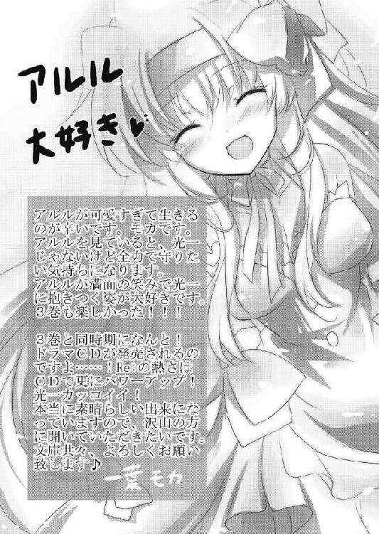
Ｒｅ（アールイー）：３
バカは世界を救えるか？
柳実冬貴

平成22年12月25日 発行
発行者 山下直久
発行所 株式会社富士見書房
〒102-8144 東京都千代田区富士見1-12-14
http://www.fujimishobo.co.jp/
(C)2010 Touki Yanagimi, Moka Ichiyo/Fujimishobo